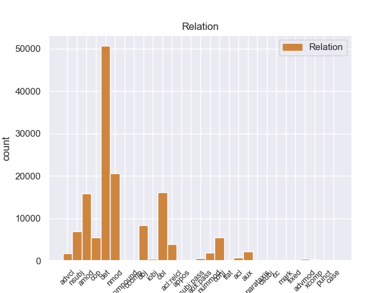
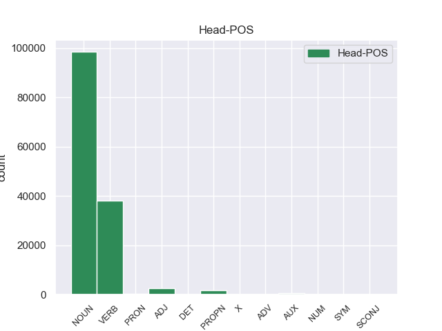
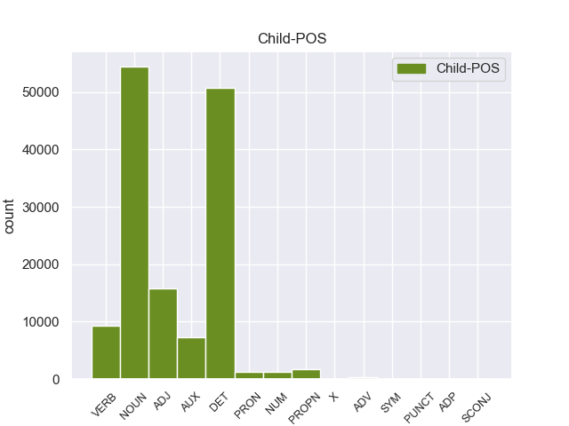

Distribution of features within this leaf



Agreement Rules sorted by frequency.
- When the dependent token is the determiner(det) of the head token, and the dependent token is DET.
1 En _ _ _ _ 0 _ _ _
2 1991 _ _ _ _ 0 _ _ _
3 , _ _ _ _ 0 _ _ _
4 como _ _ _ _ 0 _ _ _
5 ya _ _ _ _ 0 _ _ _
6 está _ _ _ _ 0 _ _ _
7 indicado _ _ _ _ 0 _ _ _
8 en _ _ _ _ 0 _ _ _
9 el _ _ _ _ 0 _ _ _
10 párrafo _ _ _ _ 0 _ _ _
11 anterior _ _ _ _ 0 _ _ _
12 , _ _ _ _ 0 _ _ _
13 se _ _ _ _ 0 _ _ _
14 creó _ _ _ _ 0 _ _ _
15 un _ _ _ _ 0 _ _ _
16 equipo _ _ _ _ 0 _ _ _
17 ad _ _ _ _ 0 _ _ _
18 hoc _ _ _ _ 0 _ _ _
19 para _ _ _ _ 0 _ _ _
20 averiguar _ _ _ _ 0 _ _ _
21 como _ _ _ _ 0 _ _ _
22 se _ _ _ _ 0 _ _ _
23 podía _ _ _ _ 0 _ _ _
24 desarrollar _ _ _ _ 0 _ _ _
25 el _ _ _ _ 0 _ _ _
26 Dialogo _ _ _ _ 0 _ _ _
27 Social _ _ _ _ 0 _ _ _
28 , _ _ _ _ 0 _ _ _
29 este _ _ _ _ 0 _ _ _
30 equipo _ _ _ _ 0 _ _ _
31 estaba _ _ _ _ 0 _ _ _
32 formado _ _ _ _ 0 _ _ _
33 por _ _ _ _ 0 _ _ _
34 representantes _ _ _ _ 0 _ _ _
35 de _ _ _ _ 0 _ _ _
36 todas _ _ _ _ 0 _ _ _
37 las el DET _ Definite=Def|Gender=Fem|Number=Plur|PronType=Art 38 det _ _
38 organizaciones organizacione NOUN _ Gender=Fem|Number=Plur 0 _ _ _
39 relacionadas _ _ _ _ 0 _ _ _
40 con _ _ _ _ 0 _ _ _
41 CES _ _ _ _ 0 _ _ _
42 , _ _ _ _ 0 _ _ _
43 UNICE _ _ _ _ 0 _ _ _
44 y _ _ _ _ 0 _ _ _
45 CEEP _ _ _ _ 0 _ _ _
46 ; _ _ _ _ 0 _ _ _
1 Esta _ _ _ _ 0 _ _ _
2 teoría _ _ _ _ 0 _ _ _
3 se _ _ _ _ 0 _ _ _
4 avenía _ _ _ _ 0 _ _ _
5 bien _ _ _ _ 0 _ _ _
6 con _ _ _ _ 0 _ _ _
7 la _ _ _ _ 0 _ _ _
8 creencia _ _ _ _ 0 _ _ _
9 de _ _ _ _ 0 _ _ _
10 el _ _ _ _ 0 _ _ _
11 Romanticismo _ _ _ _ 0 _ _ _
12 en _ _ _ _ 0 _ _ _
13 un _ _ _ _ 0 _ _ _
14 volkgeist _ _ _ _ 0 _ _ _
15 , _ _ _ _ 0 _ _ _
16 " _ _ _ _ 0 _ _ _
17 genio _ _ _ _ 0 _ _ _
18 o _ _ _ _ 0 _ _ _
19 espíritu _ _ _ _ 0 _ _ _
20 de _ _ _ _ 0 _ _ _
21 el _ _ _ _ 0 _ _ _
22 pueblo _ _ _ _ 0 _ _ _
23 " _ _ _ _ 0 _ _ _
24 , _ _ _ _ 0 _ _ _
25 autor autor NOUN _ Gender=Masc|Number=Sing 0 _ _ _
26 colectivo _ _ _ _ 0 _ _ _
27 y _ _ _ _ 0 _ _ _
28 anónimo _ _ _ _ 0 _ _ _
29 de _ _ _ _ 0 _ _ _
30 una _ _ _ _ 0 _ _ _
31 poesía poesía NOUN _ Gender=Fem|Number=Sing 25 nmod _ _
32 nacional _ _ _ _ 0 _ _ _
33 . _ _ _ _ 0 _ _ _
1 En _ _ _ _ 0 _ _ _
2 1991 _ _ _ _ 0 _ _ _
3 , _ _ _ _ 0 _ _ _
4 como _ _ _ _ 0 _ _ _
5 ya _ _ _ _ 0 _ _ _
6 está _ _ _ _ 0 _ _ _
7 indicado _ _ _ _ 0 _ _ _
8 en _ _ _ _ 0 _ _ _
9 el _ _ _ _ 0 _ _ _
10 párrafo _ _ _ _ 0 _ _ _
11 anterior _ _ _ _ 0 _ _ _
12 , _ _ _ _ 0 _ _ _
13 se _ _ _ _ 0 _ _ _
14 creó _ _ _ _ 0 _ _ _
15 un _ _ _ _ 0 _ _ _
16 equipo equipo NOUN _ Gender=Masc|Number=Sing 0 _ _ _
17 ad _ _ _ _ 0 _ _ _
18 hoc hoc ADJ _ Gender=Masc|Number=Sing 16 amod _ _
19 para _ _ _ _ 0 _ _ _
20 averiguar _ _ _ _ 0 _ _ _
21 como _ _ _ _ 0 _ _ _
22 se _ _ _ _ 0 _ _ _
23 podía _ _ _ _ 0 _ _ _
24 desarrollar _ _ _ _ 0 _ _ _
25 el _ _ _ _ 0 _ _ _
26 Dialogo _ _ _ _ 0 _ _ _
27 Social _ _ _ _ 0 _ _ _
28 , _ _ _ _ 0 _ _ _
29 este _ _ _ _ 0 _ _ _
30 equipo _ _ _ _ 0 _ _ _
31 estaba _ _ _ _ 0 _ _ _
32 formado _ _ _ _ 0 _ _ _
33 por _ _ _ _ 0 _ _ _
34 representantes _ _ _ _ 0 _ _ _
35 de _ _ _ _ 0 _ _ _
36 todas _ _ _ _ 0 _ _ _
37 las _ _ _ _ 0 _ _ _
38 organizaciones _ _ _ _ 0 _ _ _
39 relacionadas _ _ _ _ 0 _ _ _
40 con _ _ _ _ 0 _ _ _
41 CES _ _ _ _ 0 _ _ _
42 , _ _ _ _ 0 _ _ _
43 UNICE _ _ _ _ 0 _ _ _
44 y _ _ _ _ 0 _ _ _
45 CEEP _ _ _ _ 0 _ _ _
46 ; _ _ _ _ 0 _ _ _
1 En _ _ _ _ 0 _ _ _
2 1991 _ _ _ _ 0 _ _ _
3 , _ _ _ _ 0 _ _ _
4 como _ _ _ _ 0 _ _ _
5 ya _ _ _ _ 0 _ _ _
6 está _ _ _ _ 0 _ _ _
7 indicado indicado VERB _ Gender=Masc|Number=Sing|VerbForm=Part 0 _ _ _
8 en _ _ _ _ 0 _ _ _
9 el _ _ _ _ 0 _ _ _
10 párrafo párrafo NOUN _ Gender=Masc|Number=Sing 7 obl _ _
11 anterior _ _ _ _ 0 _ _ _
12 , _ _ _ _ 0 _ _ _
13 se _ _ _ _ 0 _ _ _
14 creó _ _ _ _ 0 _ _ _
15 un _ _ _ _ 0 _ _ _
16 equipo _ _ _ _ 0 _ _ _
17 ad _ _ _ _ 0 _ _ _
18 hoc _ _ _ _ 0 _ _ _
19 para _ _ _ _ 0 _ _ _
20 averiguar _ _ _ _ 0 _ _ _
21 como _ _ _ _ 0 _ _ _
22 se _ _ _ _ 0 _ _ _
23 podía _ _ _ _ 0 _ _ _
24 desarrollar _ _ _ _ 0 _ _ _
25 el _ _ _ _ 0 _ _ _
26 Dialogo _ _ _ _ 0 _ _ _
27 Social _ _ _ _ 0 _ _ _
28 , _ _ _ _ 0 _ _ _
29 este _ _ _ _ 0 _ _ _
30 equipo _ _ _ _ 0 _ _ _
31 estaba _ _ _ _ 0 _ _ _
32 formado _ _ _ _ 0 _ _ _
33 por _ _ _ _ 0 _ _ _
34 representantes _ _ _ _ 0 _ _ _
35 de _ _ _ _ 0 _ _ _
36 todas _ _ _ _ 0 _ _ _
37 las _ _ _ _ 0 _ _ _
38 organizaciones _ _ _ _ 0 _ _ _
39 relacionadas _ _ _ _ 0 _ _ _
40 con _ _ _ _ 0 _ _ _
41 CES _ _ _ _ 0 _ _ _
42 , _ _ _ _ 0 _ _ _
43 UNICE _ _ _ _ 0 _ _ _
44 y _ _ _ _ 0 _ _ _
45 CEEP _ _ _ _ 0 _ _ _
46 ; _ _ _ _ 0 _ _ _
1 En _ _ _ _ 0 _ _ _
2 1991 _ _ _ _ 0 _ _ _
3 , _ _ _ _ 0 _ _ _
4 como _ _ _ _ 0 _ _ _
5 ya _ _ _ _ 0 _ _ _
6 está _ _ _ _ 0 _ _ _
7 indicado _ _ _ _ 0 _ _ _
8 en _ _ _ _ 0 _ _ _
9 el _ _ _ _ 0 _ _ _
10 párrafo _ _ _ _ 0 _ _ _
11 anterior _ _ _ _ 0 _ _ _
12 , _ _ _ _ 0 _ _ _
13 se _ _ _ _ 0 _ _ _
14 creó crear VERB _ Mood=Ind|Number=Sing|Person=3|Tense=Past|VerbForm=Fin 0 _ _ _
15 un _ _ _ _ 0 _ _ _
16 equipo equipo NOUN _ Gender=Masc|Number=Sing 14 obj _ _
17 ad _ _ _ _ 0 _ _ _
18 hoc _ _ _ _ 0 _ _ _
19 para _ _ _ _ 0 _ _ _
20 averiguar _ _ _ _ 0 _ _ _
21 como _ _ _ _ 0 _ _ _
22 se _ _ _ _ 0 _ _ _
23 podía _ _ _ _ 0 _ _ _
24 desarrollar _ _ _ _ 0 _ _ _
25 el _ _ _ _ 0 _ _ _
26 Dialogo _ _ _ _ 0 _ _ _
27 Social _ _ _ _ 0 _ _ _
28 , _ _ _ _ 0 _ _ _
29 este _ _ _ _ 0 _ _ _
30 equipo _ _ _ _ 0 _ _ _
31 estaba _ _ _ _ 0 _ _ _
32 formado _ _ _ _ 0 _ _ _
33 por _ _ _ _ 0 _ _ _
34 representantes _ _ _ _ 0 _ _ _
35 de _ _ _ _ 0 _ _ _
36 todas _ _ _ _ 0 _ _ _
37 las _ _ _ _ 0 _ _ _
38 organizaciones _ _ _ _ 0 _ _ _
39 relacionadas _ _ _ _ 0 _ _ _
40 con _ _ _ _ 0 _ _ _
41 CES _ _ _ _ 0 _ _ _
42 , _ _ _ _ 0 _ _ _
43 UNICE _ _ _ _ 0 _ _ _
44 y _ _ _ _ 0 _ _ _
45 CEEP _ _ _ _ 0 _ _ _
46 ; _ _ _ _ 0 _ _ _
1 En _ _ _ _ 0 _ _ _
2 1991 _ _ _ _ 0 _ _ _
3 , _ _ _ _ 0 _ _ _
4 como _ _ _ _ 0 _ _ _
5 ya _ _ _ _ 0 _ _ _
6 está _ _ _ _ 0 _ _ _
7 indicado _ _ _ _ 0 _ _ _
8 en _ _ _ _ 0 _ _ _
9 el _ _ _ _ 0 _ _ _
10 párrafo _ _ _ _ 0 _ _ _
11 anterior _ _ _ _ 0 _ _ _
12 , _ _ _ _ 0 _ _ _
13 se _ _ _ _ 0 _ _ _
14 creó _ _ _ _ 0 _ _ _
15 un _ _ _ _ 0 _ _ _
16 equipo _ _ _ _ 0 _ _ _
17 ad _ _ _ _ 0 _ _ _
18 hoc _ _ _ _ 0 _ _ _
19 para _ _ _ _ 0 _ _ _
20 averiguar _ _ _ _ 0 _ _ _
21 como _ _ _ _ 0 _ _ _
22 se _ _ _ _ 0 _ _ _
23 podía _ _ _ _ 0 _ _ _
24 desarrollar _ _ _ _ 0 _ _ _
25 el _ _ _ _ 0 _ _ _
26 Dialogo _ _ _ _ 0 _ _ _
27 Social _ _ _ _ 0 _ _ _
28 , _ _ _ _ 0 _ _ _
29 este _ _ _ _ 0 _ _ _
30 equipo equipo NOUN _ Gender=Masc|Number=Sing 32 nsubj _ _
31 estaba _ _ _ _ 0 _ _ _
32 formado formado VERB _ Gender=Masc|Number=Sing|Tense=Past|VerbForm=Part 0 _ _ _
33 por _ _ _ _ 0 _ _ _
34 representantes _ _ _ _ 0 _ _ _
35 de _ _ _ _ 0 _ _ _
36 todas _ _ _ _ 0 _ _ _
37 las _ _ _ _ 0 _ _ _
38 organizaciones _ _ _ _ 0 _ _ _
39 relacionadas _ _ _ _ 0 _ _ _
40 con _ _ _ _ 0 _ _ _
41 CES _ _ _ _ 0 _ _ _
42 , _ _ _ _ 0 _ _ _
43 UNICE _ _ _ _ 0 _ _ _
44 y _ _ _ _ 0 _ _ _
45 CEEP _ _ _ _ 0 _ _ _
46 ; _ _ _ _ 0 _ _ _
1 En _ _ _ _ 0 _ _ _
2 1991 _ _ _ _ 0 _ _ _
3 , _ _ _ _ 0 _ _ _
4 como _ _ _ _ 0 _ _ _
5 ya _ _ _ _ 0 _ _ _
6 está _ _ _ _ 0 _ _ _
7 indicado _ _ _ _ 0 _ _ _
8 en _ _ _ _ 0 _ _ _
9 el _ _ _ _ 0 _ _ _
10 párrafo _ _ _ _ 0 _ _ _
11 anterior _ _ _ _ 0 _ _ _
12 , _ _ _ _ 0 _ _ _
13 se _ _ _ _ 0 _ _ _
14 creó _ _ _ _ 0 _ _ _
15 un _ _ _ _ 0 _ _ _
16 equipo _ _ _ _ 0 _ _ _
17 ad _ _ _ _ 0 _ _ _
18 hoc _ _ _ _ 0 _ _ _
19 para _ _ _ _ 0 _ _ _
20 averiguar _ _ _ _ 0 _ _ _
21 como _ _ _ _ 0 _ _ _
22 se _ _ _ _ 0 _ _ _
23 podía _ _ _ _ 0 _ _ _
24 desarrollar _ _ _ _ 0 _ _ _
25 el _ _ _ _ 0 _ _ _
26 Dialogo _ _ _ _ 0 _ _ _
27 Social _ _ _ _ 0 _ _ _
28 , _ _ _ _ 0 _ _ _
29 este _ _ _ _ 0 _ _ _
30 equipo _ _ _ _ 0 _ _ _
31 estaba sestab AUX _ Mood=Ind|Number=Sing|Person=3|Tense=Imp|VerbForm=Fin 32 cop _ _
32 formado formado VERB _ Gender=Masc|Number=Sing|Tense=Past|VerbForm=Part 0 _ _ _
33 por _ _ _ _ 0 _ _ _
34 representantes _ _ _ _ 0 _ _ _
35 de _ _ _ _ 0 _ _ _
36 todas _ _ _ _ 0 _ _ _
37 las _ _ _ _ 0 _ _ _
38 organizaciones _ _ _ _ 0 _ _ _
39 relacionadas _ _ _ _ 0 _ _ _
40 con _ _ _ _ 0 _ _ _
41 CES _ _ _ _ 0 _ _ _
42 , _ _ _ _ 0 _ _ _
43 UNICE _ _ _ _ 0 _ _ _
44 y _ _ _ _ 0 _ _ _
45 CEEP _ _ _ _ 0 _ _ _
46 ; _ _ _ _ 0 _ _ _
1 En _ _ _ _ 0 _ _ _
2 1991 _ _ _ _ 0 _ _ _
3 , _ _ _ _ 0 _ _ _
4 como _ _ _ _ 0 _ _ _
5 ya _ _ _ _ 0 _ _ _
6 está _ _ _ _ 0 _ _ _
7 indicado _ _ _ _ 0 _ _ _
8 en _ _ _ _ 0 _ _ _
9 el _ _ _ _ 0 _ _ _
10 párrafo _ _ _ _ 0 _ _ _
11 anterior _ _ _ _ 0 _ _ _
12 , _ _ _ _ 0 _ _ _
13 se _ _ _ _ 0 _ _ _
14 creó _ _ _ _ 0 _ _ _
15 un _ _ _ _ 0 _ _ _
16 equipo equipo NOUN _ Gender=Masc|Number=Sing 0 _ _ _
17 ad _ _ _ _ 0 _ _ _
18 hoc _ _ _ _ 0 _ _ _
19 para _ _ _ _ 0 _ _ _
20 averiguar _ _ _ _ 0 _ _ _
21 como _ _ _ _ 0 _ _ _
22 se _ _ _ _ 0 _ _ _
23 podía _ _ _ _ 0 _ _ _
24 desarrollar _ _ _ _ 0 _ _ _
25 el _ _ _ _ 0 _ _ _
26 Dialogo _ _ _ _ 0 _ _ _
27 Social _ _ _ _ 0 _ _ _
28 , _ _ _ _ 0 _ _ _
29 este _ _ _ _ 0 _ _ _
30 equipo _ _ _ _ 0 _ _ _
31 estaba _ _ _ _ 0 _ _ _
32 formado formado VERB _ Gender=Masc|Number=Sing|Tense=Past|VerbForm=Part 16 acl:relcl _ _
33 por _ _ _ _ 0 _ _ _
34 representantes _ _ _ _ 0 _ _ _
35 de _ _ _ _ 0 _ _ _
36 todas _ _ _ _ 0 _ _ _
37 las _ _ _ _ 0 _ _ _
38 organizaciones _ _ _ _ 0 _ _ _
39 relacionadas _ _ _ _ 0 _ _ _
40 con _ _ _ _ 0 _ _ _
41 CES _ _ _ _ 0 _ _ _
42 , _ _ _ _ 0 _ _ _
43 UNICE _ _ _ _ 0 _ _ _
44 y _ _ _ _ 0 _ _ _
45 CEEP _ _ _ _ 0 _ _ _
46 ; _ _ _ _ 0 _ _ _
1 Esta _ _ _ _ 0 _ _ _
2 teoría _ _ _ _ 0 _ _ _
3 se _ _ _ _ 0 _ _ _
4 avenía _ _ _ _ 0 _ _ _
5 bien _ _ _ _ 0 _ _ _
6 con _ _ _ _ 0 _ _ _
7 la _ _ _ _ 0 _ _ _
8 creencia _ _ _ _ 0 _ _ _
9 de _ _ _ _ 0 _ _ _
10 el _ _ _ _ 0 _ _ _
11 Romanticismo _ _ _ _ 0 _ _ _
12 en _ _ _ _ 0 _ _ _
13 un _ _ _ _ 0 _ _ _
14 volkgeist _ _ _ _ 0 _ _ _
15 , _ _ _ _ 0 _ _ _
16 " _ _ _ _ 0 _ _ _
17 genio _ _ _ _ 0 _ _ _
18 o _ _ _ _ 0 _ _ _
19 espíritu espíritu NOUN _ Gender=Masc|Number=Sing 0 _ _ _
20 de _ _ _ _ 0 _ _ _
21 el _ _ _ _ 0 _ _ _
22 pueblo _ _ _ _ 0 _ _ _
23 " _ _ _ _ 0 _ _ _
24 , _ _ _ _ 0 _ _ _
25 autor autor NOUN _ Gender=Masc|Number=Sing 19 conj _ _
26 colectivo _ _ _ _ 0 _ _ _
27 y _ _ _ _ 0 _ _ _
28 anónimo _ _ _ _ 0 _ _ _
29 de _ _ _ _ 0 _ _ _
30 una _ _ _ _ 0 _ _ _
31 poesía _ _ _ _ 0 _ _ _
32 nacional _ _ _ _ 0 _ _ _
33 . _ _ _ _ 0 _ _ _
1 " _ _ _ _ 0 _ _ _
2 Tenemos _ _ _ _ 0 _ _ _
3 todo _ _ _ _ 0 _ _ _
4 listo _ _ _ _ 0 _ _ _
5 , _ _ _ _ 0 _ _ _
6 la _ _ _ _ 0 _ _ _
7 venta _ _ _ _ 0 _ _ _
8 de _ _ _ _ 0 _ _ _
9 boletos _ _ _ _ 0 _ _ _
10 será _ _ _ _ 0 _ _ _
11 a _ _ _ _ 0 _ _ _
12 partir _ _ _ _ 0 _ _ _
13 de _ _ _ _ 0 _ _ _
14 mañana _ _ _ _ 0 _ _ _
15 de _ _ _ _ 0 _ _ _
16 8 _ _ _ _ 0 _ _ _
17 am _ _ _ _ 0 _ _ _
18 a _ _ _ _ 0 _ _ _
19 3 _ _ _ _ 0 _ _ _
20 pm _ _ _ _ 0 _ _ _
21 , _ _ _ _ 0 _ _ _
22 la _ _ _ _ 0 _ _ _
23 afición _ _ _ _ 0 _ _ _
24 de _ _ _ _ 0 _ _ _
25 el _ _ _ _ 0 _ _ _
26 Real _ _ _ _ 0 _ _ _
27 España _ _ _ _ 0 _ _ _
28 podrá _ _ _ _ 0 _ _ _
29 comprar _ _ _ _ 0 _ _ _
30 en _ _ _ _ 0 _ _ _
31 el _ _ _ _ 0 _ _ _
32 Banco _ _ _ _ 0 _ _ _
33 Continental _ _ _ _ 0 _ _ _
34 , _ _ _ _ 0 _ _ _
35 frente _ _ _ _ 0 _ _ _
36 a _ _ _ _ 0 _ _ _
37 el _ _ _ _ 0 _ _ _
38 estadio _ _ _ _ 0 _ _ _
39 Morazán _ _ _ _ 0 _ _ _
40 , _ _ _ _ 0 _ _ _
41 se _ _ _ _ 0 _ _ _
42 han _ _ _ _ 0 _ _ _
43 puesto _ _ _ _ 0 _ _ _
44 a _ _ _ _ 0 _ _ _
45 la _ _ _ _ 0 _ _ _
46 venta _ _ _ _ 0 _ _ _
47 800 _ _ _ _ 0 _ _ _
48 boletos _ _ _ _ 0 _ _ _
49 , _ _ _ _ 0 _ _ _
50 500 _ _ _ _ 0 _ _ _
51 en _ _ _ _ 0 _ _ _
52 sol _ _ _ _ 0 _ _ _
53 y _ _ _ _ 0 _ _ _
54 300 _ _ _ _ 0 _ _ _
55 en _ _ _ _ 0 _ _ _
56 preferencia _ _ _ _ 0 _ _ _
57 , _ _ _ _ 0 _ _ _
58 la _ _ _ _ 0 _ _ _
59 boletería _ _ _ _ 0 _ _ _
60 de _ _ _ _ 0 _ _ _
61 el _ _ _ _ 0 _ _ _
62 España _ _ _ _ 0 _ _ _
63 está _ _ _ _ 0 _ _ _
64 ya _ _ _ _ 0 _ _ _
65 identificada identificada VERB _ Gender=Fem|Number=Sing|VerbForm=Part 0 _ _ _
66 con _ _ _ _ 0 _ _ _
67 el _ _ _ _ 0 _ _ _
68 escudo _ _ _ _ 0 _ _ _
69 de _ _ _ _ 0 _ _ _
70 el _ _ _ _ 0 _ _ _
71 equipo _ _ _ _ 0 _ _ _
72 y _ _ _ _ 0 _ _ _
73 con _ _ _ _ 0 _ _ _
74 el _ _ _ _ 0 _ _ _
75 color _ _ _ _ 0 _ _ _
76 amarillo _ _ _ _ 0 _ _ _
77 " _ _ _ _ 0 _ _ _
78 , _ _ _ _ 0 _ _ _
79 comentó comentó VERB _ Mood=Ind|Number=Sing|Person=3|Tense=Past|VerbForm=Fin 65 advcl _ _
80 Rolin _ _ _ _ 0 _ _ _
81 . _ _ _ _ 0 _ _ _
1 Jazmin _ _ _ _ 0 _ _ _
2 es _ _ _ _ 0 _ _ _
3 todo _ _ _ _ 0 _ _ _
4 lo _ _ _ _ 0 _ _ _
5 contrario _ _ _ _ 0 _ _ _
6 , _ _ _ _ 0 _ _ _
7 es _ _ _ _ 0 _ _ _
8 tímida tímida ADJ _ Gender=Masc|Number=Sing 0 _ _ _
9 y _ _ _ _ 0 _ _ _
10 callada _ _ _ _ 0 _ _ _
11 , _ _ _ _ 0 _ _ _
12 pero _ _ _ _ 0 _ _ _
13 siempre _ _ _ _ 0 _ _ _
14 es _ _ _ _ 0 _ _ _
15 arrastrada arrastrada VERB _ Gender=Fem|Number=Sing|VerbForm=Part 8 conj _ _
16 por _ _ _ _ 0 _ _ _
17 las _ _ _ _ 0 _ _ _
18 locuras _ _ _ _ 0 _ _ _
19 y _ _ _ _ 0 _ _ _
20 travesuras _ _ _ _ 0 _ _ _
21 que _ _ _ _ 0 _ _ _
22 inventa _ _ _ _ 0 _ _ _
23 Alma _ _ _ _ 0 _ _ _
24 . _ _ _ _ 0 _ _ _
1 En _ _ _ _ 0 _ _ _
2 1991 _ _ _ _ 0 _ _ _
3 , _ _ _ _ 0 _ _ _
4 como _ _ _ _ 0 _ _ _
5 ya _ _ _ _ 0 _ _ _
6 está encor AUX _ Mood=Ind|Number=Sing|Person=3|Tense=Pres|VerbForm=Fin 7 aux _ _
7 indicado indicado VERB _ Gender=Masc|Number=Sing|VerbForm=Part 0 _ _ _
8 en _ _ _ _ 0 _ _ _
9 el _ _ _ _ 0 _ _ _
10 párrafo _ _ _ _ 0 _ _ _
11 anterior _ _ _ _ 0 _ _ _
12 , _ _ _ _ 0 _ _ _
13 se _ _ _ _ 0 _ _ _
14 creó _ _ _ _ 0 _ _ _
15 un _ _ _ _ 0 _ _ _
16 equipo _ _ _ _ 0 _ _ _
17 ad _ _ _ _ 0 _ _ _
18 hoc _ _ _ _ 0 _ _ _
19 para _ _ _ _ 0 _ _ _
20 averiguar _ _ _ _ 0 _ _ _
21 como _ _ _ _ 0 _ _ _
22 se _ _ _ _ 0 _ _ _
23 podía _ _ _ _ 0 _ _ _
24 desarrollar _ _ _ _ 0 _ _ _
25 el _ _ _ _ 0 _ _ _
26 Dialogo _ _ _ _ 0 _ _ _
27 Social _ _ _ _ 0 _ _ _
28 , _ _ _ _ 0 _ _ _
29 este _ _ _ _ 0 _ _ _
30 equipo _ _ _ _ 0 _ _ _
31 estaba _ _ _ _ 0 _ _ _
32 formado _ _ _ _ 0 _ _ _
33 por _ _ _ _ 0 _ _ _
34 representantes _ _ _ _ 0 _ _ _
35 de _ _ _ _ 0 _ _ _
36 todas _ _ _ _ 0 _ _ _
37 las _ _ _ _ 0 _ _ _
38 organizaciones _ _ _ _ 0 _ _ _
39 relacionadas _ _ _ _ 0 _ _ _
40 con _ _ _ _ 0 _ _ _
41 CES _ _ _ _ 0 _ _ _
42 , _ _ _ _ 0 _ _ _
43 UNICE _ _ _ _ 0 _ _ _
44 y _ _ _ _ 0 _ _ _
45 CEEP _ _ _ _ 0 _ _ _
46 ; _ _ _ _ 0 _ _ _
1 " _ _ _ _ 0 _ _ _
2 Tenemos _ _ _ _ 0 _ _ _
3 todo _ _ _ _ 0 _ _ _
4 listo _ _ _ _ 0 _ _ _
5 , _ _ _ _ 0 _ _ _
6 la _ _ _ _ 0 _ _ _
7 venta _ _ _ _ 0 _ _ _
8 de _ _ _ _ 0 _ _ _
9 boletos _ _ _ _ 0 _ _ _
10 será _ _ _ _ 0 _ _ _
11 a _ _ _ _ 0 _ _ _
12 partir _ _ _ _ 0 _ _ _
13 de _ _ _ _ 0 _ _ _
14 mañana _ _ _ _ 0 _ _ _
15 de _ _ _ _ 0 _ _ _
16 8 _ _ _ _ 0 _ _ _
17 am _ _ _ _ 0 _ _ _
18 a _ _ _ _ 0 _ _ _
19 3 _ _ _ _ 0 _ _ _
20 pm _ _ _ _ 0 _ _ _
21 , _ _ _ _ 0 _ _ _
22 la _ _ _ _ 0 _ _ _
23 afición _ _ _ _ 0 _ _ _
24 de _ _ _ _ 0 _ _ _
25 el _ _ _ _ 0 _ _ _
26 Real _ _ _ _ 0 _ _ _
27 España _ _ _ _ 0 _ _ _
28 podrá _ _ _ _ 0 _ _ _
29 comprar _ _ _ _ 0 _ _ _
30 en _ _ _ _ 0 _ _ _
31 el _ _ _ _ 0 _ _ _
32 Banco _ _ _ _ 0 _ _ _
33 Continental _ _ _ _ 0 _ _ _
34 , _ _ _ _ 0 _ _ _
35 frente _ _ _ _ 0 _ _ _
36 a _ _ _ _ 0 _ _ _
37 el _ _ _ _ 0 _ _ _
38 estadio _ _ _ _ 0 _ _ _
39 Morazán _ _ _ _ 0 _ _ _
40 , _ _ _ _ 0 _ _ _
41 se _ _ _ _ 0 _ _ _
42 han _ _ _ _ 0 _ _ _
43 puesto _ _ _ _ 0 _ _ _
44 a _ _ _ _ 0 _ _ _
45 la _ _ _ _ 0 _ _ _
46 venta _ _ _ _ 0 _ _ _
47 800 800 NUM _ Number=Plur|NumType=Card 48 nummod _ _
48 boletos boleto NOUN _ Gender=Fem|Number=Plur 0 _ _ _
49 , _ _ _ _ 0 _ _ _
50 500 _ _ _ _ 0 _ _ _
51 en _ _ _ _ 0 _ _ _
52 sol _ _ _ _ 0 _ _ _
53 y _ _ _ _ 0 _ _ _
54 300 _ _ _ _ 0 _ _ _
55 en _ _ _ _ 0 _ _ _
56 preferencia _ _ _ _ 0 _ _ _
57 , _ _ _ _ 0 _ _ _
58 la _ _ _ _ 0 _ _ _
59 boletería _ _ _ _ 0 _ _ _
60 de _ _ _ _ 0 _ _ _
61 el _ _ _ _ 0 _ _ _
62 España _ _ _ _ 0 _ _ _
63 está _ _ _ _ 0 _ _ _
64 ya _ _ _ _ 0 _ _ _
65 identificada _ _ _ _ 0 _ _ _
66 con _ _ _ _ 0 _ _ _
67 el _ _ _ _ 0 _ _ _
68 escudo _ _ _ _ 0 _ _ _
69 de _ _ _ _ 0 _ _ _
70 el _ _ _ _ 0 _ _ _
71 equipo _ _ _ _ 0 _ _ _
72 y _ _ _ _ 0 _ _ _
73 con _ _ _ _ 0 _ _ _
74 el _ _ _ _ 0 _ _ _
75 color _ _ _ _ 0 _ _ _
76 amarillo _ _ _ _ 0 _ _ _
77 " _ _ _ _ 0 _ _ _
78 , _ _ _ _ 0 _ _ _
79 comentó _ _ _ _ 0 _ _ _
80 Rolin _ _ _ _ 0 _ _ _
81 . _ _ _ _ 0 _ _ _
1 Joramun _ _ _ _ 0 _ _ _
2 se _ _ _ _ 0 _ _ _
3 supone _ _ _ _ 0 _ _ _
4 que _ _ _ _ 0 _ _ _
5 era _ _ _ _ 0 _ _ _
6 un _ _ _ _ 0 _ _ _
7 legendario legendario NOUN _ Gender=Masc|Number=Sing 8 amod _ _
8 Rey rey NOUN _ Gender=Masc|Number=Sing 0 _ _ _
9 - _ _ _ _ 0 _ _ _
10 Más _ _ _ _ 0 _ _ _
11 - _ _ _ _ 0 _ _ _
12 Allá _ _ _ _ 0 _ _ _
13 - _ _ _ _ 0 _ _ _
14 de _ _ _ _ 0 _ _ _
15 el _ _ _ _ 0 _ _ _
16 - _ _ _ _ 0 _ _ _
17 Muro _ _ _ _ 0 _ _ _
18 , _ _ _ _ 0 _ _ _
19 a _ _ _ _ 0 _ _ _
20 el _ _ _ _ 0 _ _ _
21 norte _ _ _ _ 0 _ _ _
22 de _ _ _ _ 0 _ _ _
23 los _ _ _ _ 0 _ _ _
24 Siete _ _ _ _ 0 _ _ _
25 Reinos _ _ _ _ 0 _ _ _
26 . _ _ _ _ 0 _ _ _
1 Esta _ _ _ _ 0 _ _ _
2 teoría _ _ _ _ 0 _ _ _
3 se _ _ _ _ 0 _ _ _
4 avenía _ _ _ _ 0 _ _ _
5 bien _ _ _ _ 0 _ _ _
6 con _ _ _ _ 0 _ _ _
7 la _ _ _ _ 0 _ _ _
8 creencia creencia NOUN _ Gender=Fem|Number=Sing 0 _ _ _
9 de _ _ _ _ 0 _ _ _
10 el _ _ _ _ 0 _ _ _
11 Romanticismo romanticismo PROPN _ Gender=Masc|Number=Sing 8 nmod _ _
12 en _ _ _ _ 0 _ _ _
13 un _ _ _ _ 0 _ _ _
14 volkgeist _ _ _ _ 0 _ _ _
15 , _ _ _ _ 0 _ _ _
16 " _ _ _ _ 0 _ _ _
17 genio _ _ _ _ 0 _ _ _
18 o _ _ _ _ 0 _ _ _
19 espíritu _ _ _ _ 0 _ _ _
20 de _ _ _ _ 0 _ _ _
21 el _ _ _ _ 0 _ _ _
22 pueblo _ _ _ _ 0 _ _ _
23 " _ _ _ _ 0 _ _ _
24 , _ _ _ _ 0 _ _ _
25 autor _ _ _ _ 0 _ _ _
26 colectivo _ _ _ _ 0 _ _ _
27 y _ _ _ _ 0 _ _ _
28 anónimo _ _ _ _ 0 _ _ _
29 de _ _ _ _ 0 _ _ _
30 una _ _ _ _ 0 _ _ _
31 poesía _ _ _ _ 0 _ _ _
32 nacional _ _ _ _ 0 _ _ _
33 . _ _ _ _ 0 _ _ _
1 La _ _ _ _ 0 _ _ _
2 reconstrucción _ _ _ _ 0 _ _ _
3 de _ _ _ _ 0 _ _ _
4 el _ _ _ _ 0 _ _ _
5 sistema _ _ _ _ 0 _ _ _
6 educativo _ _ _ _ 0 _ _ _
7 sigue sigue VERB _ Mood=Ind|Number=Sing|Person=3|Tense=Pres|VerbForm=Fin 10 cop _ _
8 siendo _ _ _ _ 0 _ _ _
9 una _ _ _ _ 0 _ _ _
10 prioridad prioridad NOUN _ Gender=Fem|Number=Sing 0 _ _ _
11 de _ _ _ _ 0 _ _ _
12 el _ _ _ _ 0 _ _ _
13 gobierno _ _ _ _ 0 _ _ _
14 de _ _ _ _ 0 _ _ _
15 Ruanda _ _ _ _ 0 _ _ _
16 . _ _ _ _ 0 _ _ _
1 Saint _ _ _ _ 0 _ _ _
2 - _ _ _ _ 0 _ _ _
3 Hippolyte _ _ _ _ 0 _ _ _
4 ( _ _ _ _ 0 _ _ _
5 en _ _ _ _ 0 _ _ _
6 occitano _ _ _ _ 0 _ _ _
7 Sent _ _ _ _ 0 _ _ _
8 Ipòli _ _ _ _ 0 _ _ _
9 ) _ _ _ _ 0 _ _ _
10 es _ _ _ _ 0 _ _ _
11 una _ _ _ _ 0 _ _ _
12 población población NOUN _ Gender=Fem|Number=Sing 0 _ _ _
13 y _ _ _ _ 0 _ _ _
14 comuna _ _ _ _ 0 _ _ _
15 francesa _ _ _ _ 0 _ _ _
16 , _ _ _ _ 0 _ _ _
17 situada situada VERB _ Gender=Fem|Number=Sing|VerbForm=Part 12 acl _ _
18 en _ _ _ _ 0 _ _ _
19 la _ _ _ _ 0 _ _ _
20 región _ _ _ _ 0 _ _ _
21 de _ _ _ _ 0 _ _ _
22 Aquitania _ _ _ _ 0 _ _ _
23 , _ _ _ _ 0 _ _ _
24 departamento _ _ _ _ 0 _ _ _
25 de _ _ _ _ 0 _ _ _
26 Gironda _ _ _ _ 0 _ _ _
27 , _ _ _ _ 0 _ _ _
28 en _ _ _ _ 0 _ _ _
29 el _ _ _ _ 0 _ _ _
30 distrito _ _ _ _ 0 _ _ _
31 de _ _ _ _ 0 _ _ _
32 Libourne _ _ _ _ 0 _ _ _
33 y _ _ _ _ 0 _ _ _
34 cantón _ _ _ _ 0 _ _ _
35 de _ _ _ _ 0 _ _ _
36 Castillon _ _ _ _ 0 _ _ _
37 - _ _ _ _ 0 _ _ _
38 la _ _ _ _ 0 _ _ _
39 - _ _ _ _ 0 _ _ _
40 Bataille _ _ _ _ 0 _ _ _
41 . _ _ _ _ 0 _ _ _
1 Jazmin _ _ _ _ 0 _ _ _
2 es _ _ _ _ 0 _ _ _
3 todo _ _ _ _ 0 _ _ _
4 lo _ _ _ _ 0 _ _ _
5 contrario _ _ _ _ 0 _ _ _
6 , _ _ _ _ 0 _ _ _
7 es _ _ _ _ 0 _ _ _
8 tímida tímida ADJ _ Gender=Masc|Number=Sing 0 _ _ _
9 y _ _ _ _ 0 _ _ _
10 callada callada ADJ _ Gender=Masc|Number=Sing 8 conj _ _
11 , _ _ _ _ 0 _ _ _
12 pero _ _ _ _ 0 _ _ _
13 siempre _ _ _ _ 0 _ _ _
14 es _ _ _ _ 0 _ _ _
15 arrastrada _ _ _ _ 0 _ _ _
16 por _ _ _ _ 0 _ _ _
17 las _ _ _ _ 0 _ _ _
18 locuras _ _ _ _ 0 _ _ _
19 y _ _ _ _ 0 _ _ _
20 travesuras _ _ _ _ 0 _ _ _
21 que _ _ _ _ 0 _ _ _
22 inventa _ _ _ _ 0 _ _ _
23 Alma _ _ _ _ 0 _ _ _
24 . _ _ _ _ 0 _ _ _
1 Este _ _ _ _ 0 _ _ _
2 combustible _ _ _ _ 0 _ _ _
3 fue ser AUX _ Mood=Ind|Number=Sing|Person=3|Tense=Past|VerbForm=Fin 4 aux:pass _ _
4 desarrollado desarrollado VERB _ Gender=Masc|Number=Sing|VerbForm=Part 0 _ _ _
5 en _ _ _ _ 0 _ _ _
6 Suecia _ _ _ _ 0 _ _ _
7 por _ _ _ _ 0 _ _ _
8 la _ _ _ _ 0 _ _ _
9 firma _ _ _ _ 0 _ _ _
10 productora _ _ _ _ 0 _ _ _
11 de _ _ _ _ 0 _ _ _
12 etanol _ _ _ _ 0 _ _ _
13 SEKAB _ _ _ _ 0 _ _ _
14 . _ _ _ _ 0 _ _ _
1 Me _ _ _ _ 0 _ _ _
2 lo él PRON _ Case=Acc|Gender=Masc|Number=Sing|Person=3|PrepCase=Npr|PronType=Prs 3 iobj _ _
3 pasé pasé VERB _ Mood=Ind|Number=Sing|Person=3|Tense=Pres|VerbForm=Fin 0 _ _ _
4 muy _ _ _ _ 0 _ _ _
5 bien _ _ _ _ 0 _ _ _
6 currando _ _ _ _ 0 _ _ _
7 allí _ _ _ _ 0 _ _ _
8 . _ _ _ _ 0 _ _ _
1 Por _ _ _ _ 0 _ _ _
2 otro _ _ _ _ 0 _ _ _
3 lado _ _ _ _ 0 _ _ _
4 , _ _ _ _ 0 _ _ _
5 se _ _ _ _ 0 _ _ _
6 incorporó _ _ _ _ 0 _ _ _
7 a _ _ _ _ 0 _ _ _
8 el _ _ _ _ 0 _ _ _
9 economista _ _ _ _ 0 _ _ _
10 Domingo _ _ _ _ 0 _ _ _
11 Cavallo _ _ _ _ 0 _ _ _
12 en _ _ _ _ 0 _ _ _
13 el _ _ _ _ 0 _ _ _
14 tercer tercer NOUN _ Gender=Masc|Number=Sing 15 nummod _ _
15 lugar lugar NOUN _ Gender=Masc|Number=Sing 0 _ _ _
16 de _ _ _ _ 0 _ _ _
17 la _ _ _ _ 0 _ _ _
18 nómina _ _ _ _ 0 _ _ _
19 de _ _ _ _ 0 _ _ _
20 candidatos _ _ _ _ 0 _ _ _
21 a _ _ _ _ 0 _ _ _
22 diputados _ _ _ _ 0 _ _ _
23 nacionales _ _ _ _ 0 _ _ _
24 . _ _ _ _ 0 _ _ _
1 " _ _ _ _ 0 _ _ _
2 Tenemos tenemos VERB _ Mood=Ind|Number=Sing|Person=3|Tense=Pres|VerbForm=Fin 0 _ _ _
3 todo _ _ _ _ 0 _ _ _
4 listo _ _ _ _ 0 _ _ _
5 , _ _ _ _ 0 _ _ _
6 la _ _ _ _ 0 _ _ _
7 venta _ _ _ _ 0 _ _ _
8 de _ _ _ _ 0 _ _ _
9 boletos _ _ _ _ 0 _ _ _
10 será srár VERB _ Mood=Ind|Number=Sing|Person=3|Tense=Pres|VerbForm=Fin 2 aux _ _
11 a _ _ _ _ 0 _ _ _
12 partir _ _ _ _ 0 _ _ _
13 de _ _ _ _ 0 _ _ _
14 mañana _ _ _ _ 0 _ _ _
15 de _ _ _ _ 0 _ _ _
16 8 _ _ _ _ 0 _ _ _
17 am _ _ _ _ 0 _ _ _
18 a _ _ _ _ 0 _ _ _
19 3 _ _ _ _ 0 _ _ _
20 pm _ _ _ _ 0 _ _ _
21 , _ _ _ _ 0 _ _ _
22 la _ _ _ _ 0 _ _ _
23 afición _ _ _ _ 0 _ _ _
24 de _ _ _ _ 0 _ _ _
25 el _ _ _ _ 0 _ _ _
26 Real _ _ _ _ 0 _ _ _
27 España _ _ _ _ 0 _ _ _
28 podrá _ _ _ _ 0 _ _ _
29 comprar _ _ _ _ 0 _ _ _
30 en _ _ _ _ 0 _ _ _
31 el _ _ _ _ 0 _ _ _
32 Banco _ _ _ _ 0 _ _ _
33 Continental _ _ _ _ 0 _ _ _
34 , _ _ _ _ 0 _ _ _
35 frente _ _ _ _ 0 _ _ _
36 a _ _ _ _ 0 _ _ _
37 el _ _ _ _ 0 _ _ _
38 estadio _ _ _ _ 0 _ _ _
39 Morazán _ _ _ _ 0 _ _ _
40 , _ _ _ _ 0 _ _ _
41 se _ _ _ _ 0 _ _ _
42 han _ _ _ _ 0 _ _ _
43 puesto _ _ _ _ 0 _ _ _
44 a _ _ _ _ 0 _ _ _
45 la _ _ _ _ 0 _ _ _
46 venta _ _ _ _ 0 _ _ _
47 800 _ _ _ _ 0 _ _ _
48 boletos _ _ _ _ 0 _ _ _
49 , _ _ _ _ 0 _ _ _
50 500 _ _ _ _ 0 _ _ _
51 en _ _ _ _ 0 _ _ _
52 sol _ _ _ _ 0 _ _ _
53 y _ _ _ _ 0 _ _ _
54 300 _ _ _ _ 0 _ _ _
55 en _ _ _ _ 0 _ _ _
56 preferencia _ _ _ _ 0 _ _ _
57 , _ _ _ _ 0 _ _ _
58 la _ _ _ _ 0 _ _ _
59 boletería _ _ _ _ 0 _ _ _
60 de _ _ _ _ 0 _ _ _
61 el _ _ _ _ 0 _ _ _
62 España _ _ _ _ 0 _ _ _
63 está _ _ _ _ 0 _ _ _
64 ya _ _ _ _ 0 _ _ _
65 identificada _ _ _ _ 0 _ _ _
66 con _ _ _ _ 0 _ _ _
67 el _ _ _ _ 0 _ _ _
68 escudo _ _ _ _ 0 _ _ _
69 de _ _ _ _ 0 _ _ _
70 el _ _ _ _ 0 _ _ _
71 equipo _ _ _ _ 0 _ _ _
72 y _ _ _ _ 0 _ _ _
73 con _ _ _ _ 0 _ _ _
74 el _ _ _ _ 0 _ _ _
75 color _ _ _ _ 0 _ _ _
76 amarillo _ _ _ _ 0 _ _ _
77 " _ _ _ _ 0 _ _ _
78 , _ _ _ _ 0 _ _ _
79 comentó _ _ _ _ 0 _ _ _
80 Rolin _ _ _ _ 0 _ _ _
81 . _ _ _ _ 0 _ _ _
1 De _ _ _ _ 0 _ _ _
2 la _ _ _ _ 0 _ _ _
3 Vega _ _ _ _ 0 _ _ _
4 ha _ _ _ _ 0 _ _ _
5 pedido _ _ _ _ 0 _ _ _
6 respetar _ _ _ _ 0 _ _ _
7 los _ _ _ _ 0 _ _ _
8 tiempos _ _ _ _ 0 _ _ _
9 de _ _ _ _ 0 _ _ _
10 los _ _ _ _ 0 _ _ _
11 procesos _ _ _ _ 0 _ _ _
12 y _ _ _ _ 0 _ _ _
13 de _ _ _ _ 0 _ _ _
14 la _ _ _ _ 0 _ _ _
15 misma _ _ _ _ 0 _ _ _
16 manera _ _ _ _ 0 _ _ _
17 que _ _ _ _ 0 _ _ _
18 no _ _ _ _ 0 _ _ _
19 ha _ _ _ _ 0 _ _ _
20 querido _ _ _ _ 0 _ _ _
21 entrar _ _ _ _ 0 _ _ _
22 en _ _ _ _ 0 _ _ _
23 la _ _ _ _ 0 _ _ _
24 salida _ _ _ _ 0 _ _ _
25 de _ _ _ _ 0 _ _ _
26 Corbacho _ _ _ _ 0 _ _ _
27 , _ _ _ _ 0 _ _ _
28 tampoco _ _ _ _ 0 _ _ _
29 lo él PRON _ Case=Acc|Gender=Masc|Number=Sing|Person=3|PrepCase=Npr|PronType=Prs 31 obj _ _
30 ha _ _ _ _ 0 _ _ _
31 hecho hecho VERB _ Gender=Masc|Number=Sing|Tense=Past|VerbForm=Part 0 _ _ _
32 la _ _ _ _ 0 _ _ _
33 posible _ _ _ _ 0 _ _ _
34 salida _ _ _ _ 0 _ _ _
35 de _ _ _ _ 0 _ _ _
36 Trinidad _ _ _ _ 0 _ _ _
37 Jiménez _ _ _ _ 0 _ _ _
38 , _ _ _ _ 0 _ _ _
39 que _ _ _ _ 0 _ _ _
40 le _ _ _ _ 0 _ _ _
41 acompañaba _ _ _ _ 0 _ _ _
42 en _ _ _ _ 0 _ _ _
43 la _ _ _ _ 0 _ _ _
44 sala _ _ _ _ 0 _ _ _
45 de _ _ _ _ 0 _ _ _
46 prensa _ _ _ _ 0 _ _ _
47 . _ _ _ _ 0 _ _ _
1 La _ _ _ _ 0 _ _ _
2 serie _ _ _ _ 0 _ _ _
3 tiene tener VERB _ Mood=Ind|Number=Sing|Person=3|Tense=Pres|VerbForm=Fin 0 _ _ _
4 una _ _ _ _ 0 _ _ _
5 trama _ _ _ _ 0 _ _ _
6 muy _ _ _ _ 0 _ _ _
7 simple _ _ _ _ 0 _ _ _
8 : _ _ _ _ 0 _ _ _
9 Federrico _ _ _ _ 0 _ _ _
10 se _ _ _ _ 0 _ _ _
11 involucra involucra VERB _ Mood=Ind|Number=Sing|Person=3|Tense=Past|VerbForm=Fin 3 xcomp _ _
12 en _ _ _ _ 0 _ _ _
13 aventuras _ _ _ _ 0 _ _ _
14 divertidas _ _ _ _ 0 _ _ _
15 en _ _ _ _ 0 _ _ _
16 la _ _ _ _ 0 _ _ _
17 escuela _ _ _ _ 0 _ _ _
18 o _ _ _ _ 0 _ _ _
19 con _ _ _ _ 0 _ _ _
20 sus _ _ _ _ 0 _ _ _
21 amigos _ _ _ _ 0 _ _ _
22 . _ _ _ _ 0 _ _ _
1 Jazmin _ _ _ _ 0 _ _ _
2 es _ _ _ _ 0 _ _ _
3 todo _ _ _ _ 0 _ _ _
4 lo lo PRON _ Case=Acc|Gender=Masc|Number=Sing|Person=3|PrepCase=Npr|PronType=Prs 5 det _ _
5 contrario contrario NOUN _ Gender=Masc|Number=Sing 0 _ _ _
6 , _ _ _ _ 0 _ _ _
7 es _ _ _ _ 0 _ _ _
8 tímida _ _ _ _ 0 _ _ _
9 y _ _ _ _ 0 _ _ _
10 callada _ _ _ _ 0 _ _ _
11 , _ _ _ _ 0 _ _ _
12 pero _ _ _ _ 0 _ _ _
13 siempre _ _ _ _ 0 _ _ _
14 es _ _ _ _ 0 _ _ _
15 arrastrada _ _ _ _ 0 _ _ _
16 por _ _ _ _ 0 _ _ _
17 las _ _ _ _ 0 _ _ _
18 locuras _ _ _ _ 0 _ _ _
19 y _ _ _ _ 0 _ _ _
20 travesuras _ _ _ _ 0 _ _ _
21 que _ _ _ _ 0 _ _ _
22 inventa _ _ _ _ 0 _ _ _
23 Alma _ _ _ _ 0 _ _ _
24 . _ _ _ _ 0 _ _ _
1 De _ _ _ _ 0 _ _ _
2 la _ _ _ _ 0 _ _ _
3 Vega vega PROPN _ Gender=Fem|Number=Sing 5 obl _ _
4 ha _ _ _ _ 0 _ _ _
5 pedido peder VERB _ Mood=Ind|Number=Sing|Person=3|Tense=Past|VerbForm=Fin 0 _ _ _
6 respetar _ _ _ _ 0 _ _ _
7 los _ _ _ _ 0 _ _ _
8 tiempos _ _ _ _ 0 _ _ _
9 de _ _ _ _ 0 _ _ _
10 los _ _ _ _ 0 _ _ _
11 procesos _ _ _ _ 0 _ _ _
12 y _ _ _ _ 0 _ _ _
13 de _ _ _ _ 0 _ _ _
14 la _ _ _ _ 0 _ _ _
15 misma _ _ _ _ 0 _ _ _
16 manera _ _ _ _ 0 _ _ _
17 que _ _ _ _ 0 _ _ _
18 no _ _ _ _ 0 _ _ _
19 ha _ _ _ _ 0 _ _ _
20 querido _ _ _ _ 0 _ _ _
21 entrar _ _ _ _ 0 _ _ _
22 en _ _ _ _ 0 _ _ _
23 la _ _ _ _ 0 _ _ _
24 salida _ _ _ _ 0 _ _ _
25 de _ _ _ _ 0 _ _ _
26 Corbacho _ _ _ _ 0 _ _ _
27 , _ _ _ _ 0 _ _ _
28 tampoco _ _ _ _ 0 _ _ _
29 lo _ _ _ _ 0 _ _ _
30 ha _ _ _ _ 0 _ _ _
31 hecho _ _ _ _ 0 _ _ _
32 la _ _ _ _ 0 _ _ _
33 posible _ _ _ _ 0 _ _ _
34 salida _ _ _ _ 0 _ _ _
35 de _ _ _ _ 0 _ _ _
36 Trinidad _ _ _ _ 0 _ _ _
37 Jiménez _ _ _ _ 0 _ _ _
38 , _ _ _ _ 0 _ _ _
39 que _ _ _ _ 0 _ _ _
40 le _ _ _ _ 0 _ _ _
41 acompañaba _ _ _ _ 0 _ _ _
42 en _ _ _ _ 0 _ _ _
43 la _ _ _ _ 0 _ _ _
44 sala _ _ _ _ 0 _ _ _
45 de _ _ _ _ 0 _ _ _
46 prensa _ _ _ _ 0 _ _ _
47 . _ _ _ _ 0 _ _ _
1 El _ _ _ _ 0 _ _ _
2 Levante levante PROPN _ Gender=Masc|Number=Sing 5 nsubj _ _
3 U. _ _ _ _ 0 _ _ _
4 D. _ _ _ _ 0 _ _ _
5 jugaba jugaba VERB _ Mood=Ind|Number=Sing|Person=3|Tense=Pres|VerbForm=Fin 0 _ _ _
6 sus _ _ _ _ 0 _ _ _
7 partidos _ _ _ _ 0 _ _ _
8 anteriormente _ _ _ _ 0 _ _ _
9 en _ _ _ _ 0 _ _ _
10 el _ _ _ _ 0 _ _ _
11 campo _ _ _ _ 0 _ _ _
12 de _ _ _ _ 0 _ _ _
13 Vallejo _ _ _ _ 0 _ _ _
14 . _ _ _ _ 0 _ _ _
1 " _ _ _ _ 0 _ _ _
2 Tenemos _ _ _ _ 0 _ _ _
3 todo _ _ _ _ 0 _ _ _
4 listo _ _ _ _ 0 _ _ _
5 , _ _ _ _ 0 _ _ _
6 la _ _ _ _ 0 _ _ _
7 venta _ _ _ _ 0 _ _ _
8 de _ _ _ _ 0 _ _ _
9 boletos _ _ _ _ 0 _ _ _
10 será _ _ _ _ 0 _ _ _
11 a _ _ _ _ 0 _ _ _
12 partir _ _ _ _ 0 _ _ _
13 de _ _ _ _ 0 _ _ _
14 mañana _ _ _ _ 0 _ _ _
15 de _ _ _ _ 0 _ _ _
16 8 _ _ _ _ 0 _ _ _
17 am _ _ _ _ 0 _ _ _
18 a _ _ _ _ 0 _ _ _
19 3 _ _ _ _ 0 _ _ _
20 pm _ _ _ _ 0 _ _ _
21 , _ _ _ _ 0 _ _ _
22 la _ _ _ _ 0 _ _ _
23 afición _ _ _ _ 0 _ _ _
24 de _ _ _ _ 0 _ _ _
25 el _ _ _ _ 0 _ _ _
26 Real _ _ _ _ 0 _ _ _
27 España _ _ _ _ 0 _ _ _
28 podrá _ _ _ _ 0 _ _ _
29 comprar _ _ _ _ 0 _ _ _
30 en _ _ _ _ 0 _ _ _
31 el _ _ _ _ 0 _ _ _
32 Banco _ _ _ _ 0 _ _ _
33 Continental _ _ _ _ 0 _ _ _
34 , _ _ _ _ 0 _ _ _
35 frente _ _ _ _ 0 _ _ _
36 a _ _ _ _ 0 _ _ _
37 el _ _ _ _ 0 _ _ _
38 estadio _ _ _ _ 0 _ _ _
39 Morazán _ _ _ _ 0 _ _ _
40 , _ _ _ _ 0 _ _ _
41 se _ _ _ _ 0 _ _ _
42 han _ _ _ _ 0 _ _ _
43 puesto _ _ _ _ 0 _ _ _
44 a _ _ _ _ 0 _ _ _
45 la _ _ _ _ 0 _ _ _
46 venta _ _ _ _ 0 _ _ _
47 800 _ _ _ _ 0 _ _ _
48 boletos _ _ _ _ 0 _ _ _
49 , _ _ _ _ 0 _ _ _
50 500 _ _ _ _ 0 _ _ _
51 en _ _ _ _ 0 _ _ _
52 sol _ _ _ _ 0 _ _ _
53 y _ _ _ _ 0 _ _ _
54 300 _ _ _ _ 0 _ _ _
55 en _ _ _ _ 0 _ _ _
56 preferencia _ _ _ _ 0 _ _ _
57 , _ _ _ _ 0 _ _ _
58 la _ _ _ _ 0 _ _ _
59 boletería _ _ _ _ 0 _ _ _
60 de _ _ _ _ 0 _ _ _
61 el _ _ _ _ 0 _ _ _
62 España _ _ _ _ 0 _ _ _
63 está _ _ _ _ 0 _ _ _
64 ya ya ADV _ Gender=Masc|Number=Sing|Tense=Past|VerbForm=Part 65 advmod _ _
65 identificada identificada VERB _ Gender=Fem|Number=Sing|VerbForm=Part 0 _ _ _
66 con _ _ _ _ 0 _ _ _
67 el _ _ _ _ 0 _ _ _
68 escudo _ _ _ _ 0 _ _ _
69 de _ _ _ _ 0 _ _ _
70 el _ _ _ _ 0 _ _ _
71 equipo _ _ _ _ 0 _ _ _
72 y _ _ _ _ 0 _ _ _
73 con _ _ _ _ 0 _ _ _
74 el _ _ _ _ 0 _ _ _
75 color _ _ _ _ 0 _ _ _
76 amarillo _ _ _ _ 0 _ _ _
77 " _ _ _ _ 0 _ _ _
78 , _ _ _ _ 0 _ _ _
79 comentó _ _ _ _ 0 _ _ _
80 Rolin _ _ _ _ 0 _ _ _
81 . _ _ _ _ 0 _ _ _
1 Ahora _ _ _ _ 0 _ _ _
2 se _ _ _ _ 0 _ _ _
3 aunan _ _ _ _ 0 _ _ _
4 cocina _ _ _ _ 0 _ _ _
5 y _ _ _ _ 0 _ _ _
6 entorno _ _ _ _ 0 _ _ _
7 , _ _ _ _ 0 _ _ _
8 me _ _ _ _ 0 _ _ _
9 encanto _ _ _ _ 0 _ _ _
10 la _ _ _ _ 0 _ _ _
11 bodega _ _ _ _ 0 _ _ _
12 , _ _ _ _ 0 _ _ _
13 las _ _ _ _ 0 _ _ _
14 sillas _ _ _ _ 0 _ _ _
15 son _ _ _ _ 0 _ _ _
16 comodisimas _ _ _ _ 0 _ _ _
17 , _ _ _ _ 0 _ _ _
18 la _ _ _ _ 0 _ _ _
19 iluminacion _ _ _ _ 0 _ _ _
20 es _ _ _ _ 0 _ _ _
21 excepcional _ _ _ _ 0 _ _ _
22 , _ _ _ _ 0 _ _ _
23 alcanzas _ _ _ _ 0 _ _ _
24 un _ _ _ _ 0 _ _ _
25 grado _ _ _ _ 0 _ _ _
26 de _ _ _ _ 0 _ _ _
27 satisfaccion _ _ _ _ 0 _ _ _
28 que _ _ _ _ 0 _ _ _
29 no _ _ _ _ 0 _ _ _
30 se _ _ _ _ 0 _ _ _
31 puede _ _ _ _ 0 _ _ _
32 describir _ _ _ _ 0 _ _ _
33 , _ _ _ _ 0 _ _ _
34 hay _ _ _ _ 0 _ _ _
35 que _ _ _ _ 0 _ _ _
36 probar _ _ _ _ 0 _ _ _
37 lo _ _ _ _ 0 _ _ _
38 , _ _ _ _ 0 _ _ _
39 es _ _ _ _ 0 _ _ _
40 la _ _ _ _ 0 _ _ _
41 primera primero ADJ _ Gender=Fem|Number=Sing 42 nummod _ _
42 vez vez NOUN _ Gender=Fem|Number=Sing 0 _ _ _
43 en _ _ _ _ 0 _ _ _
44 mi _ _ _ _ 0 _ _ _
45 vda _ _ _ _ 0 _ _ _
46 que _ _ _ _ 0 _ _ _
47 una _ _ _ _ 0 _ _ _
48 cocina _ _ _ _ 0 _ _ _
49 me _ _ _ _ 0 _ _ _
50 emociona _ _ _ _ 0 _ _ _
51 hasta _ _ _ _ 0 _ _ _
52 ese _ _ _ _ 0 _ _ _
53 punto _ _ _ _ 0 _ _ _
54 . _ _ _ _ 0 _ _ _
1 Para _ _ _ _ 0 _ _ _
2 poder _ _ _ _ 0 _ _ _
3 estudiar _ _ _ _ 0 _ _ _
4 los _ _ _ _ 0 _ _ _
5 mejor _ _ _ _ 0 _ _ _
6 , _ _ _ _ 0 _ _ _
7 Ghazali _ _ _ _ 0 _ _ _
8 introdujo _ _ _ _ 0 _ _ _
9 varios _ _ _ _ 0 _ _ _
10 peces _ _ _ _ 0 _ _ _
11 en _ _ _ _ 0 _ _ _
12 un _ _ _ _ 0 _ _ _
13 tanque _ _ _ _ 0 _ _ _
14 y _ _ _ _ 0 _ _ _
15 , _ _ _ _ 0 _ _ _
16 tras _ _ _ _ 0 _ _ _
17 varias variao DET _ Number=Plur|NumType=Card 18 nummod _ _
18 semanas semana NOUN _ Gender=Fem|Number=Plur 0 _ _ _
19 de _ _ _ _ 0 _ _ _
20 aclimatación _ _ _ _ 0 _ _ _
21 , _ _ _ _ 0 _ _ _
22 comenzó _ _ _ _ 0 _ _ _
23 a _ _ _ _ 0 _ _ _
24 grabar _ _ _ _ 0 _ _ _
25 sus _ _ _ _ 0 _ _ _
26 sonidos _ _ _ _ 0 _ _ _
27 , _ _ _ _ 0 _ _ _
28 según _ _ _ _ 0 _ _ _
29 recoge _ _ _ _ 0 _ _ _
30 el _ _ _ _ 0 _ _ _
31 periódico _ _ _ _ 0 _ _ _
32 New _ _ _ _ 0 _ _ _
33 Zealand _ _ _ _ 0 _ _ _
34 Herald _ _ _ _ 0 _ _ _
35 . _ _ _ _ 0 _ _ _
1 Ese _ _ _ _ 0 _ _ _
2 mismo mismo DET _ Gender=Masc|Number=Sing 3 amod _ _
3 año año NOUN _ Gender=Masc|Number=Sing 0 _ _ _
4 participó _ _ _ _ 0 _ _ _
5 con _ _ _ _ 0 _ _ _
6 el _ _ _ _ 0 _ _ _
7 equipo _ _ _ _ 0 _ _ _
8 ruso _ _ _ _ 0 _ _ _
9 en _ _ _ _ 0 _ _ _
10 la _ _ _ _ 0 _ _ _
11 Olimpiada _ _ _ _ 0 _ _ _
12 de _ _ _ _ 0 _ _ _
13 Ajedrez _ _ _ _ 0 _ _ _
14 de _ _ _ _ 0 _ _ _
15 Estambul _ _ _ _ 0 _ _ _
16 y _ _ _ _ 0 _ _ _
17 obtuvo _ _ _ _ 0 _ _ _
18 la _ _ _ _ 0 _ _ _
19 medalla _ _ _ _ 0 _ _ _
20 de _ _ _ _ 0 _ _ _
21 bronce _ _ _ _ 0 _ _ _
22 en _ _ _ _ 0 _ _ _
23 tanto _ _ _ _ 0 _ _ _
24 que _ _ _ _ 0 _ _ _
25 mejor _ _ _ _ 0 _ _ _
26 segunda _ _ _ _ 0 _ _ _
27 jugador _ _ _ _ 0 _ _ _
28 reservista _ _ _ _ 0 _ _ _
29 de _ _ _ _ 0 _ _ _
30 el _ _ _ _ 0 _ _ _
31 torneo _ _ _ _ 0 _ _ _
32 ( _ _ _ _ 0 _ _ _
33 los _ _ _ _ 0 _ _ _
34 equipos _ _ _ _ 0 _ _ _
35 estaban _ _ _ _ 0 _ _ _
36 formados _ _ _ _ 0 _ _ _
37 por _ _ _ _ 0 _ _ _
38 cuatro _ _ _ _ 0 _ _ _
39 jugadores _ _ _ _ 0 _ _ _
40 titulares _ _ _ _ 0 _ _ _
41 y _ _ _ _ 0 _ _ _
42 dos _ _ _ _ 0 _ _ _
43 reservas _ _ _ _ 0 _ _ _
44 ) _ _ _ _ 0 _ _ _
45 . _ _ _ _ 0 _ _ _
1 El _ _ _ _ 0 _ _ _
2 mandatario _ _ _ _ 0 _ _ _
3 uruguayo _ _ _ _ 0 _ _ _
4 , _ _ _ _ 0 _ _ _
5 quien _ _ _ _ 0 _ _ _
6 llegó _ _ _ _ 0 _ _ _
7 el _ _ _ _ 0 _ _ _
8 domingo _ _ _ _ 0 _ _ _
9 a _ _ _ _ 0 _ _ _
10 Paraguay _ _ _ _ 0 _ _ _
11 , _ _ _ _ 0 _ _ _
12 inició _ _ _ _ 0 _ _ _
13 este _ _ _ _ 0 _ _ _
14 lunes _ _ _ _ 0 _ _ _
15 sus _ _ _ _ 0 _ _ _
16 actividades _ _ _ _ 0 _ _ _
17 a _ _ _ _ 0 _ _ _
18 el _ _ _ _ 0 _ _ _
19 colocar _ _ _ _ 0 _ _ _
20 una _ _ _ _ 0 _ _ _
21 ofrenda _ _ _ _ 0 _ _ _
22 floral _ _ _ _ 0 _ _ _
23 en _ _ _ _ 0 _ _ _
24 el _ _ _ _ 0 _ _ _
25 Panteón _ _ _ _ 0 _ _ _
26 de _ _ _ _ 0 _ _ _
27 los _ _ _ _ 0 _ _ _
28 Héroes _ _ _ _ 0 _ _ _
29 , _ _ _ _ 0 _ _ _
30 tras _ _ _ _ 0 _ _ _
31 lo lo PRON _ Case=Acc|Gender=Masc|Number=Sing|Person=3|PrepCase=Npr|PronType=Prs 34 obl _ _
32 cual _ _ _ _ 0 _ _ _
33 se _ _ _ _ 0 _ _ _
34 trasladó trasladó VERB _ Mood=Ind|Number=Sing|Person=3|Tense=Past|VerbForm=Fin 0 _ _ _
35 a _ _ _ _ 0 _ _ _
36 el _ _ _ _ 0 _ _ _
37 Palacio _ _ _ _ 0 _ _ _
38 de _ _ _ _ 0 _ _ _
39 Gobierno _ _ _ _ 0 _ _ _
40 donde _ _ _ _ 0 _ _ _
41 fue _ _ _ _ 0 _ _ _
42 condecorado _ _ _ _ 0 _ _ _
43 por _ _ _ _ 0 _ _ _
44 Lugo _ _ _ _ 0 _ _ _
45 . _ _ _ _ 0 _ _ _
1 La _ _ _ _ 0 _ _ _
2 revista _ _ _ _ 0 _ _ _
3 se _ _ _ _ 0 _ _ _
4 ha _ _ _ _ 0 _ _ _
5 publicado publicado VERB _ Gender=Masc|Number=Sing|Tense=Past|VerbForm=Part 0 _ _ _
6 ininterrumpidamente ininterrumpidamente ADJ _ Gender=Fem|Number=Sing|VerbForm=Part 5 advmod _ _
7 hasta _ _ _ _ 0 _ _ _
8 la _ _ _ _ 0 _ _ _
9 fecha _ _ _ _ 0 _ _ _
10 . _ _ _ _ 0 _ _ _
1 La _ _ _ _ 0 _ _ _
2 Primera primera PROPN _ Gender=Fem|Number=Sing 3 amod _ _
3 División división NOUN _ Gender=Fem|Number=Sing 0 _ _ _
4 Blindada _ _ _ _ 0 _ _ _
5 polaca _ _ _ _ 0 _ _ _
6 se _ _ _ _ 0 _ _ _
7 encaminó _ _ _ _ 0 _ _ _
8 hacia _ _ _ _ 0 _ _ _
9 la _ _ _ _ 0 _ _ _
10 frontera _ _ _ _ 0 _ _ _
11 belga _ _ _ _ 0 _ _ _
12 - _ _ _ _ 0 _ _ _
13 neerlandesa _ _ _ _ 0 _ _ _
14 más _ _ _ _ 0 _ _ _
15 a _ _ _ _ 0 _ _ _
16 el _ _ _ _ 0 _ _ _
17 este _ _ _ _ 0 _ _ _
18 y _ _ _ _ 0 _ _ _
19 la _ _ _ _ 0 _ _ _
20 zona _ _ _ _ 0 _ _ _
21 crucial _ _ _ _ 0 _ _ _
22 a _ _ _ _ 0 _ _ _
23 el _ _ _ _ 0 _ _ _
24 norte _ _ _ _ 0 _ _ _
25 de _ _ _ _ 0 _ _ _
26 Amberes _ _ _ _ 0 _ _ _
27 . _ _ _ _ 0 _ _ _
1 El _ _ _ _ 0 _ _ _
2 actual _ _ _ _ 0 _ _ _
3 escudo _ _ _ _ 0 _ _ _
4 está _ _ _ _ 0 _ _ _
5 formado _ _ _ _ 0 _ _ _
6 por _ _ _ _ 0 _ _ _
7 dos _ _ _ _ 0 _ _ _
8 círculos _ _ _ _ 0 _ _ _
9 concéntricos _ _ _ _ 0 _ _ _
10 con _ _ _ _ 0 _ _ _
11 la _ _ _ _ 0 _ _ _
12 leyenda _ _ _ _ 0 _ _ _
13 GIRONA _ _ _ _ 0 _ _ _
14 FC _ _ _ _ 0 _ _ _
15 en _ _ _ _ 0 _ _ _
16 blanco _ _ _ _ 0 _ _ _
17 sobre _ _ _ _ 0 _ _ _
18 fondo _ _ _ _ 0 _ _ _
19 rojo _ _ _ _ 0 _ _ _
20 , _ _ _ _ 0 _ _ _
21 el _ _ _ _ 0 _ _ _
22 círculo _ _ _ _ 0 _ _ _
23 interior _ _ _ _ 0 _ _ _
24 esta _ _ _ _ 0 _ _ _
25 cruzado _ _ _ _ 0 _ _ _
26 por _ _ _ _ 0 _ _ _
27 19 _ _ _ _ 0 _ _ _
28 franjas _ _ _ _ 0 _ _ _
29 , _ _ _ _ 0 _ _ _
30 10 _ _ _ _ 0 _ _ _
31 blancas _ _ _ _ 0 _ _ _
32 y _ _ _ _ 0 _ _ _
33 9 _ _ _ _ 0 _ _ _
34 rojas _ _ _ _ 0 _ _ _
35 portando _ _ _ _ 0 _ _ _
36 un _ _ _ _ 0 _ _ _
37 blasón _ _ _ _ 0 _ _ _
38 lonsanjado _ _ _ _ 0 _ _ _
39 de _ _ _ _ 0 _ _ _
40 oro _ _ _ _ 0 _ _ _
41 con _ _ _ _ 0 _ _ _
42 cuatro _ _ _ _ 0 _ _ _
43 palos palo NOUN _ Gender=Masc|Number=Sing 0 _ _ _
44 verticales _ _ _ _ 0 _ _ _
45 gules _ _ _ _ 0 _ _ _
46 y _ _ _ _ 0 _ _ _
47 escusón _ _ _ _ 0 _ _ _
48 central _ _ _ _ 0 _ _ _
49 cuadrilongo _ _ _ _ 0 _ _ _
50 ibérico _ _ _ _ 0 _ _ _
51 verado verado ADJ _ Gender=Fem|Number=Sing|VerbForm=Part 43 acl _ _
52 de _ _ _ _ 0 _ _ _
53 ondas _ _ _ _ 0 _ _ _
54 rojas _ _ _ _ 0 _ _ _
55 y _ _ _ _ 0 _ _ _
56 blancas _ _ _ _ 0 _ _ _
57 . _ _ _ _ 0 _ _ _
1 Se _ _ _ _ 0 _ _ _
2 quedaron _ _ _ _ 0 _ _ _
3 fuera _ _ _ _ 0 _ _ _
4 de _ _ _ _ 0 _ _ _
5 la _ _ _ _ 0 _ _ _
6 ' _ _ _ _ 0 _ _ _
7 final _ _ _ _ 0 _ _ _
8 ' _ _ _ _ 0 _ _ _
9 la _ _ _ _ 0 _ _ _
10 atleta _ _ _ _ 0 _ _ _
11 palentina _ _ _ _ 0 _ _ _
12 Marta _ _ _ _ 0 _ _ _
13 Domínguez _ _ _ _ 0 _ _ _
14 , _ _ _ _ 0 _ _ _
15 el _ _ _ _ 0 _ _ _
16 ciclista _ _ _ _ 0 _ _ _
17 Óscar _ _ _ _ 0 _ _ _
18 Freire _ _ _ _ 0 _ _ _
19 , _ _ _ _ 0 _ _ _
20 la _ _ _ _ 0 _ _ _
21 regata _ _ _ _ 0 _ _ _
22 Oxford _ _ _ _ 0 _ _ _
23 - _ _ _ _ 0 _ _ _
24 Cambridge _ _ _ _ 0 _ _ _
25 , _ _ _ _ 0 _ _ _
26 así _ _ _ _ 0 _ _ _
27 como _ _ _ _ 0 _ _ _
28 el _ _ _ _ 0 _ _ _
29 exgolfista _ _ _ _ 0 _ _ _
30 Jack _ _ _ _ 0 _ _ _
31 Nicklaus _ _ _ _ 0 _ _ _
32 , _ _ _ _ 0 _ _ _
33 el _ _ _ _ 0 _ _ _
34 equipo equipo NOUN _ Gender=Masc|Number=Sing 0 _ _ _
35 español _ _ _ _ 0 _ _ _
36 de _ _ _ _ 0 _ _ _
37 Copa _ _ _ _ 0 _ _ _
38 Davis _ _ _ _ 0 _ _ _
39 o _ _ _ _ 0 _ _ _
40 el _ _ _ _ 0 _ _ _
41 surfista surfista NOUN _ Gender=Masc|Number=Sing 34 appos _ _
42 estadounidense _ _ _ _ 0 _ _ _
43 Robert _ _ _ _ 0 _ _ _
44 Kelly _ _ _ _ 0 _ _ _
45 Slater _ _ _ _ 0 _ _ _
46 , _ _ _ _ 0 _ _ _
47 entre _ _ _ _ 0 _ _ _
48 otros _ _ _ _ 0 _ _ _
49 . _ _ _ _ 0 _ _ _
1 Estos estos PRON _ Gender=Fem|Number=Sing|PronType=Dem 2 nsubj _ _
2 fundaron fundaron VERB _ Mood=Ind|Number=Sing|Person=3|Tense=Past|VerbForm=Fin 0 _ _ _
3 la _ _ _ _ 0 _ _ _
4 empresa _ _ _ _ 0 _ _ _
5 The _ _ _ _ 0 _ _ _
6 Vivero _ _ _ _ 0 _ _ _
7 Iron _ _ _ _ 0 _ _ _
8 Ore _ _ _ _ 0 _ _ _
9 Co. _ _ _ _ 0 _ _ _
10 Ltd. _ _ _ _ 0 _ _ _
11 , _ _ _ _ 0 _ _ _
12 para _ _ _ _ 0 _ _ _
13 hacer _ _ _ _ 0 _ _ _
14 se _ _ _ _ 0 _ _ _
15 con _ _ _ _ 0 _ _ _
16 los _ _ _ _ 0 _ _ _
17 derechos _ _ _ _ 0 _ _ _
18 de _ _ _ _ 0 _ _ _
19 explotación _ _ _ _ 0 _ _ _
20 de _ _ _ _ 0 _ _ _
21 la _ _ _ _ 0 _ _ _
22 mina _ _ _ _ 0 _ _ _
23 de _ _ _ _ 0 _ _ _
24 la _ _ _ _ 0 _ _ _
25 Silvarosa _ _ _ _ 0 _ _ _
26 . _ _ _ _ 0 _ _ _
1 El _ _ _ _ 0 _ _ _
2 municipio municipio NOUN _ Gender=Masc|Number=Sing 0 _ _ _
3 de _ _ _ _ 0 _ _ _
4 Republic _ _ _ _ 0 _ _ _
5 ( _ _ _ _ 0 _ _ _
6 en _ _ _ _ 0 _ _ _
7 inglés inglés ADJ _ Gender=Masc|Number=Sing 2 nmod _ _
8 : _ _ _ _ 0 _ _ _
9 Republic _ _ _ _ 0 _ _ _
10 Township _ _ _ _ 0 _ _ _
11 ) _ _ _ _ 0 _ _ _
12 es _ _ _ _ 0 _ _ _
13 un _ _ _ _ 0 _ _ _
14 municipio _ _ _ _ 0 _ _ _
15 ubicado _ _ _ _ 0 _ _ _
16 en _ _ _ _ 0 _ _ _
17 el _ _ _ _ 0 _ _ _
18 condado _ _ _ _ 0 _ _ _
19 de _ _ _ _ 0 _ _ _
20 Marquette _ _ _ _ 0 _ _ _
21 en _ _ _ _ 0 _ _ _
22 el _ _ _ _ 0 _ _ _
23 estado _ _ _ _ 0 _ _ _
24 estadounidense _ _ _ _ 0 _ _ _
25 de _ _ _ _ 0 _ _ _
26 Míchigan _ _ _ _ 0 _ _ _
27 . _ _ _ _ 0 _ _ _
1 Además _ _ _ _ 0 _ _ _
2 , _ _ _ _ 0 _ _ _
3 se _ _ _ _ 0 _ _ _
4 consideran _ _ _ _ 0 _ _ _
5 corrientes _ _ _ _ 0 _ _ _
6 a _ _ _ _ 0 _ _ _
7 aquellos _ _ _ _ 0 _ _ _
8 activos activo NOUN _ Gender=Masc|Number=Plur 0 _ _ _
9 aplicados aplicados VERB _ Number=Plur 8 amod _ _
10 para _ _ _ _ 0 _ _ _
11 la _ _ _ _ 0 _ _ _
12 cancelación _ _ _ _ 0 _ _ _
13 de _ _ _ _ 0 _ _ _
14 un _ _ _ _ 0 _ _ _
15 pasivo _ _ _ _ 0 _ _ _
16 corriente _ _ _ _ 0 _ _ _
17 , _ _ _ _ 0 _ _ _
18 o _ _ _ _ 0 _ _ _
19 que _ _ _ _ 0 _ _ _
20 evitan _ _ _ _ 0 _ _ _
21 erogaciones _ _ _ _ 0 _ _ _
22 durante _ _ _ _ 0 _ _ _
23 el _ _ _ _ 0 _ _ _
24 ejercicio _ _ _ _ 0 _ _ _
25 . _ _ _ _ 0 _ _ _
1 Si _ _ _ _ 0 _ _ _
2 los _ _ _ _ 0 _ _ _
3 equipos _ _ _ _ 0 _ _ _
4 españoles _ _ _ _ 0 _ _ _
5 solventan _ _ _ _ 0 _ _ _
6 sus _ _ _ _ 0 _ _ _
7 eliminatorias _ _ _ _ 0 _ _ _
8 , _ _ _ _ 0 _ _ _
9 en _ _ _ _ 0 _ _ _
10 semifinales _ _ _ _ 0 _ _ _
11 la _ _ _ _ 0 _ _ _
12 ida _ _ _ _ 0 _ _ _
13 tendrá tener VERB _ Mood=Ind|Number=Sing|Person=3|Tense=Pres|VerbForm=Fin 0 _ _ _
14 lugar lugar VERB _ Gender=Masc|Number=Sing|Tense=Past|VerbForm=Part 13 obj _ _
15 en _ _ _ _ 0 _ _ _
16 el _ _ _ _ 0 _ _ _
17 Santiago _ _ _ _ 0 _ _ _
18 Bernabéu _ _ _ _ 0 _ _ _
19 y _ _ _ _ 0 _ _ _
20 la _ _ _ _ 0 _ _ _
21 vuelta _ _ _ _ 0 _ _ _
22 en _ _ _ _ 0 _ _ _
23 el _ _ _ _ 0 _ _ _
24 Nou _ _ _ _ 0 _ _ _
25 Camp _ _ _ _ 0 _ _ _
26 . _ _ _ _ 0 _ _ _
1 Muchos _ _ _ _ 0 _ _ _
2 críticos _ _ _ _ 0 _ _ _
3 modernos _ _ _ _ 0 _ _ _
4 han _ _ _ _ 0 _ _ _
5 señalado señalado VERB _ Mood=Ind|Number=Sing|Person=3|Tense=Pres|VerbForm=Fin 0 _ _ _
6 que _ _ _ _ 0 _ _ _
7 el _ _ _ _ 0 _ _ _
8 juego _ _ _ _ 0 _ _ _
9 es _ _ _ _ 0 _ _ _
10 muy _ _ _ _ 0 _ _ _
11 lento lento ADJ _ Gender=Masc|Number=Sing 5 xcomp _ _
12 para _ _ _ _ 0 _ _ _
13 los _ _ _ _ 0 _ _ _
14 estándares _ _ _ _ 0 _ _ _
15 contemporáneos _ _ _ _ 0 _ _ _
16 e _ _ _ _ 0 _ _ _
17 implica _ _ _ _ 0 _ _ _
18 mucho _ _ _ _ 0 _ _ _
19 más _ _ _ _ 0 _ _ _
20 tiempo _ _ _ _ 0 _ _ _
21 en _ _ _ _ 0 _ _ _
22 la _ _ _ _ 0 _ _ _
23 búsqueda _ _ _ _ 0 _ _ _
24 de _ _ _ _ 0 _ _ _
25 batallas _ _ _ _ 0 _ _ _
26 aleatorias _ _ _ _ 0 _ _ _
27 para _ _ _ _ 0 _ _ _
28 incrementar _ _ _ _ 0 _ _ _
29 los _ _ _ _ 0 _ _ _
30 niveles _ _ _ _ 0 _ _ _
31 de _ _ _ _ 0 _ _ _
32 experiencia _ _ _ _ 0 _ _ _
33 y _ _ _ _ 0 _ _ _
34 dinero _ _ _ _ 0 _ _ _
35 que _ _ _ _ 0 _ _ _
36 el _ _ _ _ 0 _ _ _
37 que _ _ _ _ 0 _ _ _
38 se _ _ _ _ 0 _ _ _
39 dedica _ _ _ _ 0 _ _ _
40 a _ _ _ _ 0 _ _ _
41 explorar _ _ _ _ 0 _ _ _
42 y _ _ _ _ 0 _ _ _
43 resolver _ _ _ _ 0 _ _ _
44 acertijos _ _ _ _ 0 _ _ _
45 . _ _ _ _ 0 _ _ _
1 El _ _ _ _ 0 _ _ _
2 profesor _ _ _ _ 0 _ _ _
3 creyó _ _ _ _ 0 _ _ _
4 las _ _ _ _ 0 _ _ _
5 afirmaciones _ _ _ _ 0 _ _ _
6 de _ _ _ _ 0 _ _ _
7 el _ _ _ _ 0 _ _ _
8 periódico _ _ _ _ 0 _ _ _
9 que _ _ _ _ 0 _ _ _
10 responsabilizaba _ _ _ _ 0 _ _ _
11 a _ _ _ _ 0 _ _ _
12 Spider _ _ _ _ 0 _ _ _
13 - _ _ _ _ 0 _ _ _
14 Man _ _ _ _ 0 _ _ _
15 de _ _ _ _ 0 _ _ _
16 la _ _ _ _ 0 _ _ _
17 muerte _ _ _ _ 0 _ _ _
18 de _ _ _ _ 0 _ _ _
19 la _ _ _ _ 0 _ _ _
20 muchacha _ _ _ _ 0 _ _ _
21 , _ _ _ _ 0 _ _ _
22 aunque _ _ _ _ 0 _ _ _
23 tiempo _ _ _ _ 0 _ _ _
24 después _ _ _ _ 0 _ _ _
25 se _ _ _ _ 0 _ _ _
26 reivindicó _ _ _ _ 0 _ _ _
27 y _ _ _ _ 0 _ _ _
28 se _ _ _ _ 0 _ _ _
29 declaró _ _ _ _ 0 _ _ _
30 que _ _ _ _ 0 _ _ _
31 el _ _ _ _ 0 _ _ _
32 culpable culpable NOUN _ Gender=Masc|Number=Sing 0 _ _ _
33 era _ _ _ _ 0 _ _ _
34 el _ _ _ _ 0 _ _ _
35 Duende duende PROPN _ Gender=Masc|Number=Sing 32 appos _ _
36 Verde _ _ _ _ 0 _ _ _
37 , _ _ _ _ 0 _ _ _
38 pero _ _ _ _ 0 _ _ _
39 Warren _ _ _ _ 0 _ _ _
40 siguió _ _ _ _ 0 _ _ _
41 echando _ _ _ _ 0 _ _ _
42 la _ _ _ _ 0 _ _ _
43 culpa _ _ _ _ 0 _ _ _
44 a _ _ _ _ 0 _ _ _
45 Spider _ _ _ _ 0 _ _ _
46 - _ _ _ _ 0 _ _ _
47 Man _ _ _ _ 0 _ _ _
48 . _ _ _ _ 0 _ _ _
1 El _ _ _ _ 0 _ _ _
2 representante _ _ _ _ 0 _ _ _
3 de _ _ _ _ 0 _ _ _
4 el _ _ _ _ 0 _ _ _
5 Frente _ _ _ _ 0 _ _ _
6 Cívico _ _ _ _ 0 _ _ _
7 en _ _ _ _ 0 _ _ _
8 Tribunal _ _ _ _ 0 _ _ _
9 de _ _ _ _ 0 _ _ _
10 Cuentas _ _ _ _ 0 _ _ _
11 de _ _ _ _ 0 _ _ _
12 la _ _ _ _ 0 _ _ _
13 provincia _ _ _ _ 0 _ _ _
14 de _ _ _ _ 0 _ _ _
15 Córdoba _ _ _ _ 0 _ _ _
16 , _ _ _ _ 0 _ _ _
17 José _ _ _ _ 0 _ _ _
18 Medina _ _ _ _ 0 _ _ _
19 , _ _ _ _ 0 _ _ _
20 denunció denunció VERB _ Mood=Ind|Number=Sing|Person=3|Tense=Past|VerbForm=Fin 0 _ _ _
21 que _ _ _ _ 0 _ _ _
22 el _ _ _ _ 0 _ _ _
23 gobierno _ _ _ _ 0 _ _ _
24 de _ _ _ _ 0 _ _ _
25 Schiaretti _ _ _ _ 0 _ _ _
26 pidió pidiar VERB _ Mood=Ind|Number=Sing|Person=3|Tense=Past|VerbForm=Fin 20 ccomp _ _
27 autorización _ _ _ _ 0 _ _ _
28 para _ _ _ _ 0 _ _ _
29 realizar _ _ _ _ 0 _ _ _
30 reparaciones _ _ _ _ 0 _ _ _
31 en _ _ _ _ 0 _ _ _
32 la _ _ _ _ 0 _ _ _
33 Casa _ _ _ _ 0 _ _ _
34 de _ _ _ _ 0 _ _ _
35 las _ _ _ _ 0 _ _ _
36 Tejas _ _ _ _ 0 _ _ _
37 por _ _ _ _ 0 _ _ _
38 más _ _ _ _ 0 _ _ _
39 de _ _ _ _ 0 _ _ _
40 un _ _ _ _ 0 _ _ _
41 millón _ _ _ _ 0 _ _ _
42 de _ _ _ _ 0 _ _ _
43 pesos _ _ _ _ 0 _ _ _
44 el _ _ _ _ 0 _ _ _
45 pasado _ _ _ _ 0 _ _ _
46 19 _ _ _ _ 0 _ _ _
47 de _ _ _ _ 0 _ _ _
48 octubre _ _ _ _ 0 _ _ _
49 , _ _ _ _ 0 _ _ _
50 cuando _ _ _ _ 0 _ _ _
51 ya _ _ _ _ 0 _ _ _
52 estaba _ _ _ _ 0 _ _ _
53 la _ _ _ _ 0 _ _ _
54 decisión _ _ _ _ 0 _ _ _
55 de _ _ _ _ 0 _ _ _
56 demoler _ _ _ _ 0 _ _ _
57 el _ _ _ _ 0 _ _ _
58 edificio _ _ _ _ 0 _ _ _
59 . _ _ _ _ 0 _ _ _
1 Este _ _ _ _ 0 _ _ _
2 libro _ _ _ _ 0 _ _ _
3 explora _ _ _ _ 0 _ _ _
4 los _ _ _ _ 0 _ _ _
5 contactos _ _ _ _ 0 _ _ _
6 secretos _ _ _ _ 0 _ _ _
7 entre _ _ _ _ 0 _ _ _
8 la _ _ _ _ 0 _ _ _
9 OSS _ _ _ _ 0 _ _ _
10 - _ _ _ _ 0 _ _ _
11 Office _ _ _ _ 0 _ _ _
12 of _ _ _ _ 0 _ _ _
13 Strategic _ _ _ _ 0 _ _ _
14 Services _ _ _ _ 0 _ _ _
15 - _ _ _ _ 0 _ _ _
16 y _ _ _ _ 0 _ _ _
17 el _ _ _ _ 0 _ _ _
18 servicio _ _ _ _ 0 _ _ _
19 de _ _ _ _ 0 _ _ _
20 inteligencia _ _ _ _ 0 _ _ _
21 alemán _ _ _ _ 0 _ _ _
22 Abwehr _ _ _ _ 0 _ _ _
23 durante _ _ _ _ 0 _ _ _
24 la _ _ _ _ 0 _ _ _
25 Segunda segunda PROPN _ Gender=Fem|Number=Sing 26 nummod _ _
26 Guerra guerra NOUN _ Gender=Fem|Number=Sing 0 _ _ _
27 Mundial _ _ _ _ 0 _ _ _
28 . _ _ _ _ 0 _ _ _
1 Pasó pasó VERB _ Mood=Ind|Number=Sing|Person=3|Tense=Past|VerbForm=Fin 8 nsubj _ _
2 luego _ _ _ _ 0 _ _ _
3 a _ _ _ _ 0 _ _ _
4 Panamá _ _ _ _ 0 _ _ _
5 , _ _ _ _ 0 _ _ _
6 donde _ _ _ _ 0 _ _ _
7 se _ _ _ _ 0 _ _ _
8 incorporó incorporó VERB _ Mood=Ind|Number=Sing|Person=3|Tense=Past|VerbForm=Fin 0 _ _ _
9 en _ _ _ _ 0 _ _ _
10 la _ _ _ _ 0 _ _ _
11 expedición _ _ _ _ 0 _ _ _
12 que _ _ _ _ 0 _ _ _
13 el _ _ _ _ 0 _ _ _
14 licenciado _ _ _ _ 0 _ _ _
15 Gaspar _ _ _ _ 0 _ _ _
16 de _ _ _ _ 0 _ _ _
17 Espinosa _ _ _ _ 0 _ _ _
18 organizó _ _ _ _ 0 _ _ _
19 para _ _ _ _ 0 _ _ _
20 ayudar _ _ _ _ 0 _ _ _
21 a _ _ _ _ 0 _ _ _
22 Pizarro _ _ _ _ 0 _ _ _
23 , _ _ _ _ 0 _ _ _
24 pero _ _ _ _ 0 _ _ _
25 a _ _ _ _ 0 _ _ _
26 el _ _ _ _ 0 _ _ _
27 fracasar _ _ _ _ 0 _ _ _
28 esta _ _ _ _ 0 _ _ _
29 en _ _ _ _ 0 _ _ _
30 el _ _ _ _ 0 _ _ _
31 río _ _ _ _ 0 _ _ _
32 de _ _ _ _ 0 _ _ _
33 San _ _ _ _ 0 _ _ _
34 Juan _ _ _ _ 0 _ _ _
35 , _ _ _ _ 0 _ _ _
36 regresó _ _ _ _ 0 _ _ _
37 a _ _ _ _ 0 _ _ _
38 Panamá _ _ _ _ 0 _ _ _
39 , _ _ _ _ 0 _ _ _
40 y _ _ _ _ 0 _ _ _
41 luego _ _ _ _ 0 _ _ _
42 a _ _ _ _ 0 _ _ _
43 España _ _ _ _ 0 _ _ _
44 . _ _ _ _ 0 _ _ _
1 Se _ _ _ _ 0 _ _ _
2 estima _ _ _ _ 0 _ _ _
3 que _ _ _ _ 0 _ _ _
4 , _ _ _ _ 0 _ _ _
5 en _ _ _ _ 0 _ _ _
6 el _ _ _ _ 0 _ _ _
7 tiempo _ _ _ _ 0 _ _ _
8 de _ _ _ _ 0 _ _ _
9 el _ _ _ _ 0 _ _ _
10 censo _ _ _ _ 0 _ _ _
11 de _ _ _ _ 0 _ _ _
12 1869 _ _ _ _ 0 _ _ _
13 , _ _ _ _ 0 _ _ _
14 el _ _ _ _ 0 _ _ _
15 59 _ _ _ _ 0 _ _ _
16 % _ _ _ _ 0 _ _ _
17 de _ _ _ _ 0 _ _ _
18 la _ _ _ _ 0 _ _ _
19 población _ _ _ _ 0 _ _ _
20 transilvana _ _ _ _ 0 _ _ _
21 era _ _ _ _ 0 _ _ _
22 rumana _ _ _ _ 0 _ _ _
23 , _ _ _ _ 0 _ _ _
24 mientras _ _ _ _ 0 _ _ _
25 que _ _ _ _ 0 _ _ _
26 el _ _ _ _ 0 _ _ _
27 24,9 _ _ _ _ 0 _ _ _
28 % % SYM _ Gender=Masc|Number=Sing 29 nsubj _ _
29 era ser AUX _ Mood=Ind|Number=Sing|Person=3|Tense=Imp|VerbForm=Fin 0 _ _ _
30 húngara _ _ _ _ 0 _ _ _
31 . _ _ _ _ 0 _ _ _
1 La _ _ _ _ 0 _ _ _
2 Organización _ _ _ _ 0 _ _ _
3 Musical _ _ _ _ 0 _ _ _
4 Quintero _ _ _ _ 0 _ _ _
5 Clásico _ _ _ _ 0 _ _ _
6 , _ _ _ _ 0 _ _ _
7 es _ _ _ _ 0 _ _ _
8 una _ _ _ _ 0 _ _ _
9 Organización _ _ _ _ 0 _ _ _
10 especializada _ _ _ _ 0 _ _ _
11 en _ _ _ _ 0 _ _ _
12 conciertos _ _ _ _ 0 _ _ _
13 de _ _ _ _ 0 _ _ _
14 cámara _ _ _ _ 0 _ _ _
15 y _ _ _ _ 0 _ _ _
16 representación _ _ _ _ 0 _ _ _
17 de _ _ _ _ 0 _ _ _
18 diferentes _ _ _ _ 0 _ _ _
19 agrupaciones _ _ _ _ 0 _ _ _
20 camerísticas _ _ _ _ 0 _ _ _
21 únicas _ _ _ _ 0 _ _ _
22 de _ _ _ _ 0 _ _ _
23 su _ _ _ _ 0 _ _ _
24 género _ _ _ _ 0 _ _ _
25 en _ _ _ _ 0 _ _ _
26 Colombia _ _ _ _ 0 _ _ _
27 , _ _ _ _ 0 _ _ _
28 como _ _ _ _ 0 _ _ _
29 la _ _ _ _ 0 _ _ _
30 Orquesta orquesta NOUN _ Gender=Fem|Number=Sing 0 _ _ _
31 de _ _ _ _ 0 _ _ _
32 Cámara _ _ _ _ 0 _ _ _
33 COLOMBOEUROPEA _ _ _ _ 0 _ _ _
34 , _ _ _ _ 0 _ _ _
35 el _ _ _ _ 0 _ _ _
36 CONJUNTO conjunto PROPN _ Gender=Masc|Number=Sing 30 conj _ _
37 CLÁSICO _ _ _ _ 0 _ _ _
38 ROMÁNTICO _ _ _ _ 0 _ _ _
39 , _ _ _ _ 0 _ _ _
40 Conjunto _ _ _ _ 0 _ _ _
41 de _ _ _ _ 0 _ _ _
42 Música _ _ _ _ 0 _ _ _
43 Antigua _ _ _ _ 0 _ _ _
44 HEMIOLA _ _ _ _ 0 _ _ _
45 y _ _ _ _ 0 _ _ _
46 a _ _ _ _ 0 _ _ _
47 la _ _ _ _ 0 _ _ _
48 prestigiosa _ _ _ _ 0 _ _ _
49 Coral _ _ _ _ 0 _ _ _
50 REGINA _ _ _ _ 0 _ _ _
51 MARÍA _ _ _ _ 0 _ _ _
52 . _ _ _ _ 0 _ _ _
1 Eon _ _ _ _ 0 _ _ _
2 logra _ _ _ _ 0 _ _ _
3 acorralar _ _ _ _ 0 _ _ _
4 a _ _ _ _ 0 _ _ _
5 Ben _ _ _ _ 0 _ _ _
6 explicando _ _ _ _ 0 _ _ _
7 que _ _ _ _ 0 _ _ _
8 los el DET _ Definite=Def|Gender=Masc|Number=Plur|PronType=Art 12 obj _ _
9 de _ _ _ _ 0 _ _ _
10 su _ _ _ _ 0 _ _ _
11 raza _ _ _ _ 0 _ _ _
12 aprendieron aprendieron VERB _ Mood=Ind|Number=Plur|Person=3|Tense=Pres|VerbForm=Fin 0 _ _ _
13 a _ _ _ _ 0 _ _ _
14 controlar _ _ _ _ 0 _ _ _
15 el _ _ _ _ 0 _ _ _
16 tiempo _ _ _ _ 0 _ _ _
17 por _ _ _ _ 0 _ _ _
18 sí _ _ _ _ 0 _ _ _
19 solos _ _ _ _ 0 _ _ _
20 , _ _ _ _ 0 _ _ _
21 pero _ _ _ _ 0 _ _ _
22 se _ _ _ _ 0 _ _ _
23 atraparon _ _ _ _ 0 _ _ _
24 a _ _ _ _ 0 _ _ _
25 ellos _ _ _ _ 0 _ _ _
26 mismos _ _ _ _ 0 _ _ _
27 por _ _ _ _ 0 _ _ _
28 el _ _ _ _ 0 _ _ _
29 abuso _ _ _ _ 0 _ _ _
30 de _ _ _ _ 0 _ _ _
31 sus _ _ _ _ 0 _ _ _
32 poderes _ _ _ _ 0 _ _ _
33 . _ _ _ _ 0 _ _ _
1 Jazmin _ _ _ _ 0 _ _ _
2 es _ _ _ _ 0 _ _ _
3 todo _ _ _ _ 0 _ _ _
4 lo _ _ _ _ 0 _ _ _
5 contrario contrario NOUN _ Gender=Masc|Number=Sing 8 advmod _ _
6 , _ _ _ _ 0 _ _ _
7 es _ _ _ _ 0 _ _ _
8 tímida tímida ADJ _ Gender=Masc|Number=Sing 0 _ _ _
9 y _ _ _ _ 0 _ _ _
10 callada _ _ _ _ 0 _ _ _
11 , _ _ _ _ 0 _ _ _
12 pero _ _ _ _ 0 _ _ _
13 siempre _ _ _ _ 0 _ _ _
14 es _ _ _ _ 0 _ _ _
15 arrastrada _ _ _ _ 0 _ _ _
16 por _ _ _ _ 0 _ _ _
17 las _ _ _ _ 0 _ _ _
18 locuras _ _ _ _ 0 _ _ _
19 y _ _ _ _ 0 _ _ _
20 travesuras _ _ _ _ 0 _ _ _
21 que _ _ _ _ 0 _ _ _
22 inventa _ _ _ _ 0 _ _ _
23 Alma _ _ _ _ 0 _ _ _
24 . _ _ _ _ 0 _ _ _
1 Pelecanimimus _ _ _ _ 0 _ _ _
2 ( _ _ _ _ 0 _ _ _
3 gr. _ _ _ _ 0 _ _ _
4 " _ _ _ _ 0 _ _ _
5 imitador _ _ _ _ 0 _ _ _
6 de _ _ _ _ 0 _ _ _
7 pelícanos _ _ _ _ 0 _ _ _
8 " _ _ _ _ 0 _ _ _
9 ) _ _ _ _ 0 _ _ _
10 es _ _ _ _ 0 _ _ _
11 un _ _ _ _ 0 _ _ _
12 género _ _ _ _ 0 _ _ _
13 representado _ _ _ _ 0 _ _ _
14 por _ _ _ _ 0 _ _ _
15 una _ _ _ _ 0 _ _ _
16 única _ _ _ _ 0 _ _ _
17 especie _ _ _ _ 0 _ _ _
18 de _ _ _ _ 0 _ _ _
19 dinosaurio _ _ _ _ 0 _ _ _
20 terópodo _ _ _ _ 0 _ _ _
21 ornitomimosauriano _ _ _ _ 0 _ _ _
22 basal _ _ _ _ 0 _ _ _
23 , _ _ _ _ 0 _ _ _
24 que _ _ _ _ 0 _ _ _
25 vivió _ _ _ _ 0 _ _ _
26 a _ _ _ _ 0 _ _ _
27 principios _ _ _ _ 0 _ _ _
28 de _ _ _ _ 0 _ _ _
29 el _ _ _ _ 0 _ _ _
30 período _ _ _ _ 0 _ _ _
31 Cretácico _ _ _ _ 0 _ _ _
32 , _ _ _ _ 0 _ _ _
33 hace _ _ _ _ 0 _ _ _
34 algo _ _ _ _ 0 _ _ _
35 más _ _ _ _ 0 _ _ _
36 de _ _ _ _ 0 _ _ _
37 125 _ _ _ _ 0 _ _ _
38 millones _ _ _ _ 0 _ _ _
39 de _ _ _ _ 0 _ _ _
40 años _ _ _ _ 0 _ _ _
41 , _ _ _ _ 0 _ _ _
42 en _ _ _ _ 0 _ _ _
43 el _ _ _ _ 0 _ _ _
44 Barremiense barremiense PROPN _ Gender=Masc|Number=Sing 0 _ _ _
45 , _ _ _ _ 0 _ _ _
46 en _ _ _ _ 0 _ _ _
47 lo _ _ _ _ 0 _ _ _
48 que _ _ _ _ 0 _ _ _
49 es ser AUX _ Mood=Ind|Number=Sing|Person=3|Tense=Pres|VerbForm=Fin 44 acl:relcl _ _
50 hoy _ _ _ _ 0 _ _ _
51 Europa _ _ _ _ 0 _ _ _
52 . _ _ _ _ 0 _ _ _
1 Durante _ _ _ _ 0 _ _ _
2 las _ _ _ _ 0 _ _ _
3 sesiones _ _ _ _ 0 _ _ _
4 de _ _ _ _ 0 _ _ _
5 práctica _ _ _ _ 0 _ _ _
6 y _ _ _ _ 0 _ _ _
7 clasificación _ _ _ _ 0 _ _ _
8 de _ _ _ _ 0 _ _ _
9 la _ _ _ _ 0 _ _ _
10 edición _ _ _ _ 0 _ _ _
11 de _ _ _ _ 0 _ _ _
12 1990 _ _ _ _ 0 _ _ _
13 , _ _ _ _ 0 _ _ _
14 la _ _ _ _ 0 _ _ _
15 chicana _ _ _ _ 0 _ _ _
16 que _ _ _ _ 0 _ _ _
17 precedía _ _ _ _ 0 _ _ _
18 a _ _ _ _ 0 _ _ _
19 la _ _ _ _ 0 _ _ _
20 curva _ _ _ _ 0 _ _ _
21 tres _ _ _ _ 0 _ _ _
22 presentaba presentaba VERB _ Mood=Ind|Number=Sing|Person=3|Tense=Pres|VerbForm=Fin 0 _ _ _
23 unos _ _ _ _ 0 _ _ _
24 peligrosos peligrosos ADJ _ Gender=Masc|Number=Sing 22 obj _ _
25 baches _ _ _ _ 0 _ _ _
26 . _ _ _ _ 0 _ _ _
1 Johnnie _ _ _ _ 0 _ _ _
2 Cochran _ _ _ _ 0 _ _ _
3 , _ _ _ _ 0 _ _ _
4 un _ _ _ _ 0 _ _ _
5 abogado _ _ _ _ 0 _ _ _
6 famoso _ _ _ _ 0 _ _ _
7 quién _ _ _ _ 0 _ _ _
8 representó _ _ _ _ 0 _ _ _
9 ( _ _ _ _ 0 _ _ _
10 junto _ _ _ _ 0 _ _ _
11 a _ _ _ _ 0 _ _ _
12 otros otros NOUN _ Definite=Def|Gender=Masc|Number=Plur|PronType=Art 15 det _ _
13 ) _ _ _ _ 0 _ _ _
14 a _ _ _ _ 0 _ _ _
15 estrellas estrella NOUN _ Gender=Masc|Number=Plur 0 _ _ _
16 cómo _ _ _ _ 0 _ _ _
17 O.J. _ _ _ _ 0 _ _ _
18 Simpson _ _ _ _ 0 _ _ _
19 , _ _ _ _ 0 _ _ _
20 quién _ _ _ _ 0 _ _ _
21 fue _ _ _ _ 0 _ _ _
22 absuelto _ _ _ _ 0 _ _ _
23 de _ _ _ _ 0 _ _ _
24 asesinar _ _ _ _ 0 _ _ _
25 a _ _ _ _ 0 _ _ _
26 su _ _ _ _ 0 _ _ _
27 ex _ _ _ _ 0 _ _ _
28 esposa _ _ _ _ 0 _ _ _
29 Nicola _ _ _ _ 0 _ _ _
30 Brown _ _ _ _ 0 _ _ _
31 . _ _ _ _ 0 _ _ _
1 San _ _ _ _ 0 _ _ _
2 Jerónimo _ _ _ _ 0 _ _ _
3 la _ _ _ _ 0 _ _ _
4 califica califica VERB _ Mood=Ind|Number=Sing|Person=3|Tense=Past|VerbForm=Fin 0 _ _ _
5 de _ _ _ _ 0 _ _ _
6 breve breve ADJ _ Gender=Masc|Number=Sing 4 obl _ _
7 , _ _ _ _ 0 _ _ _
8 pero _ _ _ _ 0 _ _ _
9 útil _ _ _ _ 0 _ _ _
10 . _ _ _ _ 0 _ _ _
1 El _ _ _ _ 0 _ _ _
2 nombre _ _ _ _ 0 _ _ _
3 Atakapa _ _ _ _ 0 _ _ _
4 es _ _ _ _ 0 _ _ _
5 derivado derivado VERB _ Gender=Masc|Number=Sing|VerbForm=Part 0 _ _ _
6 de _ _ _ _ 0 _ _ _
7 el _ _ _ _ 0 _ _ _
8 nombre _ _ _ _ 0 _ _ _
9 de _ _ _ _ 0 _ _ _
10 choctaw _ _ _ _ 0 _ _ _
11 Atakapa _ _ _ _ 0 _ _ _
12 que _ _ _ _ 0 _ _ _
13 significa _ _ _ _ 0 _ _ _
14 " _ _ _ _ 0 _ _ _
15 comedor comedor NOUN _ Gender=Masc|Number=Sing 5 advcl _ _
16 de _ _ _ _ 0 _ _ _
17 personas _ _ _ _ 0 _ _ _
18 " _ _ _ _ 0 _ _ _
19 ( _ _ _ _ 0 _ _ _
20 " _ _ _ _ 0 _ _ _
21 persona _ _ _ _ 0 _ _ _
22 " _ _ _ _ 0 _ _ _
23 de _ _ _ _ 0 _ _ _
24 hattak _ _ _ _ 0 _ _ _
25 , _ _ _ _ 0 _ _ _
26 apa _ _ _ _ 0 _ _ _
27 para _ _ _ _ 0 _ _ _
28 " _ _ _ _ 0 _ _ _
29 comer _ _ _ _ 0 _ _ _
30 " _ _ _ _ 0 _ _ _
31 ) _ _ _ _ 0 _ _ _
32 , _ _ _ _ 0 _ _ _
33 que _ _ _ _ 0 _ _ _
34 es _ _ _ _ 0 _ _ _
35 una _ _ _ _ 0 _ _ _
36 referencia _ _ _ _ 0 _ _ _
37 a _ _ _ _ 0 _ _ _
38 la _ _ _ _ 0 _ _ _
39 práctica _ _ _ _ 0 _ _ _
40 de _ _ _ _ 0 _ _ _
41 el _ _ _ _ 0 _ _ _
42 canibalismo _ _ _ _ 0 _ _ _
43 ejercitado _ _ _ _ 0 _ _ _
44 por _ _ _ _ 0 _ _ _
45 personas _ _ _ _ 0 _ _ _
46 de _ _ _ _ 0 _ _ _
47 costa _ _ _ _ 0 _ _ _
48 de _ _ _ _ 0 _ _ _
49 Golfo _ _ _ _ 0 _ _ _
50 en _ _ _ _ 0 _ _ _
51 sus _ _ _ _ 0 _ _ _
52 enemigos _ _ _ _ 0 _ _ _
53 . _ _ _ _ 0 _ _ _
1 Sólo _ _ _ _ 0 _ _ _
2 en _ _ _ _ 0 _ _ _
3 1316 _ _ _ _ 0 _ _ _
4 se _ _ _ _ 0 _ _ _
5 suscitó _ _ _ _ 0 _ _ _
6 por _ _ _ _ 0 _ _ _
7 primera primera ADV _ Gender=Fem|Number=Sing 8 nummod _ _
8 vez vez NOUN _ Gender=Fem|Number=Sing 0 _ _ _
9 este _ _ _ _ 0 _ _ _
10 tipo _ _ _ _ 0 _ _ _
11 de _ _ _ _ 0 _ _ _
12 problema _ _ _ _ 0 _ _ _
13 : _ _ _ _ 0 _ _ _
14 el _ _ _ _ 0 _ _ _
15 rey _ _ _ _ 0 _ _ _
16 Luis _ _ _ _ 0 _ _ _
17 X _ _ _ _ 0 _ _ _
18 moría _ _ _ _ 0 _ _ _
19 en _ _ _ _ 0 _ _ _
20 este _ _ _ _ 0 _ _ _
21 año _ _ _ _ 0 _ _ _
22 dejando _ _ _ _ 0 _ _ _
23 una _ _ _ _ 0 _ _ _
24 única _ _ _ _ 0 _ _ _
25 hija _ _ _ _ 0 _ _ _
26 de _ _ _ _ 0 _ _ _
27 cuya _ _ _ _ 0 _ _ _
28 paternidad _ _ _ _ 0 _ _ _
29 se _ _ _ _ 0 _ _ _
30 dudaba _ _ _ _ 0 _ _ _
31 ( _ _ _ _ 0 _ _ _
32 su _ _ _ _ 0 _ _ _
33 madre _ _ _ _ 0 _ _ _
34 Margarita _ _ _ _ 0 _ _ _
35 , _ _ _ _ 0 _ _ _
36 primera _ _ _ _ 0 _ _ _
37 esposa _ _ _ _ 0 _ _ _
38 de _ _ _ _ 0 _ _ _
39 el _ _ _ _ 0 _ _ _
40 rey _ _ _ _ 0 _ _ _
41 , _ _ _ _ 0 _ _ _
42 había _ _ _ _ 0 _ _ _
43 sido _ _ _ _ 0 _ _ _
44 encarcelada _ _ _ _ 0 _ _ _
45 por _ _ _ _ 0 _ _ _
46 adulterio _ _ _ _ 0 _ _ _
47 ) _ _ _ _ 0 _ _ _
48 , _ _ _ _ 0 _ _ _
49 y _ _ _ _ 0 _ _ _
50 a _ _ _ _ 0 _ _ _
51 Clemencia _ _ _ _ 0 _ _ _
52 de _ _ _ _ 0 _ _ _
53 Hungría _ _ _ _ 0 _ _ _
54 , _ _ _ _ 0 _ _ _
55 su _ _ _ _ 0 _ _ _
56 segunda _ _ _ _ 0 _ _ _
57 esposa _ _ _ _ 0 _ _ _
58 , _ _ _ _ 0 _ _ _
59 embarazada _ _ _ _ 0 _ _ _
60 : _ _ _ _ 0 _ _ _
61 el _ _ _ _ 0 _ _ _
62 hijo _ _ _ _ 0 _ _ _
63 que _ _ _ _ 0 _ _ _
64 iría _ _ _ _ 0 _ _ _
65 a _ _ _ _ 0 _ _ _
66 nacer _ _ _ _ 0 _ _ _
67 de _ _ _ _ 0 _ _ _
68 ella _ _ _ _ 0 _ _ _
69 , _ _ _ _ 0 _ _ _
70 de _ _ _ _ 0 _ _ _
71 ser _ _ _ _ 0 _ _ _
72 niño _ _ _ _ 0 _ _ _
73 , _ _ _ _ 0 _ _ _
74 sería _ _ _ _ 0 _ _ _
75 rey _ _ _ _ 0 _ _ _
76 ; _ _ _ _ 0 _ _ _
1 Para _ _ _ _ 0 _ _ _
2 Lola _ _ _ _ 0 _ _ _
3 Aquino _ _ _ _ 0 _ _ _
4 , _ _ _ _ 0 _ _ _
5 este _ _ _ _ 0 _ _ _
6 tipo _ _ _ _ 0 _ _ _
7 de _ _ _ _ 0 _ _ _
8 actuaciones _ _ _ _ 0 _ _ _
9 son _ _ _ _ 0 _ _ _
10 las _ _ _ _ 0 _ _ _
11 que _ _ _ _ 0 _ _ _
12 diferencian _ _ _ _ 0 _ _ _
13 una _ _ _ _ 0 _ _ _
14 gestión _ _ _ _ 0 _ _ _
15 mediocre _ _ _ _ 0 _ _ _
16 y _ _ _ _ 0 _ _ _
17 sin _ _ _ _ 0 _ _ _
18 atención _ _ _ _ 0 _ _ _
19 a _ _ _ _ 0 _ _ _
20 la _ _ _ _ 0 _ _ _
21 ciudadanía _ _ _ _ 0 _ _ _
22 , _ _ _ _ 0 _ _ _
23 de _ _ _ _ 0 _ _ _
24 una _ _ _ _ 0 _ _ _
25 gestión gestión NOUN _ Gender=Fem|Number=Sing 0 _ _ _
26 pública _ _ _ _ 0 _ _ _
27 de _ _ _ _ 0 _ _ _
28 calidad _ _ _ _ 0 _ _ _
29 , _ _ _ _ 0 _ _ _
30 " _ _ _ _ 0 _ _ _
31 de _ _ _ _ 0 _ _ _
32 la _ _ _ _ 0 _ _ _
33 que _ _ _ _ 0 _ _ _
34 Limones _ _ _ _ 0 _ _ _
35 está _ _ _ _ 0 _ _ _
36 muy _ _ _ _ 0 _ _ _
37 lejos lejos ADJ _ Gender=Masc|Number=Sing 25 acl:relcl _ _
38 " _ _ _ _ 0 _ _ _
39 . _ _ _ _ 0 _ _ _
1 Su _ _ _ _ 0 _ _ _
2 padre _ _ _ _ 0 _ _ _
3 , _ _ _ _ 0 _ _ _
4 buhonero buhonero ADJ _ Gender=Masc|Number=Sing 7 nsubj _ _
5 , _ _ _ _ 0 _ _ _
6 era _ _ _ _ 0 _ _ _
7 hijo hijo NOUN _ Gender=Masc|Number=Sing 0 _ _ _
8 natural _ _ _ _ 0 _ _ _
9 de _ _ _ _ 0 _ _ _
10 una _ _ _ _ 0 _ _ _
11 prostituta _ _ _ _ 0 _ _ _
12 y _ _ _ _ 0 _ _ _
13 de _ _ _ _ 0 _ _ _
14 un _ _ _ _ 0 _ _ _
15 sacerdote _ _ _ _ 0 _ _ _
16 que _ _ _ _ 0 _ _ _
17 jamás _ _ _ _ 0 _ _ _
18 llegó _ _ _ _ 0 _ _ _
19 a _ _ _ _ 0 _ _ _
20 reconocer _ _ _ _ 0 _ _ _
21 le _ _ _ _ 0 _ _ _
22 , _ _ _ _ 0 _ _ _
23 mientras _ _ _ _ 0 _ _ _
24 que _ _ _ _ 0 _ _ _
25 su _ _ _ _ 0 _ _ _
26 madre _ _ _ _ 0 _ _ _
27 descendía _ _ _ _ 0 _ _ _
28 directamente _ _ _ _ 0 _ _ _
29 de _ _ _ _ 0 _ _ _
30 el _ _ _ _ 0 _ _ _
31 poderoso _ _ _ _ 0 _ _ _
32 linaje _ _ _ _ 0 _ _ _
33 de _ _ _ _ 0 _ _ _
34 los _ _ _ _ 0 _ _ _
35 Du _ _ _ _ 0 _ _ _
36 Mesnil _ _ _ _ 0 _ _ _
37 d' _ _ _ _ 0 _ _ _
38 Argentelles _ _ _ _ 0 _ _ _
39 , _ _ _ _ 0 _ _ _
40 una _ _ _ _ 0 _ _ _
41 familia _ _ _ _ 0 _ _ _
42 aristócrata _ _ _ _ 0 _ _ _
43 , _ _ _ _ 0 _ _ _
44 señores _ _ _ _ 0 _ _ _
45 de _ _ _ _ 0 _ _ _
46 Argentelles _ _ _ _ 0 _ _ _
47 y _ _ _ _ 0 _ _ _
48 de _ _ _ _ 0 _ _ _
49 Mesnil _ _ _ _ 0 _ _ _
50 entre _ _ _ _ 0 _ _ _
51 otros _ _ _ _ 0 _ _ _
52 territorios _ _ _ _ 0 _ _ _
53 . _ _ _ _ 0 _ _ _
1 Otras otras DET _ Number=Plur 2 nsubj _ _
2 consisten consistenr VERB _ Mood=Ind|Number=Plur|Person=3|Tense=Pres|VerbForm=Fin 0 _ _ _
3 en _ _ _ _ 0 _ _ _
4 un _ _ _ _ 0 _ _ _
5 cuartelado _ _ _ _ 0 _ _ _
6 de _ _ _ _ 0 _ _ _
7 Castilla _ _ _ _ 0 _ _ _
8 , _ _ _ _ 0 _ _ _
9 Sicilia _ _ _ _ 0 _ _ _
10 ( _ _ _ _ 0 _ _ _
11 sólo _ _ _ _ 0 _ _ _
12 con _ _ _ _ 0 _ _ _
13 el _ _ _ _ 0 _ _ _
14 águila _ _ _ _ 0 _ _ _
15 imperial _ _ _ _ 0 _ _ _
16 ) _ _ _ _ 0 _ _ _
17 , _ _ _ _ 0 _ _ _
18 Aragón _ _ _ _ 0 _ _ _
19 y _ _ _ _ 0 _ _ _
20 León _ _ _ _ 0 _ _ _
21 . _ _ _ _ 0 _ _ _
1 Esta _ _ _ _ 0 _ _ _
2 todo todo PRON _ Gender=Masc|Number=Sing 3 advmod _ _
3 cuidado cuidado VERB _ Gender=Masc|Number=Sing 0 _ _ _
4 hasta _ _ _ _ 0 _ _ _
5 el _ _ _ _ 0 _ _ _
6 ultimo _ _ _ _ 0 _ _ _
7 detalle _ _ _ _ 0 _ _ _
8 . _ _ _ _ 0 _ _ _
1 Se _ _ _ _ 0 _ _ _
2 espera _ _ _ _ 0 _ _ _
3 que _ _ _ _ 0 _ _ _
4 el _ _ _ _ 0 _ _ _
5 argentino _ _ _ _ 0 _ _ _
6 firme _ _ _ _ 0 _ _ _
7 por _ _ _ _ 0 _ _ _
8 lo _ _ _ _ 0 _ _ _
9 menos _ _ _ _ 0 _ _ _
10 por _ _ _ _ 0 _ _ _
11 las _ _ _ _ 0 _ _ _
12 cuatro _ _ _ _ 0 _ _ _
13 temporadas _ _ _ _ 0 _ _ _
14 que _ _ _ _ 0 _ _ _
15 le _ _ _ _ 0 _ _ _
16 quedarían _ _ _ _ 0 _ _ _
17 de _ _ _ _ 0 _ _ _
18 fútbol _ _ _ _ 0 _ _ _
19 a _ _ _ _ 0 _ _ _
20 alto alto ADJ _ Gender=Masc|Number=Sing 21 det _ _
21 nivel nivel NOUN _ Gender=Masc|Number=Sing 0 _ _ _
22 . _ _ _ _ 0 _ _ _
1 En _ _ _ _ 0 _ _ _
2 2005 _ _ _ _ 0 _ _ _
3 , _ _ _ _ 0 _ _ _
4 Gordon _ _ _ _ 0 _ _ _
5 compitió compitiar VERB _ Mood=Ind|Number=Sing|Person=3|Tense=Past|VerbForm=Fin 0 _ _ _
6 de _ _ _ _ 0 _ _ _
7 nuevo nuevo ADV _ Gender=Masc|Number=Sing 5 obl _ _
8 en _ _ _ _ 0 _ _ _
9 la _ _ _ _ 0 _ _ _
10 Carrera _ _ _ _ 0 _ _ _
11 de _ _ _ _ 0 _ _ _
12 Campeones _ _ _ _ 0 _ _ _
13 , _ _ _ _ 0 _ _ _
14 esta _ _ _ _ 0 _ _ _
15 vez _ _ _ _ 0 _ _ _
16 celebrada _ _ _ _ 0 _ _ _
17 en _ _ _ _ 0 _ _ _
18 París _ _ _ _ 0 _ _ _
19 , _ _ _ _ 0 _ _ _
20 Francia _ _ _ _ 0 _ _ _
21 , _ _ _ _ 0 _ _ _
22 donde _ _ _ _ 0 _ _ _
23 se _ _ _ _ 0 _ _ _
24 asoció _ _ _ _ 0 _ _ _
25 con _ _ _ _ 0 _ _ _
26 el _ _ _ _ 0 _ _ _
27 famoso _ _ _ _ 0 _ _ _
28 piloto _ _ _ _ 0 _ _ _
29 de _ _ _ _ 0 _ _ _
30 motocross _ _ _ _ 0 _ _ _
31 y _ _ _ _ 0 _ _ _
32 ganador _ _ _ _ 0 _ _ _
33 de _ _ _ _ 0 _ _ _
34 ese _ _ _ _ 0 _ _ _
35 año _ _ _ _ 0 _ _ _
36 de _ _ _ _ 0 _ _ _
37 los _ _ _ _ 0 _ _ _
38 X _ _ _ _ 0 _ _ _
39 Games _ _ _ _ 0 _ _ _
40 , _ _ _ _ 0 _ _ _
41 Travis _ _ _ _ 0 _ _ _
42 Pastrana _ _ _ _ 0 _ _ _
43 . _ _ _ _ 0 _ _ _
1 Una una DET _ Definite=Ind|Gender=Fem|Number=Sing|PronType=Art 3 advmod _ _
2 vez _ _ _ _ 0 _ _ _
3 comprobado comprobado VERB _ Mood=Ind|Number=Sing|Person=3|Tense=Past|VerbForm=Fin 0 _ _ _
4 que _ _ _ _ 0 _ _ _
5 el _ _ _ _ 0 _ _ _
6 interesado _ _ _ _ 0 _ _ _
7 fue _ _ _ _ 0 _ _ _
8 uno _ _ _ _ 0 _ _ _
9 de _ _ _ _ 0 _ _ _
10 los _ _ _ _ 0 _ _ _
11 afectados _ _ _ _ 0 _ _ _
12 , _ _ _ _ 0 _ _ _
13 se _ _ _ _ 0 _ _ _
14 les _ _ _ _ 0 _ _ _
15 facilitará _ _ _ _ 0 _ _ _
16 un _ _ _ _ 0 _ _ _
17 billete _ _ _ _ 0 _ _ _
18 . _ _ _ _ 0 _ _ _
1 Les _ _ _ _ 0 _ _ _
2 desposeyó _ _ _ _ 0 _ _ _
3 de _ _ _ _ 0 _ _ _
4 el _ _ _ _ 0 _ _ _
5 título _ _ _ _ 0 _ _ _
6 y _ _ _ _ 0 _ _ _
7 dignidad _ _ _ _ 0 _ _ _
8 reales _ _ _ _ 0 _ _ _
9 y _ _ _ _ 0 _ _ _
10 confiscó _ _ _ _ 0 _ _ _
11 sus _ _ _ _ 0 _ _ _
12 posesiones _ _ _ _ 0 _ _ _
13 , _ _ _ _ 0 _ _ _
14 para _ _ _ _ 0 _ _ _
15 que _ _ _ _ 0 _ _ _
16 pasasen pasasen VERB _ Mood=Ind|Number=Plur|Person=3|Tense=Pres|VerbForm=Fin 0 _ _ _
17 a _ _ _ _ 0 _ _ _
18 ser _ _ _ _ 0 _ _ _
19 legítima _ _ _ _ 0 _ _ _
20 propiedad _ _ _ _ 0 _ _ _
21 de _ _ _ _ 0 _ _ _
22 quienes quienes DET _ Definite=Def|Gender=Masc|Number=Plur|PronType=Art 16 obl _ _
23 " _ _ _ _ 0 _ _ _
24 en _ _ _ _ 0 _ _ _
25 la _ _ _ _ 0 _ _ _
26 más _ _ _ _ 0 _ _ _
27 justa _ _ _ _ 0 _ _ _
28 y _ _ _ _ 0 _ _ _
29 más _ _ _ _ 0 _ _ _
30 santa _ _ _ _ 0 _ _ _
31 " _ _ _ _ 0 _ _ _
32 las _ _ _ _ 0 _ _ _
33 hubiesen _ _ _ _ 0 _ _ _
34 adquirido _ _ _ _ 0 _ _ _
35 . _ _ _ _ 0 _ _ _
1 Por _ _ _ _ 0 _ _ _
2 ello _ _ _ _ 0 _ _ _
3 cada cada ADV _ Gender=Fem|Number=Sing|PronType=Dem 4 det _ _
4 vez vez NOUN _ Gender=Fem|Number=Sing 0 _ _ _
5 más _ _ _ _ 0 _ _ _
6 españoles _ _ _ _ 0 _ _ _
7 están _ _ _ _ 0 _ _ _
8 optando _ _ _ _ 0 _ _ _
9 por _ _ _ _ 0 _ _ _
10 unas _ _ _ _ 0 _ _ _
11 vacaciones _ _ _ _ 0 _ _ _
12 inteligentes _ _ _ _ 0 _ _ _
13 que _ _ _ _ 0 _ _ _
14 implican _ _ _ _ 0 _ _ _
15 viajes _ _ _ _ 0 _ _ _
16 , _ _ _ _ 0 _ _ _
17 visitas _ _ _ _ 0 _ _ _
18 turísticas _ _ _ _ 0 _ _ _
19 y _ _ _ _ 0 _ _ _
20 culturales _ _ _ _ 0 _ _ _
21 y _ _ _ _ 0 _ _ _
22 otras _ _ _ _ 0 _ _ _
23 actividades _ _ _ _ 0 _ _ _
24 de _ _ _ _ 0 _ _ _
25 ocio _ _ _ _ 0 _ _ _
26 con _ _ _ _ 0 _ _ _
27 el _ _ _ _ 0 _ _ _
28 aprendizaje _ _ _ _ 0 _ _ _
29 de _ _ _ _ 0 _ _ _
30 un _ _ _ _ 0 _ _ _
31 idioma _ _ _ _ 0 _ _ _
32 . _ _ _ _ 0 _ _ _
1 El _ _ _ _ 0 _ _ _
2 cardenal _ _ _ _ 0 _ _ _
3 Cisneros _ _ _ _ 0 _ _ _
4 tuvo ter VERB _ Mood=Ind|Number=Sing|Person=3|Tense=Past|VerbForm=Fin 0 _ _ _
5 muy _ _ _ _ 0 _ _ _
6 claro claro VERB _ Gender=Masc|Number=Sing 4 advmod _ _
7 reconstruir _ _ _ _ 0 _ _ _
8 esta _ _ _ _ 0 _ _ _
9 parte _ _ _ _ 0 _ _ _
10 de _ _ _ _ 0 _ _ _
11 la _ _ _ _ 0 _ _ _
12 catedral _ _ _ _ 0 _ _ _
13 y _ _ _ _ 0 _ _ _
14 tras _ _ _ _ 0 _ _ _
15 algunas _ _ _ _ 0 _ _ _
16 situaciones _ _ _ _ 0 _ _ _
17 de _ _ _ _ 0 _ _ _
18 enfrentamiento _ _ _ _ 0 _ _ _
19 con _ _ _ _ 0 _ _ _
20 el _ _ _ _ 0 _ _ _
21 Cabildo _ _ _ _ 0 _ _ _
22 , _ _ _ _ 0 _ _ _
23 consiguió _ _ _ _ 0 _ _ _
24 el _ _ _ _ 0 _ _ _
25 consentimiento _ _ _ _ 0 _ _ _
26 para _ _ _ _ 0 _ _ _
27 demoler _ _ _ _ 0 _ _ _
28 la _ _ _ _ 0 _ _ _
29 dicha _ _ _ _ 0 _ _ _
30 capilla _ _ _ _ 0 _ _ _
31 de _ _ _ _ 0 _ _ _
32 los _ _ _ _ 0 _ _ _
33 Reyes _ _ _ _ 0 _ _ _
34 Viejos _ _ _ _ 0 _ _ _
35 , _ _ _ _ 0 _ _ _
36 hacer _ _ _ _ 0 _ _ _
37 el _ _ _ _ 0 _ _ _
38 presbiterio _ _ _ _ 0 _ _ _
39 más _ _ _ _ 0 _ _ _
40 amplio _ _ _ _ 0 _ _ _
41 y _ _ _ _ 0 _ _ _
42 dar _ _ _ _ 0 _ _ _
43 espacio _ _ _ _ 0 _ _ _
44 suficiente _ _ _ _ 0 _ _ _
45 para _ _ _ _ 0 _ _ _
46 el _ _ _ _ 0 _ _ _
47 gran _ _ _ _ 0 _ _ _
48 retablo _ _ _ _ 0 _ _ _
49 gótico _ _ _ _ 0 _ _ _
50 que _ _ _ _ 0 _ _ _
51 él _ _ _ _ 0 _ _ _
52 mismo _ _ _ _ 0 _ _ _
53 había _ _ _ _ 0 _ _ _
54 encargado _ _ _ _ 0 _ _ _
55 . _ _ _ _ 0 _ _ _
1 Al _ _ _ _ 0 _ _ _
2 mismo mismo ADV _ Gender=Masc|Number=Sing 3 amod _ _
3 tiempo tiempo NOUN _ Gender=Masc|Number=Sing 0 _ _ _
4 , _ _ _ _ 0 _ _ _
5 esta _ _ _ _ 0 _ _ _
6 manera _ _ _ _ 0 _ _ _
7 de _ _ _ _ 0 _ _ _
8 pensar _ _ _ _ 0 _ _ _
9 también _ _ _ _ 0 _ _ _
10 podría _ _ _ _ 0 _ _ _
11 ver _ _ _ _ 0 _ _ _
12 se _ _ _ _ 0 _ _ _
13 reflejada _ _ _ _ 0 _ _ _
14 en _ _ _ _ 0 _ _ _
15 un _ _ _ _ 0 _ _ _
16 precio _ _ _ _ 0 _ _ _
17 más _ _ _ _ 0 _ _ _
18 bajo _ _ _ _ 0 _ _ _
19 , _ _ _ _ 0 _ _ _
20 compitiendo _ _ _ _ 0 _ _ _
21 con _ _ _ _ 0 _ _ _
22 la _ _ _ _ 0 _ _ _
23 Nintendo _ _ _ _ 0 _ _ _
24 3DS _ _ _ _ 0 _ _ _
25 , _ _ _ _ 0 _ _ _
26 pero _ _ _ _ 0 _ _ _
27 generando _ _ _ _ 0 _ _ _
28 a _ _ _ _ 0 _ _ _
29 el _ _ _ _ 0 _ _ _
30 mismo _ _ _ _ 0 _ _ _
31 tiempo _ _ _ _ 0 _ _ _
32 ganancias _ _ _ _ 0 _ _ _
33 para _ _ _ _ 0 _ _ _
34 Sony _ _ _ _ 0 _ _ _
35 . _ _ _ _ 0 _ _ _
1 La _ _ _ _ 0 _ _ _
2 Cabeza _ _ _ _ 0 _ _ _
3 Mediana _ _ _ _ 0 _ _ _
4 se _ _ _ _ 0 _ _ _
5 halla _ _ _ _ 0 _ _ _
6 a _ _ _ _ 0 _ _ _
7 el _ _ _ _ 0 _ _ _
8 norte _ _ _ _ 0 _ _ _
9 de _ _ _ _ 0 _ _ _
10 el _ _ _ _ 0 _ _ _
11 arroyo _ _ _ _ 0 _ _ _
12 de _ _ _ _ 0 _ _ _
13 Angostura _ _ _ _ 0 _ _ _
14 , _ _ _ _ 0 _ _ _
15 una _ _ _ _ 0 _ _ _
16 de _ _ _ _ 0 _ _ _
17 las _ _ _ _ 0 _ _ _
18 corrientes _ _ _ _ 0 _ _ _
19 fluviales _ _ _ _ 0 _ _ _
20 que _ _ _ _ 0 _ _ _
21 forman _ _ _ _ 0 _ _ _
22 el _ _ _ _ 0 _ _ _
23 río _ _ _ _ 0 _ _ _
24 Lozoya _ _ _ _ 0 _ _ _
25 , _ _ _ _ 0 _ _ _
26 y _ _ _ _ 0 _ _ _
27 a _ _ _ _ 0 _ _ _
28 el _ _ _ _ 0 _ _ _
29 sur _ _ _ _ 0 _ _ _
30 de _ _ _ _ 0 _ _ _
31 el _ _ _ _ 0 _ _ _
32 Monasterio monasterio NOUN _ Gender=Masc|Number=Sing 0 _ _ _
33 de _ _ _ _ 0 _ _ _
34 El el PROPN _ Definite=Def|Gender=Masc|Number=Sing|PronType=Art 32 det _ _
35 Paular _ _ _ _ 0 _ _ _
36 , _ _ _ _ 0 _ _ _
37 de _ _ _ _ 0 _ _ _
38 el _ _ _ _ 0 _ _ _
39 que _ _ _ _ 0 _ _ _
40 le _ _ _ _ 0 _ _ _
41 separan _ _ _ _ 0 _ _ _
42 unos _ _ _ _ 0 _ _ _
43 cinco _ _ _ _ 0 _ _ _
44 kilómetros _ _ _ _ 0 _ _ _
45 . _ _ _ _ 0 _ _ _
1 Eran _ _ _ _ 0 _ _ _
2 jinetes _ _ _ _ 0 _ _ _
3 muy _ _ _ _ 0 _ _ _
4 experimentados _ _ _ _ 0 _ _ _
5 y _ _ _ _ 0 _ _ _
6 estaban _ _ _ _ 0 _ _ _
7 uniformados _ _ _ _ 0 _ _ _
8 con _ _ _ _ 0 _ _ _
9 trajes _ _ _ _ 0 _ _ _
10 de _ _ _ _ 0 _ _ _
11 charro _ _ _ _ 0 _ _ _
12 de _ _ _ _ 0 _ _ _
13 color color NOUN _ Gender=Masc|Number=Sing 0 _ _ _
14 gris _ _ _ _ 0 _ _ _
15 y _ _ _ _ 0 _ _ _
16 sombrero sombrero ADJ _ Gender=Masc|Number=Sing 13 appos _ _
17 . _ _ _ _ 0 _ _ _
1 Es _ _ _ _ 0 _ _ _
2 frecuente frecuente VERB _ Mood=Ind|Number=Sing|Person=3|Tense=Pres|VerbForm=Fin 0 _ _ _
3 que _ _ _ _ 0 _ _ _
4 el _ _ _ _ 0 _ _ _
5 café _ _ _ _ 0 _ _ _
6 sea _ _ _ _ 0 _ _ _
7 torrefacto torrefacto ADJ _ Gender=Masc|Number=Sing 2 advcl _ _
8 , _ _ _ _ 0 _ _ _
9 y _ _ _ _ 0 _ _ _
10 puede _ _ _ _ 0 _ _ _
11 servir _ _ _ _ 0 _ _ _
12 se _ _ _ _ 0 _ _ _
13 sin _ _ _ _ 0 _ _ _
14 leche _ _ _ _ 0 _ _ _
15 ( _ _ _ _ 0 _ _ _
16 solo _ _ _ _ 0 _ _ _
17 ) _ _ _ _ 0 _ _ _
18 , _ _ _ _ 0 _ _ _
19 con _ _ _ _ 0 _ _ _
20 una _ _ _ _ 0 _ _ _
21 porción _ _ _ _ 0 _ _ _
22 de _ _ _ _ 0 _ _ _
23 leche _ _ _ _ 0 _ _ _
24 ( _ _ _ _ 0 _ _ _
25 cortado _ _ _ _ 0 _ _ _
26 ) _ _ _ _ 0 _ _ _
27 , _ _ _ _ 0 _ _ _
28 con _ _ _ _ 0 _ _ _
29 leche _ _ _ _ 0 _ _ _
30 , _ _ _ _ 0 _ _ _
31 y _ _ _ _ 0 _ _ _
32 con _ _ _ _ 0 _ _ _
33 bastante _ _ _ _ 0 _ _ _
34 café _ _ _ _ 0 _ _ _
35 y _ _ _ _ 0 _ _ _
36 poca _ _ _ _ 0 _ _ _
37 proporción _ _ _ _ 0 _ _ _
38 de _ _ _ _ 0 _ _ _
39 leche _ _ _ _ 0 _ _ _
40 ( _ _ _ _ 0 _ _ _
41 largo _ _ _ _ 0 _ _ _
42 de _ _ _ _ 0 _ _ _
43 café _ _ _ _ 0 _ _ _
44 ) _ _ _ _ 0 _ _ _
45 . _ _ _ _ 0 _ _ _
1 De _ _ _ _ 0 _ _ _
2 las _ _ _ _ 0 _ _ _
3 8 _ _ _ _ 0 _ _ _
4 porciones _ _ _ _ 0 _ _ _
5 , _ _ _ _ 0 _ _ _
6 cuatro _ _ _ _ 0 _ _ _
7 correspondieron _ _ _ _ 0 _ _ _
8 a _ _ _ _ 0 _ _ _
9 el _ _ _ _ 0 _ _ _
10 rey _ _ _ _ 0 _ _ _
11 , _ _ _ _ 0 _ _ _
12 una _ _ _ _ 0 _ _ _
13 a _ _ _ _ 0 _ _ _
14 el _ _ _ _ 0 _ _ _
15 conde _ _ _ _ 0 _ _ _
16 de _ _ _ _ 0 _ _ _
17 el _ _ _ _ 0 _ _ _
18 Rosellón _ _ _ _ 0 _ _ _
19 Nuño _ _ _ _ 0 _ _ _
20 Sánchez _ _ _ _ 0 _ _ _
21 , _ _ _ _ 0 _ _ _
22 una _ _ _ _ 0 _ _ _
23 a _ _ _ _ 0 _ _ _
24 el _ _ _ _ 0 _ _ _
25 obispo _ _ _ _ 0 _ _ _
26 de _ _ _ _ 0 _ _ _
27 Barcelona _ _ _ _ 0 _ _ _
28 Berenguer _ _ _ _ 0 _ _ _
29 de _ _ _ _ 0 _ _ _
30 Palou _ _ _ _ 0 _ _ _
31 , _ _ _ _ 0 _ _ _
32 una _ _ _ _ 0 _ _ _
33 a _ _ _ _ 0 _ _ _
34 el _ _ _ _ 0 _ _ _
35 Conde _ _ _ _ 0 _ _ _
36 de _ _ _ _ 0 _ _ _
37 Ampurias _ _ _ _ 0 _ _ _
38 y _ _ _ _ 0 _ _ _
39 finalmente _ _ _ _ 0 _ _ _
40 otra otra PRON _ Gender=Masc|Number=Sing|PronType=Ind 43 conj _ _
41 a _ _ _ _ 0 _ _ _
42 el _ _ _ _ 0 _ _ _
43 vizconde vizconde NOUN _ Gender=Masc|Number=Sing 0 _ _ _
44 de _ _ _ _ 0 _ _ _
45 Bearn _ _ _ _ 0 _ _ _
46 . _ _ _ _ 0 _ _ _
1 Junto _ _ _ _ 0 _ _ _
2 con _ _ _ _ 0 _ _ _
3 el _ _ _ _ 0 _ _ _
4 hotel _ _ _ _ 0 _ _ _
5 , _ _ _ _ 0 _ _ _
6 el _ _ _ _ 0 _ _ _
7 complejo _ _ _ _ 0 _ _ _
8 tiene _ _ _ _ 0 _ _ _
9 una _ _ _ _ 0 _ _ _
10 sala _ _ _ _ 0 _ _ _
11 de _ _ _ _ 0 _ _ _
12 convenciones _ _ _ _ 0 _ _ _
13 y _ _ _ _ 0 _ _ _
14 congresos _ _ _ _ 0 _ _ _
15 para _ _ _ _ 0 _ _ _
16 800 _ _ _ _ 0 _ _ _
17 personas _ _ _ _ 0 _ _ _
18 ( _ _ _ _ 0 _ _ _
19 con _ _ _ _ 0 _ _ _
20 este este PRON _ Gender=Masc|Number=Sing|PronType=Dem 28 nmod _ _
21 , _ _ _ _ 0 _ _ _
22 Mendoza _ _ _ _ 0 _ _ _
23 se _ _ _ _ 0 _ _ _
24 ubica _ _ _ _ 0 _ _ _
25 como _ _ _ _ 0 _ _ _
26 la _ _ _ _ 0 _ _ _
27 primera _ _ _ _ 0 _ _ _
28 plaza plaza NOUN _ Gender=Fem|Number=Sing 0 _ _ _
29 de _ _ _ _ 0 _ _ _
30 el _ _ _ _ 0 _ _ _
31 interior _ _ _ _ 0 _ _ _
32 de _ _ _ _ 0 _ _ _
33 el _ _ _ _ 0 _ _ _
34 país _ _ _ _ 0 _ _ _
35 por _ _ _ _ 0 _ _ _
36 su _ _ _ _ 0 _ _ _
37 capacidad _ _ _ _ 0 _ _ _
38 para _ _ _ _ 0 _ _ _
39 realizar _ _ _ _ 0 _ _ _
40 congresos _ _ _ _ 0 _ _ _
41 ) _ _ _ _ 0 _ _ _
42 y _ _ _ _ 0 _ _ _
43 un _ _ _ _ 0 _ _ _
44 business _ _ _ _ 0 _ _ _
45 center _ _ _ _ 0 _ _ _
46 para _ _ _ _ 0 _ _ _
47 otras _ _ _ _ 0 _ _ _
48 250 _ _ _ _ 0 _ _ _
49 personas _ _ _ _ 0 _ _ _
50 . _ _ _ _ 0 _ _ _
1 Tres tres NOUN _ Number=Plur|NumType=Card 0 _ _ _
2 de _ _ _ _ 0 _ _ _
3 las _ _ _ _ 0 _ _ _
4 cuatro cuatr NUM _ Number=Plur|NumType=Card 1 nmod _ _
5 son _ _ _ _ 0 _ _ _
6 perpendiculares _ _ _ _ 0 _ _ _
7 hacia _ _ _ _ 0 _ _ _
8 la _ _ _ _ 0 _ _ _
9 Calle _ _ _ _ 0 _ _ _
10 Canal _ _ _ _ 0 _ _ _
11 , _ _ _ _ 0 _ _ _
12 que _ _ _ _ 0 _ _ _
13 cruza _ _ _ _ 0 _ _ _
14 Broadway _ _ _ _ 0 _ _ _
15 ( _ _ _ _ 0 _ _ _
16 plataformas _ _ _ _ 0 _ _ _
17 principales _ _ _ _ 0 _ _ _
18 de _ _ _ _ 0 _ _ _
19 la _ _ _ _ 0 _ _ _
20 línea _ _ _ _ 0 _ _ _
21 Broadway _ _ _ _ 0 _ _ _
22 ) _ _ _ _ 0 _ _ _
23 , _ _ _ _ 0 _ _ _
24 la _ _ _ _ 0 _ _ _
25 Calle _ _ _ _ 0 _ _ _
26 Lafayette _ _ _ _ 0 _ _ _
27 ( _ _ _ _ 0 _ _ _
28 plataformas _ _ _ _ 0 _ _ _
29 de _ _ _ _ 0 _ _ _
30 la _ _ _ _ 0 _ _ _
31 línea _ _ _ _ 0 _ _ _
32 de _ _ _ _ 0 _ _ _
33 la _ _ _ _ 0 _ _ _
34 Avenida _ _ _ _ 0 _ _ _
35 Lexington _ _ _ _ 0 _ _ _
36 ) _ _ _ _ 0 _ _ _
37 y _ _ _ _ 0 _ _ _
38 la _ _ _ _ 0 _ _ _
39 Calle _ _ _ _ 0 _ _ _
40 Centre _ _ _ _ 0 _ _ _
41 ( _ _ _ _ 0 _ _ _
42 plataformas _ _ _ _ 0 _ _ _
43 de _ _ _ _ 0 _ _ _
44 la _ _ _ _ 0 _ _ _
45 línea _ _ _ _ 0 _ _ _
46 de _ _ _ _ 0 _ _ _
47 la _ _ _ _ 0 _ _ _
48 Calle _ _ _ _ 0 _ _ _
49 Nassau _ _ _ _ 0 _ _ _
50 ) _ _ _ _ 0 _ _ _
51 . _ _ _ _ 0 _ _ _
1 Por _ _ _ _ 0 _ _ _
2 supuesto _ _ _ _ 0 _ _ _
3 , _ _ _ _ 0 _ _ _
4 la _ _ _ _ 0 _ _ _
5 preocupación _ _ _ _ 0 _ _ _
6 de _ _ _ _ 0 _ _ _
7 el _ _ _ _ 0 _ _ _
8 gobierno _ _ _ _ 0 _ _ _
9 está _ _ _ _ 0 _ _ _
10 plenamente _ _ _ _ 0 _ _ _
11 justificada _ _ _ _ 0 _ _ _
12 : _ _ _ _ 0 _ _ _
13 según _ _ _ _ 0 _ _ _
14 las _ _ _ _ 0 _ _ _
15 distintas _ _ _ _ 0 _ _ _
16 mediciones _ _ _ _ 0 _ _ _
17 privadas _ _ _ _ 0 _ _ _
18 la _ _ _ _ 0 _ _ _
19 inflación _ _ _ _ 0 _ _ _
20 de _ _ _ _ 0 _ _ _
21 el _ _ _ _ 0 _ _ _
22 año _ _ _ _ 0 _ _ _
23 pasado _ _ _ _ 0 _ _ _
24 se _ _ _ _ 0 _ _ _
25 ubicó ubicó VERB _ Mood=Ind|Number=Sing|Person=3|Tense=Past|VerbForm=Fin 0 _ _ _
26 entre _ _ _ _ 0 _ _ _
27 el _ _ _ _ 0 _ _ _
28 23 _ _ _ _ 0 _ _ _
29 % _ _ _ _ 0 _ _ _
30 y _ _ _ _ 0 _ _ _
31 el _ _ _ _ 0 _ _ _
32 26 _ _ _ _ 0 _ _ _
33 % % SYM _ Gender=Masc|Number=Sing 25 obl _ _
34 . _ _ _ _ 0 _ _ _
1 El _ _ _ _ 0 _ _ _
2 patio _ _ _ _ 0 _ _ _
3 interior _ _ _ _ 0 _ _ _
4 fue _ _ _ _ 0 _ _ _
5 cubierto _ _ _ _ 0 _ _ _
6 con _ _ _ _ 0 _ _ _
7 un _ _ _ _ 0 _ _ _
8 techo _ _ _ _ 0 _ _ _
9 de _ _ _ _ 0 _ _ _
10 cristal _ _ _ _ 0 _ _ _
11 a _ _ _ _ 0 _ _ _
12 raíz _ _ _ _ 0 _ _ _
13 de _ _ _ _ 0 _ _ _
14 la _ _ _ _ 0 _ _ _
15 renovación _ _ _ _ 0 _ _ _
16 que _ _ _ _ 0 _ _ _
17 se _ _ _ _ 0 _ _ _
18 llevó llevar VERB _ Mood=Ind|Number=Sing|Person=3|Tense=Past|VerbForm=Fin 0 _ _ _
19 a _ _ _ _ 0 _ _ _
20 cabo cabo VERB _ Gender=Masc|Number=Sing 18 obl _ _
21 desde _ _ _ _ 0 _ _ _
22 febrero _ _ _ _ 0 _ _ _
23 de _ _ _ _ 0 _ _ _
24 2004 _ _ _ _ 0 _ _ _
25 hasta _ _ _ _ 0 _ _ _
26 diciembre _ _ _ _ 0 _ _ _
27 de _ _ _ _ 0 _ _ _
28 2006 _ _ _ _ 0 _ _ _
29 y _ _ _ _ 0 _ _ _
30 es _ _ _ _ 0 _ _ _
31 el _ _ _ _ 0 _ _ _
32 lugar _ _ _ _ 0 _ _ _
33 donde _ _ _ _ 0 _ _ _
34 está _ _ _ _ 0 _ _ _
35 el _ _ _ _ 0 _ _ _
36 mostrador _ _ _ _ 0 _ _ _
37 donde _ _ _ _ 0 _ _ _
38 se _ _ _ _ 0 _ _ _
39 recoge _ _ _ _ 0 _ _ _
40 la _ _ _ _ 0 _ _ _
41 comida _ _ _ _ 0 _ _ _
42 . _ _ _ _ 0 _ _ _
1 Así _ _ _ _ 0 _ _ _
2 se _ _ _ _ 0 _ _ _
3 sintió _ _ _ _ 0 _ _ _
4 el _ _ _ _ 0 _ _ _
5 gol _ _ _ _ 0 _ _ _
6 de _ _ _ _ 0 _ _ _
7 el _ _ _ _ 0 _ _ _
8 ' ' NOUN _ Gender=Masc|Number=Sing 9 punct _ _
9 uruguayo uruguayo NOUN _ Gender=Masc|Number=Sing 0 _ _ _
10 ' _ _ _ _ 0 _ _ _
11 y _ _ _ _ 0 _ _ _
12 así _ _ _ _ 0 _ _ _
13 lo _ _ _ _ 0 _ _ _
14 celebró _ _ _ _ 0 _ _ _
15 la _ _ _ _ 0 _ _ _
16 afición _ _ _ _ 0 _ _ _
17 colchonera _ _ _ _ 0 _ _ _
18 en _ _ _ _ 0 _ _ _
19 Neptuno _ _ _ _ 0 _ _ _
20 . _ _ _ _ 0 _ _ _
1 La _ _ _ _ 0 _ _ _
2 pintura pintura NOUN _ Gender=Fem|Number=Sing 4 nsubj:pass _ _
3 fue _ _ _ _ 0 _ _ _
4 realizada realizar VERB _ Gender=Fem|Number=Sing|Tense=Past|VerbForm=Part 0 _ _ _
5 por _ _ _ _ 0 _ _ _
6 órdenes _ _ _ _ 0 _ _ _
7 de _ _ _ _ 0 _ _ _
8 los _ _ _ _ 0 _ _ _
9 consejeros _ _ _ _ 0 _ _ _
10 reales _ _ _ _ 0 _ _ _
11 de _ _ _ _ 0 _ _ _
12 Carlos _ _ _ _ 0 _ _ _
13 III _ _ _ _ 0 _ _ _
14 de _ _ _ _ 0 _ _ _
15 España _ _ _ _ 0 _ _ _
16 , _ _ _ _ 0 _ _ _
17 para _ _ _ _ 0 _ _ _
18 obsequiar _ _ _ _ 0 _ _ _
19 le _ _ _ _ 0 _ _ _
20 la _ _ _ _ 0 _ _ _
21 obra _ _ _ _ 0 _ _ _
22 a _ _ _ _ 0 _ _ _
23 los _ _ _ _ 0 _ _ _
24 Príncipe _ _ _ _ 0 _ _ _
25 de _ _ _ _ 0 _ _ _
26 Asturias _ _ _ _ 0 _ _ _
27 , _ _ _ _ 0 _ _ _
28 Carlos _ _ _ _ 0 _ _ _
29 IV _ _ _ _ 0 _ _ _
30 y _ _ _ _ 0 _ _ _
31 María _ _ _ _ 0 _ _ _
32 Luisa _ _ _ _ 0 _ _ _
33 de _ _ _ _ 0 _ _ _
34 Parma _ _ _ _ 0 _ _ _
35 , _ _ _ _ 0 _ _ _
36 futuros _ _ _ _ 0 _ _ _
37 reyes _ _ _ _ 0 _ _ _
38 en _ _ _ _ 0 _ _ _
39 1788 _ _ _ _ 0 _ _ _
40 . _ _ _ _ 0 _ _ _
1 El _ _ _ _ 0 _ _ _
2 bosnio _ _ _ _ 0 _ _ _
3 tiene _ _ _ _ 0 _ _ _
4 claro _ _ _ _ 0 _ _ _
5 que _ _ _ _ 0 _ _ _
6 si _ _ _ _ 0 _ _ _
7 existe existe VERB _ Mood=Ind|Number=Sing|Person=3|Tense=Pres|VerbForm=Fin 8 det _ _
8 oferta oferta NOUN _ Gender=Fem|Number=Sing 0 _ _ _
9 puede _ _ _ _ 0 _ _ _
10 presionar _ _ _ _ 0 _ _ _
11 a _ _ _ _ 0 _ _ _
12 el _ _ _ _ 0 _ _ _
13 Wolfsburgo _ _ _ _ 0 _ _ _
14 alemán _ _ _ _ 0 _ _ _
15 . _ _ _ _ 0 _ _ _
1 Se _ _ _ _ 0 _ _ _
2 abre _ _ _ _ 0 _ _ _
3 paso _ _ _ _ 0 _ _ _
4 en _ _ _ _ 0 _ _ _
5 la _ _ _ _ 0 _ _ _
6 comarca _ _ _ _ 0 _ _ _
7 el _ _ _ _ 0 _ _ _
8 turismo _ _ _ _ 0 _ _ _
9 , _ _ _ _ 0 _ _ _
10 que _ _ _ _ 0 _ _ _
11 cuenta _ _ _ _ 0 _ _ _
12 como _ _ _ _ 0 _ _ _
13 destinos _ _ _ _ 0 _ _ _
14 principales _ _ _ _ 0 _ _ _
15 las _ _ _ _ 0 _ _ _
16 localidades localidade NOUN _ Gender=Fem|Number=Plur 0 _ _ _
17 de _ _ _ _ 0 _ _ _
18 Alcalá _ _ _ _ 0 _ _ _
19 de _ _ _ _ 0 _ _ _
20 el _ _ _ _ 0 _ _ _
21 Júcar _ _ _ _ 0 _ _ _
22 , _ _ _ _ 0 _ _ _
23 Jorquera _ _ _ _ 0 _ _ _
24 y _ _ _ _ 0 _ _ _
25 Villatoya _ _ _ _ 0 _ _ _
26 , _ _ _ _ 0 _ _ _
27 entre _ _ _ _ 0 _ _ _
28 otras otras DET _ Gender=Fem|Number=Plur|PronType=Ind 16 nmod _ _
29 . _ _ _ _ 0 _ _ _
1 El _ _ _ _ 0 _ _ _
2 juego _ _ _ _ 0 _ _ _
3 puede _ _ _ _ 0 _ _ _
4 controlar _ _ _ _ 0 _ _ _
5 se _ _ _ _ 0 _ _ _
6 usando _ _ _ _ 0 _ _ _
7 el _ _ _ _ 0 _ _ _
8 Wiimote _ _ _ _ 0 _ _ _
9 , _ _ _ _ 0 _ _ _
10 con _ _ _ _ 0 _ _ _
11 la _ _ _ _ 0 _ _ _
12 posibilidad _ _ _ _ 0 _ _ _
13 de _ _ _ _ 0 _ _ _
14 usar _ _ _ _ 0 _ _ _
15 el _ _ _ _ 0 _ _ _
16 accesorio _ _ _ _ 0 _ _ _
17 Nunchuk _ _ _ _ 0 _ _ _
18 , _ _ _ _ 0 _ _ _
19 algo _ _ _ _ 0 _ _ _
20 que _ _ _ _ 0 _ _ _
21 permite permitir VERB _ Mood=Ind|Number=Sing|Person=3|Tense=Pres|VerbForm=Fin 0 _ _ _
22 a _ _ _ _ 0 _ _ _
23 el _ _ _ _ 0 _ _ _
24 jugador _ _ _ _ 0 _ _ _
25 develar _ _ _ _ 0 _ _ _
26 golpes _ _ _ _ 0 _ _ _
27 de _ _ _ _ 0 _ _ _
28 derecha _ _ _ _ 0 _ _ _
29 y _ _ _ _ 0 _ _ _
30 de _ _ _ _ 0 _ _ _
31 revés _ _ _ _ 0 _ _ _
32 a _ _ _ _ 0 _ _ _
33 el _ _ _ _ 0 _ _ _
34 balancear balancear NOUN _ Gender=Masc|Number=Sing 21 xcomp _ _
35 el _ _ _ _ 0 _ _ _
36 Wiimote _ _ _ _ 0 _ _ _
37 a _ _ _ _ 0 _ _ _
38 el _ _ _ _ 0 _ _ _
39 igual _ _ _ _ 0 _ _ _
40 que _ _ _ _ 0 _ _ _
41 una _ _ _ _ 0 _ _ _
42 raqueta _ _ _ _ 0 _ _ _
43 de _ _ _ _ 0 _ _ _
44 tenis _ _ _ _ 0 _ _ _
45 . _ _ _ _ 0 _ _ _
1 De _ _ _ _ 0 _ _ _
2 las _ _ _ _ 0 _ _ _
3 8 _ _ _ _ 0 _ _ _
4 porciones _ _ _ _ 0 _ _ _
5 , _ _ _ _ 0 _ _ _
6 cuatro cuatro NUM _ Number=Plur|NumType=Card 7 nsubj _ _
7 correspondieron correspondieronr VERB _ Mood=Ind|Number=Plur|Person=3|Tense=Pres|VerbForm=Fin 0 _ _ _
8 a _ _ _ _ 0 _ _ _
9 el _ _ _ _ 0 _ _ _
10 rey _ _ _ _ 0 _ _ _
11 , _ _ _ _ 0 _ _ _
12 una _ _ _ _ 0 _ _ _
13 a _ _ _ _ 0 _ _ _
14 el _ _ _ _ 0 _ _ _
15 conde _ _ _ _ 0 _ _ _
16 de _ _ _ _ 0 _ _ _
17 el _ _ _ _ 0 _ _ _
18 Rosellón _ _ _ _ 0 _ _ _
19 Nuño _ _ _ _ 0 _ _ _
20 Sánchez _ _ _ _ 0 _ _ _
21 , _ _ _ _ 0 _ _ _
22 una _ _ _ _ 0 _ _ _
23 a _ _ _ _ 0 _ _ _
24 el _ _ _ _ 0 _ _ _
25 obispo _ _ _ _ 0 _ _ _
26 de _ _ _ _ 0 _ _ _
27 Barcelona _ _ _ _ 0 _ _ _
28 Berenguer _ _ _ _ 0 _ _ _
29 de _ _ _ _ 0 _ _ _
30 Palou _ _ _ _ 0 _ _ _
31 , _ _ _ _ 0 _ _ _
32 una _ _ _ _ 0 _ _ _
33 a _ _ _ _ 0 _ _ _
34 el _ _ _ _ 0 _ _ _
35 Conde _ _ _ _ 0 _ _ _
36 de _ _ _ _ 0 _ _ _
37 Ampurias _ _ _ _ 0 _ _ _
38 y _ _ _ _ 0 _ _ _
39 finalmente _ _ _ _ 0 _ _ _
40 otra _ _ _ _ 0 _ _ _
41 a _ _ _ _ 0 _ _ _
42 el _ _ _ _ 0 _ _ _
43 vizconde _ _ _ _ 0 _ _ _
44 de _ _ _ _ 0 _ _ _
45 Bearn _ _ _ _ 0 _ _ _
46 . _ _ _ _ 0 _ _ _
1 Se _ _ _ _ 0 _ _ _
2 están _ _ _ _ 0 _ _ _
3 buscando _ _ _ _ 0 _ _ _
4 respuestas _ _ _ _ 0 _ _ _
5 para _ _ _ _ 0 _ _ _
6 las _ _ _ _ 0 _ _ _
7 siguientes siguiente NUM _ Number=Plur|NumType=Card 8 amod _ _
8 preguntas pregunta NOUN _ Gender=Fem|Number=Plur 0 _ _ _
9 : _ _ _ _ 0 _ _ _
10 ¿ _ _ _ _ 0 _ _ _
11 Por _ _ _ _ 0 _ _ _
12 qué _ _ _ _ 0 _ _ _
13 el _ _ _ _ 0 _ _ _
14 campo _ _ _ _ 0 _ _ _
15 magnético _ _ _ _ 0 _ _ _
16 cambia _ _ _ _ 0 _ _ _
17 en _ _ _ _ 0 _ _ _
18 un _ _ _ _ 0 _ _ _
19 ciclo _ _ _ _ 0 _ _ _
20 de _ _ _ _ 0 _ _ _
21 once _ _ _ _ 0 _ _ _
22 años _ _ _ _ 0 _ _ _
23 ? _ _ _ _ 0 _ _ _
1 El _ _ _ _ 0 _ _ _
2 cónclave _ _ _ _ 0 _ _ _
3 papal _ _ _ _ 0 _ _ _
4 de _ _ _ _ 0 _ _ _
5 1334 _ _ _ _ 0 _ _ _
6 , _ _ _ _ 0 _ _ _
7 fue _ _ _ _ 0 _ _ _
8 la _ _ _ _ 0 _ _ _
9 segunda _ _ _ _ 0 _ _ _
10 elección elección NOUN _ Gender=Fem|Number=Sing 0 _ _ _
11 papal _ _ _ _ 0 _ _ _
12 llevada _ _ _ _ 0 _ _ _
13 a _ _ _ _ 0 _ _ _
14 cabo cabo VERB _ Gender=Masc|Number=Sing 10 nmod _ _
15 durante _ _ _ _ 0 _ _ _
16 el _ _ _ _ 0 _ _ _
17 llamado _ _ _ _ 0 _ _ _
18 Papado _ _ _ _ 0 _ _ _
19 de _ _ _ _ 0 _ _ _
20 Aviñón _ _ _ _ 0 _ _ _
21 . _ _ _ _ 0 _ _ _
1 Un _ _ _ _ 0 _ _ _
2 60 _ _ _ _ 0 _ _ _
3 % _ _ _ _ 0 _ _ _
4 de _ _ _ _ 0 _ _ _
5 los _ _ _ _ 0 _ _ _
6 110 _ _ _ _ 0 _ _ _
7 millones _ _ _ _ 0 _ _ _
8 de _ _ _ _ 0 _ _ _
9 votantes _ _ _ _ 0 _ _ _
10 aptos _ _ _ _ 0 _ _ _
11 participó _ _ _ _ 0 _ _ _
12 en _ _ _ _ 0 _ _ _
13 las _ _ _ _ 0 _ _ _
14 elecciones _ _ _ _ 0 _ _ _
15 , _ _ _ _ 0 _ _ _
16 un _ _ _ _ 0 _ _ _
17 descenso _ _ _ _ 0 _ _ _
18 con _ _ _ _ 0 _ _ _
19 respecto respecto NOUN _ Gender=Masc|Number=Sing 0 _ _ _
20 a _ _ _ _ 0 _ _ _
21 el _ _ _ _ 0 _ _ _
22 64 _ _ _ _ 0 _ _ _
23 % % SYM _ Gender=Masc|Number=Sing 19 nmod _ _
24 de _ _ _ _ 0 _ _ _
25 hace _ _ _ _ 0 _ _ _
26 cuatro _ _ _ _ 0 _ _ _
27 años _ _ _ _ 0 _ _ _
28 . _ _ _ _ 0 _ _ _
1 Es ser AUX _ Mood=Ind|Number=Sing|Person=3|Tense=Pres|VerbForm=Fin 4 advmod _ _
2 así _ _ _ _ 0 _ _ _
3 como _ _ _ _ 0 _ _ _
4 descubrió descubrió VERB _ Mood=Ind|Number=Sing|Person=3|Tense=Past|VerbForm=Fin 0 _ _ _
5 sus _ _ _ _ 0 _ _ _
6 dotes _ _ _ _ 0 _ _ _
7 para _ _ _ _ 0 _ _ _
8 la _ _ _ _ 0 _ _ _
9 pintura _ _ _ _ 0 _ _ _
10 comenzando _ _ _ _ 0 _ _ _
11 a _ _ _ _ 0 _ _ _
12 plasmar _ _ _ _ 0 _ _ _
13 sus _ _ _ _ 0 _ _ _
14 obras _ _ _ _ 0 _ _ _
15 en _ _ _ _ 0 _ _ _
16 óleo _ _ _ _ 0 _ _ _
17 sobre _ _ _ _ 0 _ _ _
18 lienzo _ _ _ _ 0 _ _ _
19 . _ _ _ _ 0 _ _ _
1 La _ _ _ _ 0 _ _ _
2 alarma _ _ _ _ 0 _ _ _
3 se _ _ _ _ 0 _ _ _
4 hizo _ _ _ _ 0 _ _ _
5 más _ _ _ _ 0 _ _ _
6 patente _ _ _ _ 0 _ _ _
7 cuando _ _ _ _ 0 _ _ _
8 se _ _ _ _ 0 _ _ _
9 anunció _ _ _ _ 0 _ _ _
10 que _ _ _ _ 0 _ _ _
11 las _ _ _ _ 0 _ _ _
12 regiones _ _ _ _ 0 _ _ _
13 más _ _ _ _ 0 _ _ _
14 afectadas _ _ _ _ 0 _ _ _
15 esta esta ADP _ Gender=Fem|Number=Sing|PronType=Dem 16 det _ _
16 vez vez NOUN _ Gender=Fem|Number=Sing 0 _ _ _
17 habían _ _ _ _ 0 _ _ _
18 sido _ _ _ _ 0 _ _ _
19 Rancagua _ _ _ _ 0 _ _ _
20 , _ _ _ _ 0 _ _ _
21 Valparaíso _ _ _ _ 0 _ _ _
22 y _ _ _ _ 0 _ _ _
23 Santiago _ _ _ _ 0 _ _ _
24 , _ _ _ _ 0 _ _ _
25 y _ _ _ _ 0 _ _ _
26 que _ _ _ _ 0 _ _ _
27 había _ _ _ _ 0 _ _ _
28 una _ _ _ _ 0 _ _ _
29 alarma _ _ _ _ 0 _ _ _
30 de _ _ _ _ 0 _ _ _
31 tsunami _ _ _ _ 0 _ _ _
32 que _ _ _ _ 0 _ _ _
33 abarcada _ _ _ _ 0 _ _ _
34 el _ _ _ _ 0 _ _ _
35 borde _ _ _ _ 0 _ _ _
36 costero _ _ _ _ 0 _ _ _
37 de _ _ _ _ 0 _ _ _
38 siete _ _ _ _ 0 _ _ _
39 regiones _ _ _ _ 0 _ _ _
40 de _ _ _ _ 0 _ _ _
41 el _ _ _ _ 0 _ _ _
42 territorio _ _ _ _ 0 _ _ _
43 nacional _ _ _ _ 0 _ _ _
44 . _ _ _ _ 0 _ _ _
1 Demichelis _ _ _ _ 0 _ _ _
2 , _ _ _ _ 0 _ _ _
3 defensa _ _ _ _ 0 _ _ _
4 de _ _ _ _ 0 _ _ _
5 el _ _ _ _ 0 _ _ _
6 Bayern _ _ _ _ 0 _ _ _
7 Múnich _ _ _ _ 0 _ _ _
8 costará _ _ _ _ 0 _ _ _
9 a _ _ _ _ 0 _ _ _
10 el _ _ _ _ 0 _ _ _
11 conjunto _ _ _ _ 0 _ _ _
12 malacitano _ _ _ _ 0 _ _ _
13 unos _ _ _ _ 0 _ _ _
14 3 _ _ _ _ 0 _ _ _
15 millones _ _ _ _ 0 _ _ _
16 de _ _ _ _ 0 _ _ _
17 euros _ _ _ _ 0 _ _ _
18 , _ _ _ _ 0 _ _ _
19 un _ _ _ _ 0 _ _ _
20 dinero _ _ _ _ 0 _ _ _
21 que _ _ _ _ 0 _ _ _
22 servirá _ _ _ _ 0 _ _ _
23 para _ _ _ _ 0 _ _ _
24 invertir _ _ _ _ 0 _ _ _
25 en _ _ _ _ 0 _ _ _
26 un _ _ _ _ 0 _ _ _
27 zaguero _ _ _ _ 0 _ _ _
28 que _ _ _ _ 0 _ _ _
29 ha _ _ _ _ 0 _ _ _
30 dado _ _ _ _ 0 _ _ _
31 todo _ _ _ _ 0 _ _ _
32 por _ _ _ _ 0 _ _ _
33 ser _ _ _ _ 0 _ _ _
34 de _ _ _ _ 0 _ _ _
35 nuevo nuevo ADV _ Gender=Masc|Number=Sing 39 nmod _ _
36 el _ _ _ _ 0 _ _ _
37 líder _ _ _ _ 0 _ _ _
38 un _ _ _ _ 0 _ _ _
39 puesto puesto NOUN _ Gender=Masc|Number=Sing 0 _ _ _
40 maldito _ _ _ _ 0 _ _ _
41 en _ _ _ _ 0 _ _ _
42 La _ _ _ _ 0 _ _ _
43 Rosaleda _ _ _ _ 0 _ _ _
44 . _ _ _ _ 0 _ _ _
1 En _ _ _ _ 0 _ _ _
2 este _ _ _ _ 0 _ _ _
3 punto _ _ _ _ 0 _ _ _
4 su _ _ _ _ 0 _ _ _
5 carrera _ _ _ _ 0 _ _ _
6 tuvo _ _ _ _ 0 _ _ _
7 un _ _ _ _ 0 _ _ _
8 nivel _ _ _ _ 0 _ _ _
9 bajo _ _ _ _ 0 _ _ _
10 , _ _ _ _ 0 _ _ _
11 sin _ _ _ _ 0 _ _ _
12 embargo _ _ _ _ 0 _ _ _
13 , _ _ _ _ 0 _ _ _
14 se _ _ _ _ 0 _ _ _
15 mantuvo _ _ _ _ 0 _ _ _
16 activo activo VERB _ Gender=Masc|Number=Sing|Tense=Past|VerbForm=Part 18 case _ _
17 buena _ _ _ _ 0 _ _ _
18 parte parte NOUN _ Gender=Fem|Number=Sing 0 _ _ _
19 de _ _ _ _ 0 _ _ _
20 los _ _ _ _ 0 _ _ _
21 siguientes _ _ _ _ 0 _ _ _
22 años _ _ _ _ 0 _ _ _
23 , _ _ _ _ 0 _ _ _
24 debido _ _ _ _ 0 _ _ _
25 a _ _ _ _ 0 _ _ _
26 sus _ _ _ _ 0 _ _ _
27 actuaciones _ _ _ _ 0 _ _ _
28 en _ _ _ _ 0 _ _ _
29 palenques _ _ _ _ 0 _ _ _
30 y _ _ _ _ 0 _ _ _
31 en _ _ _ _ 0 _ _ _
32 la _ _ _ _ 0 _ _ _
33 televisión _ _ _ _ 0 _ _ _
34 abierta _ _ _ _ 0 _ _ _
35 . _ _ _ _ 0 _ _ _
1 Charles _ _ _ _ 0 _ _ _
2 Détré _ _ _ _ 0 _ _ _
3 ( _ _ _ _ 0 _ _ _
4 Téder _ _ _ _ 0 _ _ _
5 , _ _ _ _ 0 _ _ _
6 1855 _ _ _ _ 0 _ _ _
7 -- _ _ _ _ 0 _ _ _
8 1918 _ _ _ _ 0 _ _ _
9 ) _ _ _ _ 0 _ _ _
10 sucedió _ _ _ _ 0 _ _ _
11 a _ _ _ _ 0 _ _ _
12 Encausse _ _ _ _ 0 _ _ _
13 , _ _ _ _ 0 _ _ _
14 y _ _ _ _ 0 _ _ _
15 aparentemente _ _ _ _ 0 _ _ _
16 habría _ _ _ _ 0 _ _ _
17 recibido recibido VERB _ Gender=Masc|Number=Sing|Tense=Past|VerbForm=Part 0 _ _ _
18 el _ _ _ _ 0 _ _ _
19 X x NUM _ Gender=Masc|Number=Sing 17 obl _ _
20 º _ _ _ _ 0 _ _ _
21 de _ _ _ _ 0 _ _ _
22 la _ _ _ _ 0 _ _ _
23 O.T.O. _ _ _ _ 0 _ _ _
24 para _ _ _ _ 0 _ _ _
25 Francia _ _ _ _ 0 _ _ _
26 , _ _ _ _ 0 _ _ _
27 pero _ _ _ _ 0 _ _ _
28 murió _ _ _ _ 0 _ _ _
29 sólo _ _ _ _ 0 _ _ _
30 dos _ _ _ _ 0 _ _ _
31 años _ _ _ _ 0 _ _ _
32 después _ _ _ _ 0 _ _ _
33 . _ _ _ _ 0 _ _ _
1 En _ _ _ _ 0 _ _ _
2 la _ _ _ _ 0 _ _ _
3 carta _ _ _ _ 0 _ _ _
4 , _ _ _ _ 0 _ _ _
5 en _ _ _ _ 0 _ _ _
6 realidad _ _ _ _ 0 _ _ _
7 , _ _ _ _ 0 _ _ _
8 le _ _ _ _ 0 _ _ _
9 pedía pedir VERB _ Mood=Ind|Number=Sing|Person=3|Tense=Imp|VerbForm=Fin 0 _ _ _
10 a _ _ _ _ 0 _ _ _
11 el _ _ _ _ 0 _ _ _
12 rey rey NOUN _ Gender=Masc|Number=Sing 9 iobj _ _
13 Iobates _ _ _ _ 0 _ _ _
14 que _ _ _ _ 0 _ _ _
15 diera _ _ _ _ 0 _ _ _
16 muerte _ _ _ _ 0 _ _ _
17 a _ _ _ _ 0 _ _ _
18 Belerofonte _ _ _ _ 0 _ _ _
19 . _ _ _ _ 0 _ _ _
1 The _ _ _ _ 0 _ _ _
2 deer deer NOUN _ Gender=Masc|Number=Sing 0 _ _ _
3 hunters hunters PROPN _ Gender=Fem|Number=Sing 2 flat _ _
4 es _ _ _ _ 0 _ _ _
5 el _ _ _ _ 0 _ _ _
6 4to _ _ _ _ 0 _ _ _
7 episodio _ _ _ _ 0 _ _ _
8 de _ _ _ _ 0 _ _ _
9 la _ _ _ _ 0 _ _ _
10 serie _ _ _ _ 0 _ _ _
11 de _ _ _ _ 0 _ _ _
12 televisión _ _ _ _ 0 _ _ _
13 norteamericana _ _ _ _ 0 _ _ _
14 Gilmore _ _ _ _ 0 _ _ _
15 Girls _ _ _ _ 0 _ _ _
16 . _ _ _ _ 0 _ _ _
1 Conocido _ _ _ _ 0 _ _ _
2 con _ _ _ _ 0 _ _ _
3 el _ _ _ _ 0 _ _ _
4 pseudónimo _ _ _ _ 0 _ _ _
5 de _ _ _ _ 0 _ _ _
6 " _ _ _ _ 0 _ _ _
7 Ruben _ _ _ _ 0 _ _ _
8 Rojas _ _ _ _ 0 _ _ _
9 " _ _ _ _ 0 _ _ _
10 , _ _ _ _ 0 _ _ _
11 Cañas _ _ _ _ 0 _ _ _
12 fue _ _ _ _ 0 _ _ _
13 uno uno VERB _ Gender=Masc|Number=Sing|VerbForm=Part 0 _ _ _
14 de _ _ _ _ 0 _ _ _
15 los _ _ _ _ 0 _ _ _
16 miembros _ _ _ _ 0 _ _ _
17 de _ _ _ _ 0 _ _ _
18 la _ _ _ _ 0 _ _ _
19 Comisión _ _ _ _ 0 _ _ _
20 de _ _ _ _ 0 _ _ _
21 Negociación _ _ _ _ 0 _ _ _
22 que _ _ _ _ 0 _ _ _
23 firmó _ _ _ _ 0 _ _ _
24 los _ _ _ _ 0 _ _ _
25 Acuerdos _ _ _ _ 0 _ _ _
26 de _ _ _ _ 0 _ _ _
27 Paz _ _ _ _ 0 _ _ _
28 en _ _ _ _ 0 _ _ _
29 1992 _ _ _ _ 0 _ _ _
30 también _ _ _ _ 0 _ _ _
31 fue _ _ _ _ 0 _ _ _
32 miembro miembro VERB _ Gender=Masc|Number=Sing 13 parataxis _ _
33 de _ _ _ _ 0 _ _ _
34 la _ _ _ _ 0 _ _ _
35 Comisión _ _ _ _ 0 _ _ _
36 Política _ _ _ _ 0 _ _ _
37 y _ _ _ _ 0 _ _ _
38 de _ _ _ _ 0 _ _ _
39 el _ _ _ _ 0 _ _ _
40 Consejo _ _ _ _ 0 _ _ _
41 Nacional _ _ _ _ 0 _ _ _
42 de _ _ _ _ 0 _ _ _
43 el _ _ _ _ 0 _ _ _
44 Frente _ _ _ _ 0 _ _ _
45 Farabundo _ _ _ _ 0 _ _ _
46 Martí _ _ _ _ 0 _ _ _
47 para _ _ _ _ 0 _ _ _
48 la _ _ _ _ 0 _ _ _
49 Liberación _ _ _ _ 0 _ _ _
50 Nacional _ _ _ _ 0 _ _ _
51 ( _ _ _ _ 0 _ _ _
52 FMLN _ _ _ _ 0 _ _ _
53 ) _ _ _ _ 0 _ _ _
54 , _ _ _ _ 0 _ _ _
55 el _ _ _ _ 0 _ _ _
56 partido _ _ _ _ 0 _ _ _
57 de _ _ _ _ 0 _ _ _
58 izquierda _ _ _ _ 0 _ _ _
59 que _ _ _ _ 0 _ _ _
60 a _ _ _ _ 0 _ _ _
61 la _ _ _ _ 0 _ _ _
62 postre _ _ _ _ 0 _ _ _
63 se _ _ _ _ 0 _ _ _
64 convertiría _ _ _ _ 0 _ _ _
65 en _ _ _ _ 0 _ _ _
66 el _ _ _ _ 0 _ _ _
67 principal _ _ _ _ 0 _ _ _
68 de _ _ _ _ 0 _ _ _
69 esta _ _ _ _ 0 _ _ _
70 tendencia _ _ _ _ 0 _ _ _
71 en _ _ _ _ 0 _ _ _
72 El _ _ _ _ 0 _ _ _
73 Salvador _ _ _ _ 0 _ _ _
74 . _ _ _ _ 0 _ _ _
1 Es _ _ _ _ 0 _ _ _
2 importante _ _ _ _ 0 _ _ _
3 hacer _ _ _ _ 0 _ _ _
4 referencia _ _ _ _ 0 _ _ _
5 a _ _ _ _ 0 _ _ _
6 el _ _ _ _ 0 _ _ _
7 ilustre _ _ _ _ 0 _ _ _
8 músico _ _ _ _ 0 _ _ _
9 compositor _ _ _ _ 0 _ _ _
10 maestro _ _ _ _ 0 _ _ _
11 Lelio _ _ _ _ 0 _ _ _
12 Olarte _ _ _ _ 0 _ _ _
13 pardo _ _ _ _ 0 _ _ _
14 , _ _ _ _ 0 _ _ _
15 nacido _ _ _ _ 0 _ _ _
16 en _ _ _ _ 0 _ _ _
17 Puente _ _ _ _ 0 _ _ _
18 Nacional _ _ _ _ 0 _ _ _
19 , _ _ _ _ 0 _ _ _
20 quien _ _ _ _ 0 _ _ _
21 compuso _ _ _ _ 0 _ _ _
22 la _ _ _ _ 0 _ _ _
23 Guabina guabina PROPN _ Gender=Fem|Number=Sing 0 _ _ _
24 Santandereana _ _ _ _ 0 _ _ _
25 Números _ _ _ _ 0 _ _ _
26 uno uno NUM _ Gender=Masc|Number=Sing|PronType=Ind 23 appos _ _
27 y _ _ _ _ 0 _ _ _
28 dos _ _ _ _ 0 _ _ _
29 , _ _ _ _ 0 _ _ _
30 siendo _ _ _ _ 0 _ _ _
31 esta _ _ _ _ 0 _ _ _
32 segunda _ _ _ _ 0 _ _ _
33 la _ _ _ _ 0 _ _ _
34 más _ _ _ _ 0 _ _ _
35 conocida _ _ _ _ 0 _ _ _
36 , _ _ _ _ 0 _ _ _
37 ya _ _ _ _ 0 _ _ _
38 que _ _ _ _ 0 _ _ _
39 ha _ _ _ _ 0 _ _ _
40 formado _ _ _ _ 0 _ _ _
41 parte _ _ _ _ 0 _ _ _
42 de _ _ _ _ 0 _ _ _
43 el _ _ _ _ 0 _ _ _
44 repertorio _ _ _ _ 0 _ _ _
45 de _ _ _ _ 0 _ _ _
46 álbumes _ _ _ _ 0 _ _ _
47 musicales _ _ _ _ 0 _ _ _
48 de _ _ _ _ 0 _ _ _
49 Colombia _ _ _ _ 0 _ _ _
50 e _ _ _ _ 0 _ _ _
51 interpretada _ _ _ _ 0 _ _ _
52 por _ _ _ _ 0 _ _ _
53 la _ _ _ _ 0 _ _ _
54 Orquesta _ _ _ _ 0 _ _ _
55 Sinfonica _ _ _ _ 0 _ _ _
56 de _ _ _ _ 0 _ _ _
57 Colombia _ _ _ _ 0 _ _ _
58 , _ _ _ _ 0 _ _ _
59 y _ _ _ _ 0 _ _ _
60 por _ _ _ _ 0 _ _ _
61 algunas _ _ _ _ 0 _ _ _
62 bandas _ _ _ _ 0 _ _ _
63 musicales _ _ _ _ 0 _ _ _
64 que _ _ _ _ 0 _ _ _
65 han _ _ _ _ 0 _ _ _
66 sido _ _ _ _ 0 _ _ _
67 ganadoras _ _ _ _ 0 _ _ _
68 de _ _ _ _ 0 _ _ _
69 el _ _ _ _ 0 _ _ _
70 concurso _ _ _ _ 0 _ _ _
71 de _ _ _ _ 0 _ _ _
72 bandas _ _ _ _ 0 _ _ _
73 de _ _ _ _ 0 _ _ _
74 Paipa _ _ _ _ 0 _ _ _
75 , _ _ _ _ 0 _ _ _
76 Boyaca _ _ _ _ 0 _ _ _
77 . _ _ _ _ 0 _ _ _
1 Como _ _ _ _ 0 _ _ _
2 jugador _ _ _ _ 0 _ _ _
3 ha _ _ _ _ 0 _ _ _
4 destacado _ _ _ _ 0 _ _ _
5 siempre _ _ _ _ 0 _ _ _
6 por _ _ _ _ 0 _ _ _
7 su _ _ _ _ 0 _ _ _
8 gran _ _ _ _ 0 _ _ _
9 fuerza _ _ _ _ 0 _ _ _
10 de _ _ _ _ 0 _ _ _
11 voluntad _ _ _ _ 0 _ _ _
12 y _ _ _ _ 0 _ _ _
13 a _ _ _ _ 0 _ _ _
14 el _ _ _ _ 0 _ _ _
15 ser ser NOUN _ Gender=Masc|Number=Sing 16 cop _ _
16 uno uno PRON _ Gender=Masc|Number=Sing|PronType=Ind 0 _ _ _
17 de _ _ _ _ 0 _ _ _
18 los _ _ _ _ 0 _ _ _
19 principales _ _ _ _ 0 _ _ _
20 jugadores _ _ _ _ 0 _ _ _
21 de _ _ _ _ 0 _ _ _
22 el _ _ _ _ 0 _ _ _
23 Alcúdia _ _ _ _ 0 _ _ _
24 CB _ _ _ _ 0 _ _ _
25 , _ _ _ _ 0 _ _ _
26 marcando _ _ _ _ 0 _ _ _
27 siempre _ _ _ _ 0 _ _ _
28 muchos _ _ _ _ 0 _ _ _
29 puntos _ _ _ _ 0 _ _ _
30 . _ _ _ _ 0 _ _ _
1 También _ _ _ _ 0 _ _ _
2 se _ _ _ _ 0 _ _ _
3 le _ _ _ _ 0 _ _ _
4 conoce _ _ _ _ 0 _ _ _
5 como _ _ _ _ 0 _ _ _
6 el _ _ _ _ 0 _ _ _
7 antiguo _ _ _ _ 0 _ _ _
8 Liceo _ _ _ _ 0 _ _ _
9 Antioqueño _ _ _ _ 0 _ _ _
10 el _ _ _ _ 0 _ _ _
11 cual _ _ _ _ 0 _ _ _
12 estaba _ _ _ _ 0 _ _ _
13 adscrito _ _ _ _ 0 _ _ _
14 a _ _ _ _ 0 _ _ _
15 la _ _ _ _ 0 _ _ _
16 Universidad _ _ _ _ 0 _ _ _
17 y _ _ _ _ 0 _ _ _
18 prestaba _ _ _ _ 0 _ _ _
19 los _ _ _ _ 0 _ _ _
20 servicios _ _ _ _ 0 _ _ _
21 educativos _ _ _ _ 0 _ _ _
22 de _ _ _ _ 0 _ _ _
23 bachillerato _ _ _ _ 0 _ _ _
24 , _ _ _ _ 0 _ _ _
25 una una DET _ Definite=Ind|Gender=Fem|Number=Sing|PronType=Art 36 mark _ _
26 vez _ _ _ _ 0 _ _ _
27 éste _ _ _ _ 0 _ _ _
28 es _ _ _ _ 0 _ _ _
29 cerrado _ _ _ _ 0 _ _ _
30 en _ _ _ _ 0 _ _ _
31 1988 _ _ _ _ 0 _ _ _
32 , _ _ _ _ 0 _ _ _
33 pasa _ _ _ _ 0 _ _ _
34 a _ _ _ _ 0 _ _ _
35 ser _ _ _ _ 0 _ _ _
36 ocupado ocupado VERB _ Gender=Masc|Number=Sing|VerbForm=Part 0 _ _ _
37 directamente _ _ _ _ 0 _ _ _
38 por _ _ _ _ 0 _ _ _
39 la _ _ _ _ 0 _ _ _
40 Universidad _ _ _ _ 0 _ _ _
41 . _ _ _ _ 0 _ _ _
1 El _ _ _ _ 0 _ _ _
2 objetivo _ _ _ _ 0 _ _ _
3 de _ _ _ _ 0 _ _ _
4 la _ _ _ _ 0 _ _ _
5 Gran _ _ _ _ 0 _ _ _
6 Colombia _ _ _ _ 0 _ _ _
7 fue _ _ _ _ 0 _ _ _
8 obligar _ _ _ _ 0 _ _ _
9 a _ _ _ _ 0 _ _ _
10 Perú _ _ _ _ 0 _ _ _
11 a _ _ _ _ 0 _ _ _
12 la _ _ _ _ 0 _ _ _
13 devolución _ _ _ _ 0 _ _ _
14 de _ _ _ _ 0 _ _ _
15 los _ _ _ _ 0 _ _ _
16 territorios territorio NOUN _ Gender=Masc|Number=Plur 0 _ _ _
17 de _ _ _ _ 0 _ _ _
18 Tumbes _ _ _ _ 0 _ _ _
19 , _ _ _ _ 0 _ _ _
20 Jaén _ _ _ _ 0 _ _ _
21 y _ _ _ _ 0 _ _ _
22 Maynas _ _ _ _ 0 _ _ _
23 , _ _ _ _ 0 _ _ _
24 que _ _ _ _ 0 _ _ _
25 Colombia _ _ _ _ 0 _ _ _
26 consideró _ _ _ _ 0 _ _ _
27 suyos suyos NOUN _ Number=Plur 16 acl:relcl _ _
28 , _ _ _ _ 0 _ _ _
29 pero _ _ _ _ 0 _ _ _
30 ocupados _ _ _ _ 0 _ _ _
31 por _ _ _ _ 0 _ _ _
32 el _ _ _ _ 0 _ _ _
33 ejército _ _ _ _ 0 _ _ _
34 Peruano _ _ _ _ 0 _ _ _
35 durante _ _ _ _ 0 _ _ _
36 las _ _ _ _ 0 _ _ _
37 guerras _ _ _ _ 0 _ _ _
38 de _ _ _ _ 0 _ _ _
39 independencia _ _ _ _ 0 _ _ _
40 . _ _ _ _ 0 _ _ _
1 Llego _ _ _ _ 0 _ _ _
2 a _ _ _ _ 0 _ _ _
3 casa _ _ _ _ 0 _ _ _
4 y _ _ _ _ 0 _ _ _
5 me _ _ _ _ 0 _ _ _
6 encuentro _ _ _ _ 0 _ _ _
7 con _ _ _ _ 0 _ _ _
8 un _ _ _ _ 0 _ _ _
9 e _ _ _ _ 0 _ _ _
10 - - PUNCT _ Gender=Masc|Number=Sing 11 punct _ _
11 mail mail NOUN _ Gender=Masc|Number=Sing 0 _ _ _
12 de _ _ _ _ 0 _ _ _
13 Ebay _ _ _ _ 0 _ _ _
14 en _ _ _ _ 0 _ _ _
15 el _ _ _ _ 0 _ _ _
16 que _ _ _ _ 0 _ _ _
17 me _ _ _ _ 0 _ _ _
18 comunican _ _ _ _ 0 _ _ _
19 que _ _ _ _ 0 _ _ _
20 han _ _ _ _ 0 _ _ _
21 detectado _ _ _ _ 0 _ _ _
22 un _ _ _ _ 0 _ _ _
23 fraude _ _ _ _ 0 _ _ _
24 y _ _ _ _ 0 _ _ _
25 que _ _ _ _ 0 _ _ _
26 me _ _ _ _ 0 _ _ _
27 ponga _ _ _ _ 0 _ _ _
28 en _ _ _ _ 0 _ _ _
29 contacto _ _ _ _ 0 _ _ _
30 con _ _ _ _ 0 _ _ _
31 la _ _ _ _ 0 _ _ _
32 entidad _ _ _ _ 0 _ _ _
33 en _ _ _ _ 0 _ _ _
34 la _ _ _ _ 0 _ _ _
35 que _ _ _ _ 0 _ _ _
36 deposité _ _ _ _ 0 _ _ _
37 el _ _ _ _ 0 _ _ _
38 efectivo _ _ _ _ 0 _ _ _
39 ya _ _ _ _ 0 _ _ _
40 que _ _ _ _ 0 _ _ _
41 tenían _ _ _ _ 0 _ _ _
42 bloqueadas _ _ _ _ 0 _ _ _
43 las _ _ _ _ 0 _ _ _
44 cuentas _ _ _ _ 0 _ _ _
45 de _ _ _ _ 0 _ _ _
46 el _ _ _ _ 0 _ _ _
47 estafador _ _ _ _ 0 _ _ _
48 y _ _ _ _ 0 _ _ _
49 no _ _ _ _ 0 _ _ _
50 deberian _ _ _ _ 0 _ _ _
51 haber _ _ _ _ 0 _ _ _
52 aceptado _ _ _ _ 0 _ _ _
53 mi _ _ _ _ 0 _ _ _
54 ingreso _ _ _ _ 0 _ _ _
55 . _ _ _ _ 0 _ _ _
1 Contrario _ _ _ _ 0 _ _ _
2 a _ _ _ _ 0 _ _ _
3 cualquiera _ _ _ _ 0 _ _ _
4 otra _ _ _ _ 0 _ _ _
5 apreciación apreciación NOUN _ Gender=Fem|Number=Sing 0 _ _ _
6 que _ _ _ _ 0 _ _ _
7 le le PRON _ Case=Dat|Number=Sing|Person=3|PronType=Prs 5 acl:relcl _ _
8 de _ _ _ _ 0 _ _ _
9 relevancia _ _ _ _ 0 _ _ _
10 o _ _ _ _ 0 _ _ _
11 sentido _ _ _ _ 0 _ _ _
12 ( _ _ _ _ 0 _ _ _
13 por _ _ _ _ 0 _ _ _
14 ejemplo _ _ _ _ 0 _ _ _
15 , _ _ _ _ 0 _ _ _
16 que _ _ _ _ 0 _ _ _
17 sea _ _ _ _ 0 _ _ _
18 " _ _ _ _ 0 _ _ _
19 hermoso _ _ _ _ 0 _ _ _
20 " _ _ _ _ 0 _ _ _
21 ) _ _ _ _ 0 _ _ _
22 posiblemente _ _ _ _ 0 _ _ _
23 genere _ _ _ _ 0 _ _ _
24 alguna _ _ _ _ 0 _ _ _
25 objeción _ _ _ _ 0 _ _ _
26 o _ _ _ _ 0 _ _ _
27 contradicción _ _ _ _ 0 _ _ _
28 . _ _ _ _ 0 _ _ _
1 Thiago _ _ _ _ 0 _ _ _
2 Alcántara _ _ _ _ 0 _ _ _
3 es _ _ _ _ 0 _ _ _
4 uno _ _ _ _ 0 _ _ _
5 de _ _ _ _ 0 _ _ _
6 los _ _ _ _ 0 _ _ _
7 jugadores _ _ _ _ 0 _ _ _
8 que _ _ _ _ 0 _ _ _
9 mejor _ _ _ _ 0 _ _ _
10 rendimiento _ _ _ _ 0 _ _ _
11 están _ _ _ _ 0 _ _ _
12 dando _ _ _ _ 0 _ _ _
13 esta _ _ _ _ 0 _ _ _
14 temporada _ _ _ _ 0 _ _ _
15 de _ _ _ _ 0 _ _ _
16 el _ _ _ _ 0 _ _ _
17 filial _ _ _ _ 0 _ _ _
18 blaugrana _ _ _ _ 0 _ _ _
19 y _ _ _ _ 0 _ _ _
20 es ser AUX _ Mood=Ind|Number=Sing|Person=3|Tense=Pres|VerbForm=Fin 24 conj _ _
21 que _ _ _ _ 0 _ _ _
22 su _ _ _ _ 0 _ _ _
23 fútbol _ _ _ _ 0 _ _ _
24 recuerda recuerda VERB _ Mood=Ind|Number=Sing|Person=3|Tense=Pres|VerbForm=Fin 0 _ _ _
25 a _ _ _ _ 0 _ _ _
26 el _ _ _ _ 0 _ _ _
27 de _ _ _ _ 0 _ _ _
28 los _ _ _ _ 0 _ _ _
29 grandes _ _ _ _ 0 _ _ _
30 , _ _ _ _ 0 _ _ _
31 pero _ _ _ _ 0 _ _ _
32 necesita _ _ _ _ 0 _ _ _
33 de _ _ _ _ 0 _ _ _
34 minutos _ _ _ _ 0 _ _ _
35 y _ _ _ _ 0 _ _ _
36 Guardiola _ _ _ _ 0 _ _ _
37 se _ _ _ _ 0 _ _ _
38 lo _ _ _ _ 0 _ _ _
39 esta _ _ _ _ 0 _ _ _
40 dando _ _ _ _ 0 _ _ _
41 para _ _ _ _ 0 _ _ _
42 que _ _ _ _ 0 _ _ _
43 no _ _ _ _ 0 _ _ _
44 salga _ _ _ _ 0 _ _ _
45 ni _ _ _ _ 0 _ _ _
46 cedido _ _ _ _ 0 _ _ _
47 . _ _ _ _ 0 _ _ _
1 Dietilcarbamazina _ _ _ _ 0 _ _ _
2 ( _ _ _ _ 0 _ _ _
3 DEC _ _ _ _ 0 _ _ _
4 ) _ _ _ _ 0 _ _ _
5 es _ _ _ _ 0 _ _ _
6 el _ _ _ _ 0 _ _ _
7 nombre _ _ _ _ 0 _ _ _
8 de _ _ _ _ 0 _ _ _
9 un _ _ _ _ 0 _ _ _
10 medicamento medicamento NOUN _ Gender=Masc|Number=Sing 0 _ _ _
11 antihelmíntico _ _ _ _ 0 _ _ _
12 , _ _ _ _ 0 _ _ _
13 derivado derivado NOUN _ Gender=Masc|Number=Sing 10 acl _ _
14 de _ _ _ _ 0 _ _ _
15 la _ _ _ _ 0 _ _ _
16 piperazina _ _ _ _ 0 _ _ _
17 , _ _ _ _ 0 _ _ _
18 con _ _ _ _ 0 _ _ _
19 una _ _ _ _ 0 _ _ _
20 composición _ _ _ _ 0 _ _ _
21 química _ _ _ _ 0 _ _ _
22 muy _ _ _ _ 0 _ _ _
23 diferente _ _ _ _ 0 _ _ _
24 a _ _ _ _ 0 _ _ _
25 la _ _ _ _ 0 _ _ _
26 de _ _ _ _ 0 _ _ _
27 otros _ _ _ _ 0 _ _ _
28 desparasitantes _ _ _ _ 0 _ _ _
29 . _ _ _ _ 0 _ _ _
1 Es _ _ _ _ 0 _ _ _
2 doctrina _ _ _ _ 0 _ _ _
3 de _ _ _ _ 0 _ _ _
4 clérigo _ _ _ _ 0 _ _ _
5 , _ _ _ _ 0 _ _ _
6 el _ _ _ _ 0 _ _ _
7 beneficio _ _ _ _ 0 _ _ _
8 es él AUX _ Mood=Ind|Number=Sing|Person=3|Tense=Pres|VerbForm=Fin 9 iobj _ _
9 vació vació VERB _ Gender=Masc|Number=Sing|Tense=Past|VerbForm=Part 0 _ _ _
10 por _ _ _ _ 0 _ _ _
11 santoyo _ _ _ _ 0 _ _ _
12 ( _ _ _ _ 0 _ _ _
13 sic _ _ _ _ 0 _ _ _
14 ) _ _ _ _ 0 _ _ _
15 Canónigo _ _ _ _ 0 _ _ _
16 , _ _ _ _ 0 _ _ _
17 tenía _ _ _ _ 0 _ _ _
18 puesto _ _ _ _ 0 _ _ _
19 aquí _ _ _ _ 0 _ _ _
20 a _ _ _ _ 0 _ _ _
21 el _ _ _ _ 0 _ _ _
22 Doctor _ _ _ _ 0 _ _ _
23 Dúran _ _ _ _ 0 _ _ _
24 que _ _ _ _ 0 _ _ _
25 aunque _ _ _ _ 0 _ _ _
26 hombre _ _ _ _ 0 _ _ _
27 de _ _ _ _ 0 _ _ _
28 letras _ _ _ _ 0 _ _ _
29 , _ _ _ _ 0 _ _ _
30 pero _ _ _ _ 0 _ _ _
31 no _ _ _ _ 0 _ _ _
32 es _ _ _ _ 0 _ _ _
33 lengua _ _ _ _ 0 _ _ _
34 . _ _ _ _ 0 _ _ _
1 Una _ _ _ _ 0 _ _ _
2 estructura _ _ _ _ 0 _ _ _
3 viva _ _ _ _ 0 _ _ _
4 es _ _ _ _ 0 _ _ _
5 una _ _ _ _ 0 _ _ _
6 disposición _ _ _ _ 0 _ _ _
7 de _ _ _ _ 0 _ _ _
8 elementos _ _ _ _ 0 _ _ _
9 químicos _ _ _ _ 0 _ _ _
10 , _ _ _ _ 0 _ _ _
11 dispuestos _ _ _ _ 0 _ _ _
12 de _ _ _ _ 0 _ _ _
13 tal _ _ _ _ 0 _ _ _
14 forma _ _ _ _ 0 _ _ _
15 que _ _ _ _ 0 _ _ _
16 , _ _ _ _ 0 _ _ _
17 en _ _ _ _ 0 _ _ _
18 su _ _ _ _ 0 _ _ _
19 estado _ _ _ _ 0 _ _ _
20 más _ _ _ _ 0 _ _ _
21 estable _ _ _ _ 0 _ _ _
22 , _ _ _ _ 0 _ _ _
23 se _ _ _ _ 0 _ _ _
24 puede _ _ _ _ 0 _ _ _
25 asemejar _ _ _ _ 0 _ _ _
26 a _ _ _ _ 0 _ _ _
27 un _ _ _ _ 0 _ _ _
28 ' ' DET _ Gender=Masc|Number=Sing 29 punct _ _
29 esquema esquema NOUN _ Gender=Masc|Number=Sing 0 _ _ _
30 energético _ _ _ _ 0 _ _ _
31 ' _ _ _ _ 0 _ _ _
32 a _ _ _ _ 0 _ _ _
33 la _ _ _ _ 0 _ _ _
34 espera _ _ _ _ 0 _ _ _
35 de _ _ _ _ 0 _ _ _
36 ser _ _ _ _ 0 _ _ _
37 ' _ _ _ _ 0 _ _ _
38 leído _ _ _ _ 0 _ _ _
39 ' _ _ _ _ 0 _ _ _
40 . _ _ _ _ 0 _ _ _
1 Pero _ _ _ _ 0 _ _ _
2 son _ _ _ _ 0 _ _ _
3 los _ _ _ _ 0 _ _ _
4 datos _ _ _ _ 0 _ _ _
5 de _ _ _ _ 0 _ _ _
6 consumo _ _ _ _ 0 _ _ _
7 , _ _ _ _ 0 _ _ _
8 estimados _ _ _ _ 0 _ _ _
9 a _ _ _ _ 0 _ _ _
10 partir _ _ _ _ 0 _ _ _
11 de _ _ _ _ 0 _ _ _
12 informes _ _ _ _ 0 _ _ _
13 sobre _ _ _ _ 0 _ _ _
14 Agricultura _ _ _ _ 0 _ _ _
15 y _ _ _ _ 0 _ _ _
16 Alimentación _ _ _ _ 0 _ _ _
17 de _ _ _ _ 0 _ _ _
18 las _ _ _ _ 0 _ _ _
19 Naciones _ _ _ _ 0 _ _ _
20 Unidas _ _ _ _ 0 _ _ _
21 , _ _ _ _ 0 _ _ _
22 los el DET _ Definite=Def|Gender=Masc|Number=Plur|PronType=Art 24 iobj _ _
23 que _ _ _ _ 0 _ _ _
24 revelan revelan VERB _ Mood=Ind|Number=Plur|Person=3|Tense=Pres|VerbForm=Fin 0 _ _ _
25 cómo _ _ _ _ 0 _ _ _
26 el _ _ _ _ 0 _ _ _
27 consumo _ _ _ _ 0 _ _ _
28 esta _ _ _ _ 0 _ _ _
29 cambiando _ _ _ _ 0 _ _ _
30 nuestro _ _ _ _ 0 _ _ _
31 paisaje _ _ _ _ 0 _ _ _
32 . _ _ _ _ 0 _ _ _
1 Como _ _ _ _ 0 _ _ _
2 no _ _ _ _ 0 _ _ _
3 existen _ _ _ _ 0 _ _ _
4 asentamientos _ _ _ _ 0 _ _ _
5 permanentes _ _ _ _ 0 _ _ _
6 , _ _ _ _ 0 _ _ _
7 también _ _ _ _ 0 _ _ _
8 es _ _ _ _ 0 _ _ _
9 la _ _ _ _ 0 _ _ _
10 isla _ _ _ _ 0 _ _ _
11 deshabitada _ _ _ _ 0 _ _ _
12 mayor _ _ _ _ 0 _ _ _
13 de _ _ _ _ 0 _ _ _
14 el _ _ _ _ 0 _ _ _
15 hemisferio hemisferio NOUN _ Gender=Masc|Number=Sing 0 _ _ _
16 norte norte NOUN _ Number=Sing 15 compound _ _
17 a _ _ _ _ 0 _ _ _
18 el _ _ _ _ 0 _ _ _
19 sur _ _ _ _ 0 _ _ _
20 de _ _ _ _ 0 _ _ _
21 el _ _ _ _ 0 _ _ _
22 Círculo _ _ _ _ 0 _ _ _
23 Polar _ _ _ _ 0 _ _ _
24 Ártico _ _ _ _ 0 _ _ _
25 . _ _ _ _ 0 _ _ _
1 Aunque _ _ _ _ 0 _ _ _
2 pudiera _ _ _ _ 0 _ _ _
3 parecer _ _ _ _ 0 _ _ _
4 lo _ _ _ _ 0 _ _ _
5 contrario _ _ _ _ 0 _ _ _
6 porque _ _ _ _ 0 _ _ _
7 es _ _ _ _ 0 _ _ _
8 la _ _ _ _ 0 _ _ _
9 gama _ _ _ _ 0 _ _ _
10 más _ _ _ _ 0 _ _ _
11 baja _ _ _ _ 0 _ _ _
12 yla yla X _ Gender=Fem|Number=Sing 13 cc _ _
13 pala pala NOUN _ Number=Sing 0 _ _ _
14 más _ _ _ _ 0 _ _ _
15 económica _ _ _ _ 0 _ _ _
16 que _ _ _ _ 0 _ _ _
17 se _ _ _ _ 0 _ _ _
18 puede _ _ _ _ 0 _ _ _
19 comprar _ _ _ _ 0 _ _ _
20 en _ _ _ _ 0 _ _ _
21 Decathlon _ _ _ _ 0 _ _ _
22 , _ _ _ _ 0 _ _ _
23 las _ _ _ _ 0 _ _ _
24 sensaciones _ _ _ _ 0 _ _ _
25 fueron _ _ _ _ 0 _ _ _
26 muy _ _ _ _ 0 _ _ _
27 positivas _ _ _ _ 0 _ _ _
28 . _ _ _ _ 0 _ _ _
1 Se _ _ _ _ 0 _ _ _
2 suponía suponer VERB _ Mood=Ind|Number=Sing|Person=3|Tense=Imp|VerbForm=Fin 0 _ _ _
3 que _ _ _ _ 0 _ _ _
4 debía _ _ _ _ 0 _ _ _
5 ser _ _ _ _ 0 _ _ _
6 una _ _ _ _ 0 _ _ _
7 comentarista comentarista NOUN _ Number=Sing 2 csubj _ _
8 invitada _ _ _ _ 0 _ _ _
9 para _ _ _ _ 0 _ _ _
10 un _ _ _ _ 0 _ _ _
11 segmento _ _ _ _ 0 _ _ _
12 , _ _ _ _ 0 _ _ _
13 pero _ _ _ _ 0 _ _ _
14 los _ _ _ _ 0 _ _ _
15 productores _ _ _ _ 0 _ _ _
16 decidieron _ _ _ _ 0 _ _ _
17 ofrecer _ _ _ _ 0 _ _ _
18 le _ _ _ _ 0 _ _ _
19 un _ _ _ _ 0 _ _ _
20 empleo _ _ _ _ 0 _ _ _
21 permanente _ _ _ _ 0 _ _ _
22 . _ _ _ _ 0 _ _ _
1 Sin _ _ _ _ 0 _ _ _
2 embargo _ _ _ _ 0 _ _ _
3 , _ _ _ _ 0 _ _ _
4 emitieron _ _ _ _ 0 _ _ _
5 una _ _ _ _ 0 _ _ _
6 declaración _ _ _ _ 0 _ _ _
7 el _ _ _ _ 0 _ _ _
8 6 _ _ _ _ 0 _ _ _
9 de _ _ _ _ 0 _ _ _
10 noviembre _ _ _ _ 0 _ _ _
11 , _ _ _ _ 0 _ _ _
12 una uno DET _ Definite=Ind|Gender=Fem|Number=Sing|PronType=Art 0 _ _ _
13 vez vez NOUN _ Gender=Fem|Number=Sing 12 fixed _ _
14 que _ _ _ _ 0 _ _ _
15 el _ _ _ _ 0 _ _ _
16 embargo _ _ _ _ 0 _ _ _
17 y _ _ _ _ 0 _ _ _
18 el _ _ _ _ 0 _ _ _
19 aumento _ _ _ _ 0 _ _ _
20 de _ _ _ _ 0 _ _ _
21 el _ _ _ _ 0 _ _ _
22 precio _ _ _ _ 0 _ _ _
23 ya _ _ _ _ 0 _ _ _
24 habían _ _ _ _ 0 _ _ _
25 comenzado _ _ _ _ 0 _ _ _
26 ; _ _ _ _ 0 _ _ _
1 La _ _ _ _ 0 _ _ _
2 C c X _ Gender=Fem|Number=Sing 6 nsubj _ _
3 - _ _ _ _ 0 _ _ _
4 2 _ _ _ _ 0 _ _ _
5 la _ _ _ _ 0 _ _ _
6 une une VERB _ Gender=Fem|Number=Sing|VerbForm=Fin 0 _ _ _
7 con _ _ _ _ 0 _ _ _
8 Pulpí _ _ _ _ 0 _ _ _
9 , _ _ _ _ 0 _ _ _
10 Lorca _ _ _ _ 0 _ _ _
11 , _ _ _ _ 0 _ _ _
12 Murcia _ _ _ _ 0 _ _ _
13 y _ _ _ _ 0 _ _ _
14 con _ _ _ _ 0 _ _ _
15 Águilas _ _ _ _ 0 _ _ _
16 . _ _ _ _ 0 _ _ _
1 Kolker _ _ _ _ 0 _ _ _
2 , _ _ _ _ 0 _ _ _
3 a _ _ _ _ 0 _ _ _
4 el _ _ _ _ 0 _ _ _
5 igual _ _ _ _ 0 _ _ _
6 que _ _ _ _ 0 _ _ _
7 compañeros compañero NOUN _ Gender=Masc|Number=Plur 0 _ _ _
8 actores actor NOUN _ Gender=Masc|Number=Plur 7 flat _ _
9 como _ _ _ _ 0 _ _ _
10 Richard _ _ _ _ 0 _ _ _
11 Bennett _ _ _ _ 0 _ _ _
12 y _ _ _ _ 0 _ _ _
13 Robert _ _ _ _ 0 _ _ _
14 Warwick _ _ _ _ 0 _ _ _
15 , _ _ _ _ 0 _ _ _
16 tenía _ _ _ _ 0 _ _ _
17 una _ _ _ _ 0 _ _ _
18 sólida _ _ _ _ 0 _ _ _
19 carrera _ _ _ _ 0 _ _ _
20 teatral _ _ _ _ 0 _ _ _
21 antes _ _ _ _ 0 _ _ _
22 de _ _ _ _ 0 _ _ _
23 dedicar _ _ _ _ 0 _ _ _
24 se _ _ _ _ 0 _ _ _
25 a _ _ _ _ 0 _ _ _
26 el _ _ _ _ 0 _ _ _
27 cine _ _ _ _ 0 _ _ _
28 mudo _ _ _ _ 0 _ _ _
29 . _ _ _ _ 0 _ _ _
1 El _ _ _ _ 0 _ _ _
2 escrito _ _ _ _ 0 _ _ _
3 que _ _ _ _ 0 _ _ _
4 publicó _ _ _ _ 0 _ _ _
5 llevó llevar VERB _ Mood=Ind|Number=Sing|Person=3|Tense=Past|VerbForm=Fin 0 _ _ _
6 por _ _ _ _ 0 _ _ _
7 nombre _ _ _ _ 0 _ _ _
8 " _ _ _ _ 0 _ _ _
9 El _ _ _ _ 0 _ _ _
10 milagro milagro PROPN _ Gender=Masc|Number=Sing 5 obj _ _
11 más _ _ _ _ 0 _ _ _
12 visible _ _ _ _ 0 _ _ _
13 o _ _ _ _ 0 _ _ _
14 el _ _ _ _ 0 _ _ _
15 milagro _ _ _ _ 0 _ _ _
16 de _ _ _ _ 0 _ _ _
17 los _ _ _ _ 0 _ _ _
18 milagros _ _ _ _ 0 _ _ _
19 más _ _ _ _ 0 _ _ _
20 patente _ _ _ _ 0 _ _ _
21 . _ _ _ _ 0 _ _ _
1 Los _ _ _ _ 0 _ _ _
2 resultados _ _ _ _ 0 _ _ _
3 fantasticos _ _ _ _ 0 _ _ _
4 , _ _ _ _ 0 _ _ _
5 de _ _ _ _ 0 _ _ _
6 verdad _ _ _ _ 0 _ _ _
7 es _ _ _ _ 0 _ _ _
8 que _ _ _ _ 0 _ _ _
9 una _ _ _ _ 0 _ _ _
10 vez vez NOUN _ Gender=Fem|Number=Sing 11 mark _ _
11 montada montado VERB _ Gender=Fem|Number=Sing|Tense=Past|VerbForm=Part 0 _ _ _
12 la _ _ _ _ 0 _ _ _
13 cocina _ _ _ _ 0 _ _ _
14 no _ _ _ _ 0 _ _ _
15 me _ _ _ _ 0 _ _ _
16 puedo _ _ _ _ 0 _ _ _
17 creer _ _ _ _ 0 _ _ _
18 los _ _ _ _ 0 _ _ _
19 resultados _ _ _ _ 0 _ _ _
20 , _ _ _ _ 0 _ _ _
21 tengo _ _ _ _ 0 _ _ _
22 una _ _ _ _ 0 _ _ _
23 cocina _ _ _ _ 0 _ _ _
24 muy _ _ _ _ 0 _ _ _
25 comoda _ _ _ _ 0 _ _ _
26 , _ _ _ _ 0 _ _ _
27 con _ _ _ _ 0 _ _ _
28 unas _ _ _ _ 0 _ _ _
29 cositas _ _ _ _ 0 _ _ _
30 que _ _ _ _ 0 _ _ _
31 tuve _ _ _ _ 0 _ _ _
32 que _ _ _ _ 0 _ _ _
33 modificar _ _ _ _ 0 _ _ _
34 que _ _ _ _ 0 _ _ _
35 todo _ _ _ _ 0 _ _ _
36 eso _ _ _ _ 0 _ _ _
37 se _ _ _ _ 0 _ _ _
38 encargaron _ _ _ _ 0 _ _ _
39 ellos _ _ _ _ 0 _ _ _
40 , _ _ _ _ 0 _ _ _
41 la _ _ _ _ 0 _ _ _
42 verdad _ _ _ _ 0 _ _ _
43 es _ _ _ _ 0 _ _ _
44 que _ _ _ _ 0 _ _ _
45 ha _ _ _ _ 0 _ _ _
46 merecido _ _ _ _ 0 _ _ _
47 la _ _ _ _ 0 _ _ _
48 pena _ _ _ _ 0 _ _ _
49 . _ _ _ _ 0 _ _ _
1 Los _ _ _ _ 0 _ _ _
2 resultados _ _ _ _ 0 _ _ _
3 fantasticos _ _ _ _ 0 _ _ _
4 , _ _ _ _ 0 _ _ _
5 de _ _ _ _ 0 _ _ _
6 verdad _ _ _ _ 0 _ _ _
7 es _ _ _ _ 0 _ _ _
8 que _ _ _ _ 0 _ _ _
9 una _ _ _ _ 0 _ _ _
10 vez _ _ _ _ 0 _ _ _
11 montada _ _ _ _ 0 _ _ _
12 la _ _ _ _ 0 _ _ _
13 cocina _ _ _ _ 0 _ _ _
14 no _ _ _ _ 0 _ _ _
15 me _ _ _ _ 0 _ _ _
16 puedo _ _ _ _ 0 _ _ _
17 creer _ _ _ _ 0 _ _ _
18 los _ _ _ _ 0 _ _ _
19 resultados _ _ _ _ 0 _ _ _
20 , _ _ _ _ 0 _ _ _
21 tengo _ _ _ _ 0 _ _ _
22 una _ _ _ _ 0 _ _ _
23 cocina _ _ _ _ 0 _ _ _
24 muy _ _ _ _ 0 _ _ _
25 comoda _ _ _ _ 0 _ _ _
26 , _ _ _ _ 0 _ _ _
27 con _ _ _ _ 0 _ _ _
28 unas _ _ _ _ 0 _ _ _
29 cositas _ _ _ _ 0 _ _ _
30 que _ _ _ _ 0 _ _ _
31 tuve _ _ _ _ 0 _ _ _
32 que _ _ _ _ 0 _ _ _
33 modificar _ _ _ _ 0 _ _ _
34 que _ _ _ _ 0 _ _ _
35 todo _ _ _ _ 0 _ _ _
36 eso _ _ _ _ 0 _ _ _
37 se _ _ _ _ 0 _ _ _
38 encargaron _ _ _ _ 0 _ _ _
39 ellos _ _ _ _ 0 _ _ _
40 , _ _ _ _ 0 _ _ _
41 la _ _ _ _ 0 _ _ _
42 verdad verdad NOUN _ Gender=Fem|Number=Sing 0 _ _ _
43 es _ _ _ _ 0 _ _ _
44 que _ _ _ _ 0 _ _ _
45 ha _ _ _ _ 0 _ _ _
46 merecido merecer VERB _ Gender=Masc|Number=Sing|Tense=Past|VerbForm=Part 42 csubj _ _
47 la _ _ _ _ 0 _ _ _
48 pena _ _ _ _ 0 _ _ _
49 . _ _ _ _ 0 _ _ _
1 De _ _ _ _ 0 _ _ _
2 hecho _ _ _ _ 0 _ _ _
3 , _ _ _ _ 0 _ _ _
4 en _ _ _ _ 0 _ _ _
5 los _ _ _ _ 0 _ _ _
6 Juegos _ _ _ _ 0 _ _ _
7 Olímpicos _ _ _ _ 0 _ _ _
8 de _ _ _ _ 0 _ _ _
9 Montreal _ _ _ _ 0 _ _ _
10 1976 _ _ _ _ 0 _ _ _
11 los _ _ _ _ 0 _ _ _
12 países _ _ _ _ 0 _ _ _
13 que _ _ _ _ 0 _ _ _
14 ahora _ _ _ _ 0 _ _ _
15 protagonizaban _ _ _ _ 0 _ _ _
16 el _ _ _ _ 0 _ _ _
17 boicot _ _ _ _ 0 _ _ _
18 habían _ _ _ _ 0 _ _ _
19 ganado ganado VERB _ Gender=Masc|Number=Sing|Tense=Past|VerbForm=Part 0 _ _ _
20 el _ _ _ _ 0 _ _ _
21 58 _ _ _ _ 0 _ _ _
22 % % SYM _ Gender=Masc|Number=Sing 19 obj _ _
23 de _ _ _ _ 0 _ _ _
24 el _ _ _ _ 0 _ _ _
25 total _ _ _ _ 0 _ _ _
26 de _ _ _ _ 0 _ _ _
27 medallas _ _ _ _ 0 _ _ _
28 de _ _ _ _ 0 _ _ _
29 oro _ _ _ _ 0 _ _ _
30 . _ _ _ _ 0 _ _ _
1 Generalmente _ _ _ _ 0 _ _ _
2 , _ _ _ _ 0 _ _ _
3 están _ _ _ _ 0 _ _ _
4 formados _ _ _ _ 0 _ _ _
5 por _ _ _ _ 0 _ _ _
6 diversos _ _ _ _ 0 _ _ _
7 paneles _ _ _ _ 0 _ _ _
8 de _ _ _ _ 0 _ _ _
9 plástico _ _ _ _ 0 _ _ _
10 sellados _ _ _ _ 0 _ _ _
11 que _ _ _ _ 0 _ _ _
12 se _ _ _ _ 0 _ _ _
13 unen _ _ _ _ 0 _ _ _
14 a _ _ _ _ 0 _ _ _
15 dos _ _ _ _ 0 _ _ _
16 paneles _ _ _ _ 0 _ _ _
17 circulares _ _ _ _ 0 _ _ _
18 , _ _ _ _ 0 _ _ _
19 uno uno PRON _ Gender=Masc|Number=Sing|PronType=Ind 22 nummod _ _
20 en _ _ _ _ 0 _ _ _
21 cada _ _ _ _ 0 _ _ _
22 extremo extremo NOUN _ Gender=Masc|Number=Sing 0 _ _ _
23 de _ _ _ _ 0 _ _ _
24 el _ _ _ _ 0 _ _ _
25 balón _ _ _ _ 0 _ _ _
26 . _ _ _ _ 0 _ _ _
1 Las _ _ _ _ 0 _ _ _
2 entregas _ _ _ _ 0 _ _ _
3 se _ _ _ _ 0 _ _ _
4 realizan _ _ _ _ 0 _ _ _
5 con _ _ _ _ 0 _ _ _
6 tres _ _ _ _ 0 _ _ _
7 horas _ _ _ _ 0 _ _ _
8 de _ _ _ _ 0 _ _ _
9 antelación _ _ _ _ 0 _ _ _
10 , _ _ _ _ 0 _ _ _
11 tanto _ _ _ _ 0 _ _ _
12 en _ _ _ _ 0 _ _ _
13 el _ _ _ _ 0 _ _ _
14 domicilio _ _ _ _ 0 _ _ _
15 de _ _ _ _ 0 _ _ _
16 la _ _ _ _ 0 _ _ _
17 empresa _ _ _ _ 0 _ _ _
18 , _ _ _ _ 0 _ _ _
19 en _ _ _ _ 0 _ _ _
20 el _ _ _ _ 0 _ _ _
21 de _ _ _ _ 0 _ _ _
22 un _ _ _ _ 0 _ _ _
23 particular _ _ _ _ 0 _ _ _
24 o _ _ _ _ 0 _ _ _
25 en _ _ _ _ 0 _ _ _
26 un _ _ _ _ 0 _ _ _
27 hotel _ _ _ _ 0 _ _ _
28 donde _ _ _ _ 0 _ _ _
29 el _ _ _ _ 0 _ _ _
30 usuario usuario NOUN _ Gender=Masc|Number=Sing 0 _ _ _
31 este este PRON _ Mood=Ind|Number=Sing|Person=3|Tense=Imp|VerbForm=Fin 30 cop _ _
32 prescrito _ _ _ _ 0 _ _ _
33 . _ _ _ _ 0 _ _ _
1 El _ _ _ _ 0 _ _ _
2 término _ _ _ _ 0 _ _ _
3 heteroglotónimo _ _ _ _ 0 _ _ _
4 se _ _ _ _ 0 _ _ _
5 refiere _ _ _ _ 0 _ _ _
6 a _ _ _ _ 0 _ _ _
7 el _ _ _ _ 0 _ _ _
8 nombre _ _ _ _ 0 _ _ _
9 o _ _ _ _ 0 _ _ _
10 glotónimo _ _ _ _ 0 _ _ _
11 con _ _ _ _ 0 _ _ _
12 que _ _ _ _ 0 _ _ _
13 se _ _ _ _ 0 _ _ _
14 conoce _ _ _ _ 0 _ _ _
15 una _ _ _ _ 0 _ _ _
16 lengua _ _ _ _ 0 _ _ _
17 por _ _ _ _ 0 _ _ _
18 parte _ _ _ _ 0 _ _ _
19 de _ _ _ _ 0 _ _ _
20 quienes quienes SCONJ _ Definite=Def|Gender=Masc|Number=Plur|PronType=Art 23 obl _ _
21 no _ _ _ _ 0 _ _ _
22 la _ _ _ _ 0 _ _ _
23 hablan hablan VERB _ Mood=Ind|Number=Plur|Person=3|Tense=Pres|VerbForm=Fin 0 _ _ _
24 , _ _ _ _ 0 _ _ _
25 es _ _ _ _ 0 _ _ _
26 decir _ _ _ _ 0 _ _ _
27 , _ _ _ _ 0 _ _ _
28 un _ _ _ _ 0 _ _ _
29 exónimo _ _ _ _ 0 _ _ _
30 para _ _ _ _ 0 _ _ _
31 el _ _ _ _ 0 _ _ _
32 nombre _ _ _ _ 0 _ _ _
33 de _ _ _ _ 0 _ _ _
34 una _ _ _ _ 0 _ _ _
35 lengua _ _ _ _ 0 _ _ _
36 . _ _ _ _ 0 _ _ _
1 La _ _ _ _ 0 _ _ _
2 emisora _ _ _ _ 0 _ _ _
3 de _ _ _ _ 0 _ _ _
4 radio _ _ _ _ 0 _ _ _
5 , _ _ _ _ 0 _ _ _
6 radio _ _ _ _ 0 _ _ _
7 Valhalla _ _ _ _ 0 _ _ _
8 , _ _ _ _ 0 _ _ _
9 experimentó _ _ _ _ 0 _ _ _
10 acciones _ _ _ _ 0 _ _ _
11 de _ _ _ _ 0 _ _ _
12 grupos _ _ _ _ 0 _ _ _
13 antinazis _ _ _ _ 0 _ _ _
14 , _ _ _ _ 0 _ _ _
15 la _ _ _ _ 0 _ _ _
16 emisora _ _ _ _ 0 _ _ _
17 se _ _ _ _ 0 _ _ _
18 vio _ _ _ _ 0 _ _ _
19 obligada _ _ _ _ 0 _ _ _
20 a _ _ _ _ 0 _ _ _
21 poner _ _ _ _ 0 _ _ _
22 una _ _ _ _ 0 _ _ _
23 advertencia _ _ _ _ 0 _ _ _
24 lo lo PRON _ Case=Acc|Gender=Masc|Number=Sing|Person=3|PrepCase=Npr|PronType=Prs 26 cc _ _
25 cual _ _ _ _ 0 _ _ _
26 dice dice VERB _ Mood=Ind|Number=Sing|Person=3|Tense=Pres|VerbForm=Fin 0 _ _ _
27 que _ _ _ _ 0 _ _ _
28 ni _ _ _ _ 0 _ _ _
29 ellos _ _ _ _ 0 _ _ _
30 ni _ _ _ _ 0 _ _ _
31 el _ _ _ _ 0 _ _ _
32 viking _ _ _ _ 0 _ _ _
33 metal _ _ _ _ 0 _ _ _
34 están _ _ _ _ 0 _ _ _
35 relacionados _ _ _ _ 0 _ _ _
36 con _ _ _ _ 0 _ _ _
37 el _ _ _ _ 0 _ _ _
38 racismo _ _ _ _ 0 _ _ _
39 , _ _ _ _ 0 _ _ _
40 es _ _ _ _ 0 _ _ _
41 más _ _ _ _ 0 _ _ _
42 , _ _ _ _ 0 _ _ _
43 generalmente _ _ _ _ 0 _ _ _
44 los _ _ _ _ 0 _ _ _
45 grupos _ _ _ _ 0 _ _ _
46 de _ _ _ _ 0 _ _ _
47 viking _ _ _ _ 0 _ _ _
48 metal _ _ _ _ 0 _ _ _
49 rechazan _ _ _ _ 0 _ _ _
50 esta _ _ _ _ 0 _ _ _
51 ideología _ _ _ _ 0 _ _ _
52 , _ _ _ _ 0 _ _ _
53 aunque _ _ _ _ 0 _ _ _
54 existen _ _ _ _ 0 _ _ _
55 algunas _ _ _ _ 0 _ _ _
56 excepciones _ _ _ _ 0 _ _ _
57 ( _ _ _ _ 0 _ _ _
58 Podemos _ _ _ _ 0 _ _ _
59 ver _ _ _ _ 0 _ _ _
60 las _ _ _ _ 0 _ _ _
61 en _ _ _ _ 0 _ _ _
62 bandas _ _ _ _ 0 _ _ _
63 como _ _ _ _ 0 _ _ _
64 Barbarians _ _ _ _ 0 _ _ _
65 o _ _ _ _ 0 _ _ _
66 Graveland _ _ _ _ 0 _ _ _
67 ) _ _ _ _ 0 _ _ _
68 . _ _ _ _ 0 _ _ _
1 El _ _ _ _ 0 _ _ _
2 Sabio _ _ _ _ 0 _ _ _
3 de _ _ _ _ 0 _ _ _
4 Hortaleza _ _ _ _ 0 _ _ _
5 tiene _ _ _ _ 0 _ _ _
6 además _ _ _ _ 0 _ _ _
7 una _ _ _ _ 0 _ _ _
8 oferta _ _ _ _ 0 _ _ _
9 de _ _ _ _ 0 _ _ _
10 una _ _ _ _ 0 _ _ _
11 de _ _ _ _ 0 _ _ _
12 las _ _ _ _ 0 _ _ _
13 Selecciones _ _ _ _ 0 _ _ _
14 que _ _ _ _ 0 _ _ _
15 acudirán _ _ _ _ 0 _ _ _
16 a _ _ _ _ 0 _ _ _
17 el _ _ _ _ 0 _ _ _
18 Mundial _ _ _ _ 0 _ _ _
19 después _ _ _ _ 0 _ _ _
20 de _ _ _ _ 0 _ _ _
21 que _ _ _ _ 0 _ _ _
22 esta este PRON _ Gender=Fem|Number=Sing|PronType=Dem 23 aux _ _
23 dispute dispute VERB _ Mood=Ind|Number=Sing|Person=3|Tense=Pres|VerbForm=Fin 0 _ _ _
24 el _ _ _ _ 0 _ _ _
25 Mundial _ _ _ _ 0 _ _ _
26 de _ _ _ _ 0 _ _ _
27 Sudáfrica _ _ _ _ 0 _ _ _
28 2010 _ _ _ _ 0 _ _ _
29 . _ _ _ _ 0 _ _ _
1 Jones _ _ _ _ 0 _ _ _
2 re _ _ _ _ 0 _ _ _
3 - - VERB _ Mood=Ind|Number=Sing|Person=3|Tense=Past|VerbForm=Fin 4 punct _ _
4 grabó grabar VERB _ Mood=Ind|Number=Sing|Person=3|Tense=Past|VerbForm=Fin 0 _ _ _
5 la _ _ _ _ 0 _ _ _
6 canción _ _ _ _ 0 _ _ _
7 con _ _ _ _ 0 _ _ _
8 Tom _ _ _ _ 0 _ _ _
9 Moulton _ _ _ _ 0 _ _ _
10 en _ _ _ _ 0 _ _ _
11 1979 _ _ _ _ 0 _ _ _
12 para _ _ _ _ 0 _ _ _
13 formar _ _ _ _ 0 _ _ _
14 parte _ _ _ _ 0 _ _ _
15 de _ _ _ _ 0 _ _ _
16 Muse _ _ _ _ 0 _ _ _
17 . _ _ _ _ 0 _ _ _
1 Para _ _ _ _ 0 _ _ _
2 enfrentar _ _ _ _ 0 _ _ _
3 se _ _ _ _ 0 _ _ _
4 a _ _ _ _ 0 _ _ _
5 este _ _ _ _ 0 _ _ _
6 reto _ _ _ _ 0 _ _ _
7 , _ _ _ _ 0 _ _ _
8 Martin _ _ _ _ 0 _ _ _
9 , _ _ _ _ 0 _ _ _
10 de _ _ _ _ 0 _ _ _
11 1,90 _ _ _ _ 0 _ _ _
12 metros _ _ _ _ 0 _ _ _
13 , _ _ _ _ 0 _ _ _
14 ha _ _ _ _ 0 _ _ _
15 engordado _ _ _ _ 0 _ _ _
16 hasta _ _ _ _ 0 _ _ _
17 los _ _ _ _ 0 _ _ _
18 140 _ _ _ _ 0 _ _ _
19 kilos _ _ _ _ 0 _ _ _
20 , _ _ _ _ 0 _ _ _
21 " _ _ _ _ 0 _ _ _
22 un _ _ _ _ 0 _ _ _
23 peso _ _ _ _ 0 _ _ _
24 muy _ _ _ _ 0 _ _ _
25 por _ _ _ _ 0 _ _ _
26 encima encima NOUN _ Gender=Masc|Number=Sing 29 case _ _
27 de _ _ _ _ 0 _ _ _
28 la _ _ _ _ 0 _ _ _
29 media media NOUN _ Gender=Fem|Number=Sing 0 _ _ _
30 de _ _ _ _ 0 _ _ _
31 un _ _ _ _ 0 _ _ _
32 atleta _ _ _ _ 0 _ _ _
33 " _ _ _ _ 0 _ _ _
34 . _ _ _ _ 0 _ _ _
1 En _ _ _ _ 0 _ _ _
2 otras _ _ _ _ 0 _ _ _
3 versiones _ _ _ _ 0 _ _ _
4 , _ _ _ _ 0 _ _ _
5 Atenea _ _ _ _ 0 _ _ _
6 le _ _ _ _ 0 _ _ _
7 entregó _ _ _ _ 0 _ _ _
8 directamente _ _ _ _ 0 _ _ _
9 a _ _ _ _ 0 _ _ _
10 Pegaso _ _ _ _ 0 _ _ _
11 después _ _ _ _ 0 _ _ _
12 de _ _ _ _ 0 _ _ _
13 haber _ _ _ _ 0 _ _ _
14 lo _ _ _ _ 0 _ _ _
15 domado _ _ _ _ 0 _ _ _
16 ella _ _ _ _ 0 _ _ _
17 misma _ _ _ _ 0 _ _ _
18 o _ _ _ _ 0 _ _ _
19 fue _ _ _ _ 0 _ _ _
20 Poseidón _ _ _ _ 0 _ _ _
21 el el PRON _ Definite=Def|Gender=Masc|Number=Sing|PronType=Art 24 mark _ _
22 que _ _ _ _ 0 _ _ _
23 le _ _ _ _ 0 _ _ _
24 entregó entregó VERB _ Mood=Ind|Number=Sing|Person=3|Tense=Past|VerbForm=Fin 0 _ _ _
25 a _ _ _ _ 0 _ _ _
26 Pegaso _ _ _ _ 0 _ _ _
27 . _ _ _ _ 0 _ _ _
1 El _ _ _ _ 0 _ _ _
2 27 _ _ _ _ 0 _ _ _
3 de _ _ _ _ 0 _ _ _
4 julio _ _ _ _ 0 _ _ _
5 de _ _ _ _ 0 _ _ _
6 2002 _ _ _ _ 0 _ _ _
7 veintinueve veintinueve VERB _ Number=Plur|NumType=Card 8 nummod _ _
8 personas persona NOUN _ Gender=Fem|Number=Plur 0 _ _ _
9 murieron _ _ _ _ 0 _ _ _
10 cuando _ _ _ _ 0 _ _ _
11 una _ _ _ _ 0 _ _ _
12 embarcación _ _ _ _ 0 _ _ _
13 sobrecargada _ _ _ _ 0 _ _ _
14 naufragó _ _ _ _ 0 _ _ _
15 en _ _ _ _ 0 _ _ _
16 el _ _ _ _ 0 _ _ _
17 lago _ _ _ _ 0 _ _ _
18 Vembanad _ _ _ _ 0 _ _ _
19 . _ _ _ _ 0 _ _ _
1 Es _ _ _ _ 0 _ _ _
2 decir _ _ _ _ 0 _ _ _
3 , _ _ _ _ 0 _ _ _
4 la _ _ _ _ 0 _ _ _
5 mano _ _ _ _ 0 _ _ _
6 derecha _ _ _ _ 0 _ _ _
7 toca _ _ _ _ 0 _ _ _
8 las _ _ _ _ 0 _ _ _
9 cuerdas _ _ _ _ 0 _ _ _
10 uno _ _ _ _ 0 _ _ _
11 , _ _ _ _ 0 _ _ _
12 tres _ _ _ _ 0 _ _ _
13 , _ _ _ _ 0 _ _ _
14 cuatro _ _ _ _ 0 _ _ _
15 , _ _ _ _ 0 _ _ _
16 seis seis NUM _ Number=Plur|NumType=Card 0 _ _ _
17 , _ _ _ _ 0 _ _ _
18 ocho ocho NUM _ Number=Plur|NumType=Card 16 conj _ _
19 y _ _ _ _ 0 _ _ _
20 diez _ _ _ _ 0 _ _ _
21 . _ _ _ _ 0 _ _ _
1 La _ _ _ _ 0 _ _ _
2 Osa osa NOUN _ Gender=Fem|Number=Sing 0 _ _ _
3 Mayor _ _ _ _ 0 _ _ _
4 o _ _ _ _ 0 _ _ _
5 Ursa _ _ _ _ 0 _ _ _
6 Major _ _ _ _ 0 _ _ _
7 ( _ _ _ _ 0 _ _ _
8 abreviado abreviado VERB _ Gender=Masc|Number=Sing 2 appos _ _
9 UMa _ _ _ _ 0 _ _ _
10 ) _ _ _ _ 0 _ _ _
11 , _ _ _ _ 0 _ _ _
12 también _ _ _ _ 0 _ _ _
13 conocida _ _ _ _ 0 _ _ _
14 como _ _ _ _ 0 _ _ _
15 el _ _ _ _ 0 _ _ _
16 Carro _ _ _ _ 0 _ _ _
17 Mayor _ _ _ _ 0 _ _ _
18 , _ _ _ _ 0 _ _ _
19 es _ _ _ _ 0 _ _ _
20 una _ _ _ _ 0 _ _ _
21 constelación _ _ _ _ 0 _ _ _
22 visible _ _ _ _ 0 _ _ _
23 durante _ _ _ _ 0 _ _ _
24 todo _ _ _ _ 0 _ _ _
25 el _ _ _ _ 0 _ _ _
26 año _ _ _ _ 0 _ _ _
27 en _ _ _ _ 0 _ _ _
28 el _ _ _ _ 0 _ _ _
29 hemisferio _ _ _ _ 0 _ _ _
30 norte _ _ _ _ 0 _ _ _
31 . _ _ _ _ 0 _ _ _
1 Tres _ _ _ _ 0 _ _ _
2 años _ _ _ _ 0 _ _ _
3 después _ _ _ _ 0 _ _ _
4 , _ _ _ _ 0 _ _ _
5 la _ _ _ _ 0 _ _ _
6 banda _ _ _ _ 0 _ _ _
7 re re VERB _ Mood=Ind|Number=Sing|Person=3|Tense=Past|VerbForm=Fin 8 iobj _ _
8 editaría editaría VERB _ Mood=Ind|Number=Sing|Person=3|Tense=Past|VerbForm=Fin 0 _ _ _
9 el _ _ _ _ 0 _ _ _
10 álbum _ _ _ _ 0 _ _ _
11 Absorbiendo _ _ _ _ 0 _ _ _
12 la _ _ _ _ 0 _ _ _
13 Magia _ _ _ _ 0 _ _ _
14 , _ _ _ _ 0 _ _ _
15 masterizada _ _ _ _ 0 _ _ _
16 en _ _ _ _ 0 _ _ _
17 Argentina _ _ _ _ 0 _ _ _
18 por _ _ _ _ 0 _ _ _
19 Eduardo _ _ _ _ 0 _ _ _
20 Pereira _ _ _ _ 0 _ _ _
21 , _ _ _ _ 0 _ _ _
22 de _ _ _ _ 0 _ _ _
23 el _ _ _ _ 0 _ _ _
24 grupo _ _ _ _ 0 _ _ _
25 argentino _ _ _ _ 0 _ _ _
26 Bersuit _ _ _ _ 0 _ _ _
27 Vergarabat _ _ _ _ 0 _ _ _
28 . _ _ _ _ 0 _ _ _
1 No _ _ _ _ 0 _ _ _
2 había _ _ _ _ 0 _ _ _
3 dejado dejer VERB _ Mood=Ind|Number=Sing|Person=3|Tense=Past|VerbForm=Fin 0 _ _ _
4 nada nada ADV _ Gender=Masc|Number=Sing 3 obj _ _
5 escrito _ _ _ _ 0 _ _ _
6 para _ _ _ _ 0 _ _ _
7 el _ _ _ _ 0 _ _ _
8 Sanctus _ _ _ _ 0 _ _ _
9 ni _ _ _ _ 0 _ _ _
10 el _ _ _ _ 0 _ _ _
11 Communio _ _ _ _ 0 _ _ _
12 . _ _ _ _ 0 _ _ _
1 Pero _ _ _ _ 0 _ _ _
2 comenzado _ _ _ _ 0 _ _ _
3 el _ _ _ _ 0 _ _ _
4 encuentro _ _ _ _ 0 _ _ _
5 , _ _ _ _ 0 _ _ _
6 las _ _ _ _ 0 _ _ _
7 etiquetas _ _ _ _ 0 _ _ _
8 se _ _ _ _ 0 _ _ _
9 aparcan _ _ _ _ 0 _ _ _
10 , _ _ _ _ 0 _ _ _
11 y _ _ _ _ 0 _ _ _
12 sólo _ _ _ _ 0 _ _ _
13 quedan quedaber VERB _ Mood=Ind|Number=Plur|Person=3|Tense=Pres|VerbForm=Fin 0 _ _ _
14 cinco cinco NUM _ Number=Plur|NumType=Card 13 obj _ _
15 contra _ _ _ _ 0 _ _ _
16 cinco _ _ _ _ 0 _ _ _
17 . _ _ _ _ 0 _ _ _
1 En _ _ _ _ 0 _ _ _
2 términos _ _ _ _ 0 _ _ _
3 de _ _ _ _ 0 _ _ _
4 permanencia _ _ _ _ 0 _ _ _
5 , _ _ _ _ 0 _ _ _
6 la _ _ _ _ 0 _ _ _
7 monarquía _ _ _ _ 0 _ _ _
8 danesa _ _ _ _ 0 _ _ _
9 puede _ _ _ _ 0 _ _ _
10 considerar _ _ _ _ 0 _ _ _
11 se _ _ _ _ 0 _ _ _
12 la _ _ _ _ 0 _ _ _
13 más _ _ _ _ 0 _ _ _
14 antigua _ _ _ _ 0 _ _ _
15 de _ _ _ _ 0 _ _ _
16 el _ _ _ _ 0 _ _ _
17 mundo _ _ _ _ 0 _ _ _
18 , _ _ _ _ 0 _ _ _
19 a _ _ _ _ 0 _ _ _
20 el _ _ _ _ 0 _ _ _
21 haber haber NOUN _ Gender=Masc|Number=Sing 22 aux _ _
22 existido existido VERB _ Gender=Masc|Number=Sing|Tense=Past|VerbForm=Part 0 _ _ _
23 durante _ _ _ _ 0 _ _ _
24 a _ _ _ _ 0 _ _ _
25 el _ _ _ _ 0 _ _ _
26 menos _ _ _ _ 0 _ _ _
27 un _ _ _ _ 0 _ _ _
28 milenio _ _ _ _ 0 _ _ _
29 . _ _ _ _ 0 _ _ _
1 La _ _ _ _ 0 _ _ _
2 ex _ _ _ _ 0 _ _ _
3 - - ADJ _ Gender=Fem|Number=Sing 4 punct _ _
4 secretraria secretraria NOUN _ Gender=Fem|Number=Sing 0 _ _ _
5 de _ _ _ _ 0 _ _ _
6 Jack _ _ _ _ 0 _ _ _
7 Taylor _ _ _ _ 0 _ _ _
8 , _ _ _ _ 0 _ _ _
9 Audry _ _ _ _ 0 _ _ _
10 va _ _ _ _ 0 _ _ _
11 a _ _ _ _ 0 _ _ _
12 la _ _ _ _ 0 _ _ _
13 casa _ _ _ _ 0 _ _ _
14 para _ _ _ _ 0 _ _ _
15 tratar _ _ _ _ 0 _ _ _
16 de _ _ _ _ 0 _ _ _
17 que _ _ _ _ 0 _ _ _
18 le _ _ _ _ 0 _ _ _
19 devuelvan _ _ _ _ 0 _ _ _
20 el _ _ _ _ 0 _ _ _
21 trabajo _ _ _ _ 0 _ _ _
22 . _ _ _ _ 0 _ _ _
1 Por _ _ _ _ 0 _ _ _
2 su _ _ _ _ 0 _ _ _
3 parte _ _ _ _ 0 _ _ _
4 , _ _ _ _ 0 _ _ _
5 España _ _ _ _ 0 _ _ _
6 considera _ _ _ _ 0 _ _ _
7 que _ _ _ _ 0 _ _ _
8 el _ _ _ _ 0 _ _ _
9 territorio _ _ _ _ 0 _ _ _
10 es _ _ _ _ 0 _ _ _
11 una _ _ _ _ 0 _ _ _
12 posesión _ _ _ _ 0 _ _ _
13 legalmente _ _ _ _ 0 _ _ _
14 española _ _ _ _ 0 _ _ _
15 en _ _ _ _ 0 _ _ _
16 virtud _ _ _ _ 0 _ _ _
17 de _ _ _ _ 0 _ _ _
18 dicho _ _ _ _ 0 _ _ _
19 tratado _ _ _ _ 0 _ _ _
20 , _ _ _ _ 0 _ _ _
21 el _ _ _ _ 0 _ _ _
22 cual cual SCONJ _ Gender=Masc|Number=Sing 32 obj _ _
23 , _ _ _ _ 0 _ _ _
24 según _ _ _ _ 0 _ _ _
25 la _ _ _ _ 0 _ _ _
26 posición _ _ _ _ 0 _ _ _
27 española _ _ _ _ 0 _ _ _
28 , _ _ _ _ 0 _ _ _
29 no _ _ _ _ 0 _ _ _
30 ha _ _ _ _ 0 _ _ _
31 sido _ _ _ _ 0 _ _ _
32 anulado anulado VERB _ Gender=Masc|Number=Sing 0 _ _ _
33 ni _ _ _ _ 0 _ _ _
34 derogado _ _ _ _ 0 _ _ _
35 . _ _ _ _ 0 _ _ _
1 El _ _ _ _ 0 _ _ _
2 actual _ _ _ _ 0 _ _ _
3 escudo _ _ _ _ 0 _ _ _
4 está _ _ _ _ 0 _ _ _
5 formado _ _ _ _ 0 _ _ _
6 por _ _ _ _ 0 _ _ _
7 dos _ _ _ _ 0 _ _ _
8 círculos _ _ _ _ 0 _ _ _
9 concéntricos _ _ _ _ 0 _ _ _
10 con _ _ _ _ 0 _ _ _
11 la _ _ _ _ 0 _ _ _
12 leyenda _ _ _ _ 0 _ _ _
13 GIRONA _ _ _ _ 0 _ _ _
14 FC _ _ _ _ 0 _ _ _
15 en _ _ _ _ 0 _ _ _
16 blanco _ _ _ _ 0 _ _ _
17 sobre _ _ _ _ 0 _ _ _
18 fondo _ _ _ _ 0 _ _ _
19 rojo _ _ _ _ 0 _ _ _
20 , _ _ _ _ 0 _ _ _
21 el _ _ _ _ 0 _ _ _
22 círculo _ _ _ _ 0 _ _ _
23 interior _ _ _ _ 0 _ _ _
24 esta _ _ _ _ 0 _ _ _
25 cruzado _ _ _ _ 0 _ _ _
26 por _ _ _ _ 0 _ _ _
27 19 _ _ _ _ 0 _ _ _
28 franjas _ _ _ _ 0 _ _ _
29 , _ _ _ _ 0 _ _ _
30 10 _ _ _ _ 0 _ _ _
31 blancas _ _ _ _ 0 _ _ _
32 y _ _ _ _ 0 _ _ _
33 9 _ _ _ _ 0 _ _ _
34 rojas _ _ _ _ 0 _ _ _
35 portando _ _ _ _ 0 _ _ _
36 un _ _ _ _ 0 _ _ _
37 blasón blasón NOUN _ Gender=Masc|Number=Sing 0 _ _ _
38 lonsanjado lonsanjado PRON _ Case=Acc|Gender=Masc|Number=Sing|Person=3|PrepCase=Npr|PronType=Prs 37 amod _ _
39 de _ _ _ _ 0 _ _ _
40 oro _ _ _ _ 0 _ _ _
41 con _ _ _ _ 0 _ _ _
42 cuatro _ _ _ _ 0 _ _ _
43 palos _ _ _ _ 0 _ _ _
44 verticales _ _ _ _ 0 _ _ _
45 gules _ _ _ _ 0 _ _ _
46 y _ _ _ _ 0 _ _ _
47 escusón _ _ _ _ 0 _ _ _
48 central _ _ _ _ 0 _ _ _
49 cuadrilongo _ _ _ _ 0 _ _ _
50 ibérico _ _ _ _ 0 _ _ _
51 verado _ _ _ _ 0 _ _ _
52 de _ _ _ _ 0 _ _ _
53 ondas _ _ _ _ 0 _ _ _
54 rojas _ _ _ _ 0 _ _ _
55 y _ _ _ _ 0 _ _ _
56 blancas _ _ _ _ 0 _ _ _
57 . _ _ _ _ 0 _ _ _
Disagree Examples:
1 Como _ _ _ _ 0 _ _ _
2 no _ _ _ _ 0 _ _ _
3 existen existir VERB _ Mood=Ind|Number=Plur|Person=3|Tense=Pres|VerbForm=Fin 10 advcl _ _
4 asentamientos _ _ _ _ 0 _ _ _
5 permanentes _ _ _ _ 0 _ _ _
6 , _ _ _ _ 0 _ _ _
7 también _ _ _ _ 0 _ _ _
8 es _ _ _ _ 0 _ _ _
9 la _ _ _ _ 0 _ _ _
10 isla isla NOUN _ Gender=Fem|Number=Sing 0 _ _ _
11 deshabitada _ _ _ _ 0 _ _ _
12 mayor _ _ _ _ 0 _ _ _
13 de _ _ _ _ 0 _ _ _
14 el _ _ _ _ 0 _ _ _
15 hemisferio _ _ _ _ 0 _ _ _
16 norte _ _ _ _ 0 _ _ _
17 a _ _ _ _ 0 _ _ _
18 el _ _ _ _ 0 _ _ _
19 sur _ _ _ _ 0 _ _ _
20 de _ _ _ _ 0 _ _ _
21 el _ _ _ _ 0 _ _ _
22 Círculo _ _ _ _ 0 _ _ _
23 Polar _ _ _ _ 0 _ _ _
24 Ártico _ _ _ _ 0 _ _ _
25 . _ _ _ _ 0 _ _ _
1 Dentro _ _ _ _ 0 _ _ _
2 también _ _ _ _ 0 _ _ _
3 de _ _ _ _ 0 _ _ _
4 la _ _ _ _ 0 _ _ _
5 actualidad _ _ _ _ 0 _ _ _
6 municipal _ _ _ _ 0 _ _ _
7 , _ _ _ _ 0 _ _ _
8 resaltar _ _ _ _ 0 _ _ _
9 que _ _ _ _ 0 _ _ _
10 el _ _ _ _ 0 _ _ _
11 alcalde _ _ _ _ 0 _ _ _
12 anunció _ _ _ _ 0 _ _ _
13 ayer _ _ _ _ 0 _ _ _
14 que _ _ _ _ 0 _ _ _
15 la _ _ _ _ 0 _ _ _
16 Xunta _ _ _ _ 0 _ _ _
17 ya _ _ _ _ 0 _ _ _
18 dio _ _ _ _ 0 _ _ _
19 orden _ _ _ _ 0 _ _ _
20 a _ _ _ _ 0 _ _ _
21 la _ _ _ _ 0 _ _ _
22 empresa _ _ _ _ 0 _ _ _
23 responsable _ _ _ _ 0 _ _ _
24 para _ _ _ _ 0 _ _ _
25 que _ _ _ _ 0 _ _ _
26 retire retirar VERB _ Mood=Sub|Number=Sing|Person=3|Tense=Pres|VerbForm=Fin 0 _ _ _
27 de _ _ _ _ 0 _ _ _
28 el _ _ _ _ 0 _ _ _
29 cauce _ _ _ _ 0 _ _ _
30 de _ _ _ _ 0 _ _ _
31 el _ _ _ _ 0 _ _ _
32 Ulla _ _ _ _ 0 _ _ _
33 , _ _ _ _ 0 _ _ _
34 en _ _ _ _ 0 _ _ _
35 Pontevea _ _ _ _ 0 _ _ _
36 , _ _ _ _ 0 _ _ _
37 unos _ _ _ _ 0 _ _ _
38 andamios andamio NOUN _ Gender=Masc|Number=Plur 26 obj _ _
39 que _ _ _ _ 0 _ _ _
40 cayeron _ _ _ _ 0 _ _ _
41 el _ _ _ _ 0 _ _ _
42 río _ _ _ _ 0 _ _ _
43 hace _ _ _ _ 0 _ _ _
44 bastantes _ _ _ _ 0 _ _ _
45 meses _ _ _ _ 0 _ _ _
46 , _ _ _ _ 0 _ _ _
47 después _ _ _ _ 0 _ _ _
48 de _ _ _ _ 0 _ _ _
49 un _ _ _ _ 0 _ _ _
50 arreglo _ _ _ _ 0 _ _ _
51 en _ _ _ _ 0 _ _ _
52 el _ _ _ _ 0 _ _ _
53 viejo _ _ _ _ 0 _ _ _
54 puente _ _ _ _ 0 _ _ _
55 sobre _ _ _ _ 0 _ _ _
56 este _ _ _ _ 0 _ _ _
57 río _ _ _ _ 0 _ _ _
58 . _ _ _ _ 0 _ _ _
1 Dentro _ _ _ _ 0 _ _ _
2 también _ _ _ _ 0 _ _ _
3 de _ _ _ _ 0 _ _ _
4 la _ _ _ _ 0 _ _ _
5 actualidad _ _ _ _ 0 _ _ _
6 municipal _ _ _ _ 0 _ _ _
7 , _ _ _ _ 0 _ _ _
8 resaltar _ _ _ _ 0 _ _ _
9 que _ _ _ _ 0 _ _ _
10 el _ _ _ _ 0 _ _ _
11 alcalde _ _ _ _ 0 _ _ _
12 anunció _ _ _ _ 0 _ _ _
13 ayer _ _ _ _ 0 _ _ _
14 que _ _ _ _ 0 _ _ _
15 la _ _ _ _ 0 _ _ _
16 Xunta _ _ _ _ 0 _ _ _
17 ya _ _ _ _ 0 _ _ _
18 dio _ _ _ _ 0 _ _ _
19 orden _ _ _ _ 0 _ _ _
20 a _ _ _ _ 0 _ _ _
21 la _ _ _ _ 0 _ _ _
22 empresa _ _ _ _ 0 _ _ _
23 responsable _ _ _ _ 0 _ _ _
24 para _ _ _ _ 0 _ _ _
25 que _ _ _ _ 0 _ _ _
26 retire _ _ _ _ 0 _ _ _
27 de _ _ _ _ 0 _ _ _
28 el _ _ _ _ 0 _ _ _
29 cauce _ _ _ _ 0 _ _ _
30 de _ _ _ _ 0 _ _ _
31 el _ _ _ _ 0 _ _ _
32 Ulla _ _ _ _ 0 _ _ _
33 , _ _ _ _ 0 _ _ _
34 en _ _ _ _ 0 _ _ _
35 Pontevea _ _ _ _ 0 _ _ _
36 , _ _ _ _ 0 _ _ _
37 unos _ _ _ _ 0 _ _ _
38 andamios _ _ _ _ 0 _ _ _
39 que _ _ _ _ 0 _ _ _
40 cayeron caer VERB _ Mood=Ind|Number=Plur|Person=3|Tense=Past|VerbForm=Fin 0 _ _ _
41 el _ _ _ _ 0 _ _ _
42 río río NOUN _ Gender=Masc|Number=Sing 40 obl _ _
43 hace _ _ _ _ 0 _ _ _
44 bastantes _ _ _ _ 0 _ _ _
45 meses _ _ _ _ 0 _ _ _
46 , _ _ _ _ 0 _ _ _
47 después _ _ _ _ 0 _ _ _
48 de _ _ _ _ 0 _ _ _
49 un _ _ _ _ 0 _ _ _
50 arreglo _ _ _ _ 0 _ _ _
51 en _ _ _ _ 0 _ _ _
52 el _ _ _ _ 0 _ _ _
53 viejo _ _ _ _ 0 _ _ _
54 puente _ _ _ _ 0 _ _ _
55 sobre _ _ _ _ 0 _ _ _
56 este _ _ _ _ 0 _ _ _
57 río _ _ _ _ 0 _ _ _
58 . _ _ _ _ 0 _ _ _
1 Dentro _ _ _ _ 0 _ _ _
2 también _ _ _ _ 0 _ _ _
3 de _ _ _ _ 0 _ _ _
4 la _ _ _ _ 0 _ _ _
5 actualidad _ _ _ _ 0 _ _ _
6 municipal _ _ _ _ 0 _ _ _
7 , _ _ _ _ 0 _ _ _
8 resaltar _ _ _ _ 0 _ _ _
9 que _ _ _ _ 0 _ _ _
10 el _ _ _ _ 0 _ _ _
11 alcalde _ _ _ _ 0 _ _ _
12 anunció _ _ _ _ 0 _ _ _
13 ayer _ _ _ _ 0 _ _ _
14 que _ _ _ _ 0 _ _ _
15 la _ _ _ _ 0 _ _ _
16 Xunta _ _ _ _ 0 _ _ _
17 ya _ _ _ _ 0 _ _ _
18 dio _ _ _ _ 0 _ _ _
19 orden _ _ _ _ 0 _ _ _
20 a _ _ _ _ 0 _ _ _
21 la _ _ _ _ 0 _ _ _
22 empresa _ _ _ _ 0 _ _ _
23 responsable _ _ _ _ 0 _ _ _
24 para _ _ _ _ 0 _ _ _
25 que _ _ _ _ 0 _ _ _
26 retire _ _ _ _ 0 _ _ _
27 de _ _ _ _ 0 _ _ _
28 el _ _ _ _ 0 _ _ _
29 cauce _ _ _ _ 0 _ _ _
30 de _ _ _ _ 0 _ _ _
31 el _ _ _ _ 0 _ _ _
32 Ulla _ _ _ _ 0 _ _ _
33 , _ _ _ _ 0 _ _ _
34 en _ _ _ _ 0 _ _ _
35 Pontevea _ _ _ _ 0 _ _ _
36 , _ _ _ _ 0 _ _ _
37 unos _ _ _ _ 0 _ _ _
38 andamios _ _ _ _ 0 _ _ _
39 que _ _ _ _ 0 _ _ _
40 cayeron caer VERB _ Mood=Ind|Number=Plur|Person=3|Tense=Past|VerbForm=Fin 0 _ _ _
41 el _ _ _ _ 0 _ _ _
42 río _ _ _ _ 0 _ _ _
43 hace hacer VERB _ Mood=Ind|Number=Sing|Person=3|Tense=Pres|VerbForm=Fin 40 advcl _ _
44 bastantes _ _ _ _ 0 _ _ _
45 meses _ _ _ _ 0 _ _ _
46 , _ _ _ _ 0 _ _ _
47 después _ _ _ _ 0 _ _ _
48 de _ _ _ _ 0 _ _ _
49 un _ _ _ _ 0 _ _ _
50 arreglo _ _ _ _ 0 _ _ _
51 en _ _ _ _ 0 _ _ _
52 el _ _ _ _ 0 _ _ _
53 viejo _ _ _ _ 0 _ _ _
54 puente _ _ _ _ 0 _ _ _
55 sobre _ _ _ _ 0 _ _ _
56 este _ _ _ _ 0 _ _ _
57 río _ _ _ _ 0 _ _ _
58 . _ _ _ _ 0 _ _ _
1 Dentro _ _ _ _ 0 _ _ _
2 también _ _ _ _ 0 _ _ _
3 de _ _ _ _ 0 _ _ _
4 la _ _ _ _ 0 _ _ _
5 actualidad _ _ _ _ 0 _ _ _
6 municipal _ _ _ _ 0 _ _ _
7 , _ _ _ _ 0 _ _ _
8 resaltar _ _ _ _ 0 _ _ _
9 que _ _ _ _ 0 _ _ _
10 el _ _ _ _ 0 _ _ _
11 alcalde _ _ _ _ 0 _ _ _
12 anunció _ _ _ _ 0 _ _ _
13 ayer _ _ _ _ 0 _ _ _
14 que _ _ _ _ 0 _ _ _
15 la _ _ _ _ 0 _ _ _
16 Xunta _ _ _ _ 0 _ _ _
17 ya _ _ _ _ 0 _ _ _
18 dio _ _ _ _ 0 _ _ _
19 orden _ _ _ _ 0 _ _ _
20 a _ _ _ _ 0 _ _ _
21 la _ _ _ _ 0 _ _ _
22 empresa _ _ _ _ 0 _ _ _
23 responsable _ _ _ _ 0 _ _ _
24 para _ _ _ _ 0 _ _ _
25 que _ _ _ _ 0 _ _ _
26 retire _ _ _ _ 0 _ _ _
27 de _ _ _ _ 0 _ _ _
28 el _ _ _ _ 0 _ _ _
29 cauce _ _ _ _ 0 _ _ _
30 de _ _ _ _ 0 _ _ _
31 el _ _ _ _ 0 _ _ _
32 Ulla _ _ _ _ 0 _ _ _
33 , _ _ _ _ 0 _ _ _
34 en _ _ _ _ 0 _ _ _
35 Pontevea _ _ _ _ 0 _ _ _
36 , _ _ _ _ 0 _ _ _
37 unos _ _ _ _ 0 _ _ _
38 andamios _ _ _ _ 0 _ _ _
39 que _ _ _ _ 0 _ _ _
40 cayeron _ _ _ _ 0 _ _ _
41 el _ _ _ _ 0 _ _ _
42 río _ _ _ _ 0 _ _ _
43 hace hacer VERB _ Mood=Ind|Number=Sing|Person=3|Tense=Pres|VerbForm=Fin 0 _ _ _
44 bastantes _ _ _ _ 0 _ _ _
45 meses mes NOUN _ Gender=Masc|Number=Plur 43 obl _ SpaceAfter=No
46 , _ _ _ _ 0 _ _ _
47 después _ _ _ _ 0 _ _ _
48 de _ _ _ _ 0 _ _ _
49 un _ _ _ _ 0 _ _ _
50 arreglo _ _ _ _ 0 _ _ _
51 en _ _ _ _ 0 _ _ _
52 el _ _ _ _ 0 _ _ _
53 viejo _ _ _ _ 0 _ _ _
54 puente _ _ _ _ 0 _ _ _
55 sobre _ _ _ _ 0 _ _ _
56 este _ _ _ _ 0 _ _ _
57 río _ _ _ _ 0 _ _ _
58 . _ _ _ _ 0 _ _ _